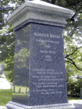
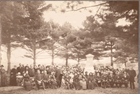
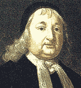
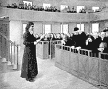
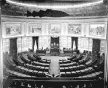
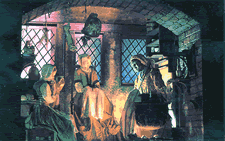
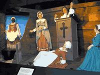
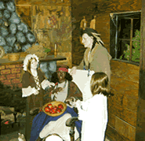

Bridget Bishop was the first person to be executed during the Salem witchcraft trials. In Salem folklore, she is portrayed as a feisty, fun-loving, lusty, innkeeper who can't seem to keep herself out of trouble. Recently, historians have painted a somewhat different picture, owing to the confusion with Sarah Bishop who also appears in the court records of the witch trials. Indisputably, the Bridget Bishop who was tried and hanged possessed a quick wit and independent spirit that could not be crushed by the court of Oyer and Terminer.
 |
A scene from the play "Cry Innocent," performed by the acting company History Alive in the Old Town Hall, Salem, Mass., June, 1999. In this scene, Bridget Bishop, standing in the dock and wearing shackles, listens defiantly to testimony about betwitching a pig delivered by Rebecca Bly, while Judge Hathorne gestures to Rebecca's husband (off stage) to keep quiet. Bridget Bishop's arrest and trial is re-enacted during the summer tourist season in Salem, three times daily in the Old town Hall by Gordon College students Source Photo by Benjamin C. Ray, 1999 |
 |
The cover of a tourist brochure that depicts several features of local tradition concerning Bridget Bishop. Behind her stands the first church of Salem, across from the town water pump. According to a story, recorded by Cotton Mather, . "As this woman [Bridget Bishop] was, under a guard, passing by the great and spacious meeting-house [church] of Salem, she gave a look towards the house. And immediately a demon invisibly entering the meeting-house, Tore down a part of it; so that though there were no person to be seen there, yet the people at the noise running in, found a Board, which was strongly fastened with several nails, transported unto another quarter of the House." Bishop had been accused of witchcraft 13 years earlier in a dispute with a neighbor over her orchard and damages caused by her pig, shown at the lower right. Source Cover: "Salem Happenings," August, 2001. Artist, Stephen K. Swift |
 |
"Lusty Bridget Bishop is arrested. She was the first to hang."Wax figure of Bridget Bishop as tavern keeper in Salem Village. Diorama display, Salem Wax Museum of Witches and Seafarers, Salem, MA Source Photograph by Benjamin C. Ray, 2001 |
Written By Sarah-Nell Walsh
Actress Rebekah Clinard as Bridget Bishop in History Alive production of 'Cry Innocent,' by Mark Stevick, Salem, Summer, 1999.
Salem Witch Trials in History and Literature
An Undergraduate Course, University of Virginia
Spring Semester 2001
Bridget Bishop has developed into a colorful character in the legendary history of Salem Village. As the first woman tried and executed as a witch during the Salem witchcraft trials, she has attracted a lot of imaginative speculation about her character and behavior.
The Bridget Bishop that is most commonly portrayed is one who kept a house of refreshment for travelers, and a shuffle board for the entertainment of her guests. She generally seemed to have exhibited certain behaviors and appearances that exposed her to some scandal. She wore a showy costume for the austere Puritan times -- a red bodice. Her freedom from the severity of Puritan manners and disregard of conventional decorum in her conversation and conduct brought her into disrepute, so the tongue of gossip was generally loosened against her. She is portrayed as a folk heroine in Salem's story. A spirited, feisty, buxom, and lusty woman who flaunted Puritan morals with a happy public house where drinking and gambling occurred. Many say that it was her flashy taste in dress, her smooth and flattering manner with men, and the questionable gaieties that had gone on in her two taverns, which led to people gossiping about her as a witch as far back as King Philips War.
This, however, is not the same Bridget Bishop of history. Research done by historian David Green indicates that scholars and writers have confused Bridget Bishop of Salem with Sarah Bishop, a tavern keeper in Salem Village. Bridget Bishop lived on a small piece of property in Salem Town and was between fifty-five and sixty-five in 1692, when she was accused of witchcraft. The account below follows the more historically accurate description of Bridget Bishop's life, taken from Bernard Rosenthal's book Salem Story.
In 1666, the widow Bridget Wasselbe married Thomas Oliver and had a daughter named Christian. This marriage was less than idyllic. In 1678, Bridget was accused of calling her husband names on the Sabbath, and both she and her husband were sentenced to stand gagged in the market place for their offenses. In January 1679, Bridget and Thomas were both sentenced to be whipped for fighting. It was not unusual for Bridget's face to be battered during her marriage to Thomas Oliver. In 1680, she was accused of witchcraft. This accusation could have been facilitated by Thomas' claim that "she was a bad wife . . .the devil had come bodily to her . . . and she sat up all night with the devil." (Charles Upham, Salem Witchcraft). This accusation occurred after her husband died without leaving a will, and seems to be the classic case of a vulnerable, propertied woman being accused of witchcraft. She posted bond, and there is no record of any punishment. In 1687, she was charged with stealing brass objects. Her record then remains clean until she is brought up on witchcraft charges again in April 1692.
On April 19, 1692 at her examination, Bridget Bishop began her testimony with courtesy and deference. This deferential attitude soon gave way to anger as she realized that denying her involvement was not an effective strategy. The afflicted girls were in the courtroom swooning in response to the imagined spectral advances of Bridget Bishop. Magistrate John Hawthorne unleashed his loaded questions, asking, "How is it that your specter hurts those in this room?" Bridget replied, "I am innocent to a witch. I know not what a witch is." Hawthorne turned this answer to his advantage by asking, "How can you know, you are no witch, and yet not know what a witch is." She replied, "I am clear: if I were any such person you should know it." Although it is not clear what Bridget meant by this comment, Hawthorne clearly took it as a veiled threat and replied, "You may threaten, but you may do no more than you are permitted" (Salem Witchcraft papers). No one can know for certain if this bold interchange earned Bridget Bishop the distinction of being the first hanged on the gallows.
On May 27, Phips established a special court of Oyer and Terminer to try those accused of witchcraft. On June 2, Bridget Bishop was the first person tried in the new court, perhaps because her previous witchcraft accusation made her a likely candidate. In her trial, spectral evidence was given an unprecedented status. She was charged with "tortur[ing], afflict[ing], pin[ing], consum[ing], wast[ing]: & torment[ing] her victims," Abigail Williams, Ann Putnam Jr., Mercy Lewis, Mary Walcott, and Elizabeth Hubbard. Bridget vehemently denied the charges at her trial, believing that to be the only way to avoid execution. She did not realize that her only hope lay in confessing to witchcraft. When Cotton Mather wrote of the evidence against her in his book Wonders of the Invisible World, he included preposterous stories that could best be called gossip. One such story recounts that Bishop cast a glance upon Salem meeting house, while walking under guard. This "look" caused a board, which had been fastened with nails, to be removed to another portion of the house. Her case served as a model for future cases to come, following a very predictable pattern. The "afflicted" persons made their accusations, which were denied by the accused; members of the community told of past acts of witchcraft by the accused; and one or more confessors validated the claim of the accusers. The court used spectral evidence as the primary legal basis to convict Bridget Bishop. Hanged on June 10, her death warrant emphasizes only the harm done to her accusers, primarily on the day of her examination, as the legal justification for the execution.
"On June 10, 1692, High Sheriff George Corwin took [Bridget Bishop] to the top of Gallows Hill and hanged her alone from the branches of a great oak tree. Now the honest men of Salem could sleep in peace, sure that the Shape of Bridget would trouble them no more" (Upham). Bridget Bishop was the first person to be hanged as a result of the infamous Salem witchcraft trials.
David Green, "Salem Witches I: Bridget Bishop," The American Genealogist, Vol. 57, No. 3. 1981: 130-138.
Bernard Rosenthal, Salem Story. Cambridge Univeristy Press, 1997.
Charles Upham, Salem Witchcraft, 1867.
Written By Sarah Nell Walsh
Bridget Bishop was a self-assertive woman who had been accused of witchcraft prior to 1692. Previous experience had taught her to deny allegations of witchcraft at all costs. Unfortunately, in 1692 the situation was different and her only salvation lay in false confession, which she refused to do. Bridget Bishop was married to Edward Bishop when she was accused of witchcraft in Salem. She was widowed twice before marrying Edward. Her second husband Thomas Oliver accused her of witchcraft, claiming that "she was a bad wife. . . the devil had come bodily to her . . . and she sat up all night with the devil." This previous accusation of witchcraft in 1680 was remembered and probably explains her arrest and sentencing in 1692.
John Hathorne and Jonathan Corwin presided over Bridget's examination on April 19, 1692. Many of her accusers were present at the examination, including Elizabeth Hubbard, Ann Putnam, Abigail Williams, Mercy Lewis, and Mary Walcott. A summary of the courtroom examination follows.
As soon as Bridget Bishop entered the courtroom, the afflicted girls fell into fits. Judge Hathorne asked which witchcrafts she was conversant in, to which she replied, "I take all this people (turning her head and eyes about) to witness that I am clear." Then Hawthorne asked the girls if they had been afflicted by Bishop, to which Elizabeth Hubbard, Ann Putnam, Abigail Williams, and Mercy Lewis affirmed that she had. The afflicted girls charged her with having hurt them in many ways and tempting them to sign the book of the devil. Ann Putnam even went so far as to say that Bishop called the devil her God. Bishop continued to proclaim her innocence by saying that she "never saw these persons before, nor [ever] was in this place before." She claimed to be as "innocent as an unborn child."
At that point, Mary Walcott said that her brother Jonathan had torn Bishop's coat while fighting off her specter. When they examined Bishop's coat, they found the tear in exactly the same location. Judge Hathorne continued the attack on Bishop when he accused her of bewitching her first husband to death. She shook her head no in response to the question, which set the afflicted girls into fits. Sam Braybook affirmed that although she told him that she had been accused of witchcraft ten years ago, "she was no witch and the devil cannot hurt her."
Bridget Bishop apparently became frustrated with Hathorne's continual attack on her character and his disbelief in her innocence. Her deferential attitude soon gave way to anger as she slowly realized that denial was not an effective strategy. The following interchange between Bishop and Hathorne is very memorable and is often quoted.
Bishop staunchly states, "I am no witch." To which Hawthorne replies, "Why if you have not wrote in the book, yet tell me how far you have gone? Have you not to do with familiar spirits?" "I have no familiarity with the devil." "How is it then that your appearance doth hurt these?"
"I am innocent."
"Why do you seem to act witchcraft before us, by the motion of your body, which seems to have influence upon the afflicted."
"I know nothing of it. I am innocent to a witch. I know not what a witch is."
"How do you know then that you are not a witch."
"I do not know what you say."
"How can you know, you are no witch, and yet not know what a witch is."
"I am clear: if I were any such person you should know it."
"You may threaten, but you can do no more than you are permitted"
"I am innocent of a witch."
After this comment, Bridget apparently rolled her eyes towards heaven. Immediately, all the girls rolled theirs, and it seemed to the court that a devil was on the loose. After this examination, Bishop was asked if she was not troubled to see the afflicted girls so tormented. She answered no. When asked if she thought they were bewitched, she answered that she did not know what to think about them.
Cotton Mather, using the court records, wrote about the trial of Bridget Bishop in his book Wonders of the Invisible World. The trial was held on June 2, 1692 in the Court of Oyer and Terminer. Even Mather admitted that it was hard to prove the witchcraft, even though "it [was] evident and notorious to all beholders." During Bishop's examination before the magistrates, the afflicted girls behaved as if they were tortured. It seemed that by casting her eye upon them, Bishop could strike them down into fits. The only thing that would stop these fits was the touch of her hand upon the girls. Abigail Hobbs, a woman who had already confessed to being a witch, played into this drama by testifying that Bishop's specter tormented her because of her confession. She also affirmed that Bishop had been present at a meeting of witches, in a field at Salem Village, and took part in a diabolical sacrament.
In addition to this evidence, evidence of other previous witchcraft was brought to light. Bishop was accused of murdering children, bewitching pigs, and coming to various townsmen during the night. In further evidence, "poppets" were found in the wall of her cellar. These puppets were made of rags and hogs bristles, with headless pins in them. Bishop could "give no account unto the court, that was reasonable or tolerable." The final piece of damning evidence was when a jury of women found a "preternatural teat" upon her body. Within three hours, the teat had disappeared, adding to the intrigue.
Her case served as a model for future cases to come, following a very predictable pattern. The afflicted girls made accusations, which were denied by the accused; one or more confessors validated the claim of the accusers; and members of the community told of past acts of witchcraft by the accused. The court used spectral evidence as the only legal basis to convict Bridget Bishop. Hanged on June 10, her death warrant emphasizes only the harm done to her accusers, primarily on the day of her examination, as the legal justification for the execution. Bridget Bishop was the first person to be hanged as a result of the infamous Salem witchcraft trials.
George Burroughs was the only Puritan minister indicted and executed in Salem in 1692. He served as minister of Salem Village from 1680 until he left in 1683. As one of the succession of three ministers who left the Village in the years leading up to the trials, he became involved in the Village's social conflicts. During his stay in Salem he borrowed money from the Putnam family and when he was unable to pay it back, conflict with the Putnams arose. It was at this point that he left. Although he eventually repaid his loan, twelve years later, he was charged, arrested and brought back to Salem from Wells, Maine. Many members of the Salem Village and Andover testified against him and called him the "ring leader" of the witches, a virtual priest of the devil. Cotton Mather also took particular interest in the trial because of Burroughs' unorthodox religious beliefs and practices. He was found guilty and executed on August 19, 1692. His hanging was the only one attended by Cotton Mather, who urged the sympathetic crowd against him.
 |
"Witchcraft Victims on the Way to the Gallows"A scene showing a man and a woman on Gallows Hill. The man may be the Rev. George Burroughs, who is shown standing in prayer. The woman may be Martha Carrier, who was executed with him on August 19, 1692. Also executed on that day were George Jacobs, Sr., John Proctor, Sr., and John Willard. The man on horseback may be the Rev. Cotton Mather who attended the executions on this day and encouraged the hanging to go forward, even though George Burroughs recited the Lord's Prayer perfectly and won the crowd's sympathy. Source Boston Herald, May 14, 1930. © Artist F. C. Yohan |
Written by Amy Nichols (2001) and Elizabeth Whelan, 2002
Salem Witch Trials in History and Literature
An Undergraduate Course, University of Virginia
Spring Semester 2002
Burroughs has often been portrayed in popular accounts of the trials mainly because some of his accusers claimed that he was the "ring leader" of the witches and also because of the especially dramatic nature of his execution in the presence of the Rev. Cotton Mather. Recent research by Mary Beth Norton has revealed that in order to understand George Burroughs' role in the Salem witch trials, it is necessary to see the connection between the witchcraft episode in Salem Village and the war that was taking place in Maine's northeastern frontier. In her book, In the Devil's Snare, Norton writes, "Burroughs, in many ways the key figure in the entire affair, linked Salem Village and Falmouth, Essex County and Maine, the Wabanakis and the witches."
George Burroughs was born to a rather well to do family in Suffolk, England in about 1652. At a young age he left England for Massachusetts Bay Colony and was raised by his mother in the town of Roxbury. He later attended Harvard College and graduated in 1670. He then moved to Maine and started preaching in Falmouth (now Portland) until Indians attacked the town in 1676 forcing him to leave. Eventually, in 1680 he was called to Salem Village to be the new minister.
Ann Putnam, Jr., Burroughs' initial accuser, was not personally acquainted with him, but she had most likely heard about him from Mercy Lewis, a 17 year-old servant in the Putnam family. Lewis was a refugee from the Indian attacks in Maine and knew Burroughs as a child. Ann Putnam, like many other accusers, probably turned gossip into a formal accusation.
Ann claimed that Burroughs, was the leader of the witches and had sided with the Wabanaki Indians and, moreover, that he bewitched Sir Edmond Andros's troops. In the eyes of the local gossips, Burroughs' perceived ties to the Indians and Satan were seen as one and the same in. Norton explains that he was described as "black," a term that suggests a connection both to the "black" Indians and to Satan, known as the "black man." Word spread that Burroughs had survived several brutal attacks by the Indians when nearly all the other defenders at the fort where he was stationed were murdered, people became suspicious -- did Burroughs survive by witchcraft?.
Ann had probably heard through a chain of gossip that Burroughs was jealous that Andros employed Deodat Lawson in a position that Burroughs had wanted. Soon after, Lawson's daughter and wife died. Ann told the grand jury that she had seen the ghost of Mrs. Lawson, who told her that Burroughs had killed her and her daughter because of a disagreement between him and her husband.
Another factor working against Burroughs was the fact that his first two wives had died. Members of the Putnam family testified that he was cruel to his wives, one of whom was related to Judge Hathorne. Ann Putnam claimed that the two wives came to her as visions and told her that Burroughs had killed them and that he was indeed working for the Devil. Burroughs was also known for his superhuman strength. Men at the trial testified that they had seen him "put his fingers into the Bung Barrall and lifted it up, and carried it round him and set it downe again." Others claimed that he was able to effortlessly lift up a six-foot gun using one hand. His brute strength was more proof of his allegiance with the devil.
All this testimony led the court to conclude that Burroughs was indeed a sorcerer and was in fact the leader of the witchcraft-related events. On April 30, 1692, Burroughs, together with several others, was accused of witchcraft. Thomas Putnam and Jonathan Walcott signed the original document of complaint stating the charges. Burroughs was charged with "high suspicion of sundry acts of witchcraft done or committed by then upon the bodies of Mary Walcot Marcy Lewis Abigail Williams Ann Putnam and Eliz. Hubbard and Susan Sheldon." On May 4, 1692, he was forcefully taken from his home in Wells, Maine, to Salem, and put in jail.
Boyer and Nissenbaum suggest that Burroughs was used as a scapegoat. By attributing to him the role of the ringleader, the witchcraft problem was no longer associated with the community of Salem Village but was put upon the shoulders of one man, George Burroughs.
Bernard Rosenthal has also pointed to Burroughs' reputation for having unconventional religious beliefs. In Salem Story, Rosenthal, stresses the significanceof the fact that the Rev. Increase Mather and his son Cotton Mather, both prominent ministers in Boston, did not agree with Burroughs' religious convictions. Rosenthal concludes that the Mathers approval of Burroughs' conviction as a witch may have concealed suspicions that he was in fact a Baptist and a witch.
Cotton Mather was at this time known for his cautionary writings on the use of spectral evidence in the trials. However, as Rosenthal suggests, in Burroughs' case Mather put aside his views on the unreliability of spectral evidence, further suggesting that Mather's hatred of Burroughs was based on Burroughs' role as a religious dissident.
For this reason, scholars have traditionally seen Burroughs as the one person executed for witchcraft for his religious beliefs. On August 3, 1692, many testified against Burroughs. Elizabeth Hubbard, Mercy Lewis, Susannah Sheldon, Mary Walcott and Ann Putnam all claimed that he had come to them and tried to force them to sign his book which Elizabeth said was written in words "as red as blood." Accused witches such as Abigail Hobbs and Mary Warren also charged him with bringing them into the world of Satan. He was the "ring leader of them all" holding the meetings in Salem.
Burroughs' trial was the only one attended by Increase Mather. Mather believed that if someone could perfectly recite the Lord's Prayer then he or she was not a witch. However, as Robert Calef writes in his book More Wonders of the Invisible World, "Mr. Burroughs was carried, through the streets of Salem to Execution; when he was upon the Ladder, he made a Speech for the clearing of his Innocency, with such Solemn and Serious Expressions, as were to the Admiration of all present; his Prayer (which he concluded by repeating the Lord's Prayer) was so well worded, and uttered with such composedness, and such (at least seeming) fervency of Spirit, as was very affecting, and drew Tears from many ( so that is seemed to some that the Spectators would hinder the Execution)".
Nathaniel Hawthorne describes this scene in his powerful story Main Street and refers to Burroughs as going to a "martyr's death". Hawthorne depicts Burroughs as an innocent victim of the terrible trials. When the crowd calls for the execution to be stopped Hawthorne continues "Ah no; for listen to the wise Cotton Mather, who, as he sits there on his horse, speaks comfortable to the perplexed multitude, and tells them that all had been religiously and justly done, and that Satan's power shall this day receive its death-blow in New England". Calef recorded that, "Mr. Cotton Mather, being mounted upon a Horse, addressed himself to the People, partly to declare, that he [George Burroughs] was no ordained minister, and partly to possess the People of his guilt; saying, That the Devil has often been transformed into an Angel of Light." In doing this he reassured the crowd of Burroughs' guilt and the execution proceeded.
Boyer, Paul and Stephen Nissenbaum. Salem Possessed, 1977.
Calef, Robert. More Wonders of The Invisible World, 1700.
Hawthorne, Nathaniel. Main Street, 1850.
Norton, Mary Beth. In the Devil's Snare, 2002.
Rosenthal, Bernard. Salem Story, 1993.
Calling her a "rampant hag" and the "Queen of Hell," the Reverend Cotton Mather harbored no doubts that Martha Carrier deserved to be executed as a witch during the Salem outbreak on August 19, 1692. The Salem documents themselves, however, reveal that her crime was not witchcraft but an independence of mind and an unsubmissive character. A daughter of one of the founding families of Andover, Martha married a young Welsh servant, Thomas Carrier, in 1674, by whom she had four children. The Salem accusation against Martha came only two years after the selectmen of Andover blamed a smallpox epidemic on her witchcraft. Although historians have blamed her accusation on causes ranging from a conspiracy against Andover's proprietary families to reaction against threats to patriarchal inheritance, her contentious spirit and the earlier charge of witchcraft seem the most plausible explanation.
By Kate Murphy
Salem Witch Trials in History and Literature
An Undergraduate Course, University of Virginia
Spring Semester 2001
Best remembered in popular lore as the 'rampant hag' described by Cotton Mather, modern historical studies demonstrate that Martha Carrier was a victim of Salem's outbreak of witchcraft accusations. Carrier was accused of being in league with the devil by the circle of "afflicted" girls, neighbors and even her own children, and hanged as a witch on August 19, 1692. Like many of accused witches, Carrier was a poor, disagreeable woman, for whom this was not the first accusation of witchcraft.
Born Martha Allen, daughter of one of the original founders of the Massachusetts town of Andover, in 1674 Martha married below her station to a young Welsh servant and father of her illegitimate child, Thomas Carrier. Living for a few years in Billerica, the couple returned to Andover in the 1680's with very little money and four children. Martha's independent spirit and lack of deference seem to have quickly alienated her from the rest of the community. The turning point came in 1690 when a smallpox epidemic erupted in the town. Although her family, particularly the men, accounted for 7 of the 13 who died of smallpox in the town, the community of Andover blamed Martha for the tragedy.
Carrier's reputation as a witch found new expression two years later when the outbreak in Salem began. As the testimony of the circle of accusing girls reflected, the Salem community was well aware of Andover's gossip. Susan Sheldon, Mary Walcot, Elizabeth Hubbard and Ann Putnam screamed before the court that they could see the 13 ghosts of Andover. Other neighbors accused her of maleficium, testifying that after harsh words from her, evil things like sick or dead animals or strange illnesses befell them. During her courtroom examination, however, Carrier stood her ground and boldly asserted that those who accused her lied. Asked if she could then look upon the girls, seemingly possessed, without their writhing in pain, she said she would not, for "they will dissemble if I look upon them." Later, she admonished the magistrates, saying "it is a shamefull thing that you should mind these folks that are out of their wits."
Accusations of witchcraft extended beyond Martha to the rest of her family. Her sons Richard and Andrew, ages 18 and 15 respectively, were tied neck to heels until blood was ready to come out of their noses. Under such intense pressure, Martha's own children, including seven-year-old Sarah and ten-year-old Thomas, Jr., testified against her and confessed themselves to be witches. Young Sarah told the court that she had been a "witch Ever Since She was Six years Old that her Moth'r brought a red book to her and She touched it." The assistant minister Thomas Barnard who was responsible for these confessions, managed to get confessions from all but two of accused witches, including Martha, who were also members of his congregation.
One explanation for the targeting of the Carrier family depends upon a conspiracy theory that holds that the motive of the Andover accusations was to punish and remove political power and social influence from the founding families of Andover. According to the originator of this theory, Enders Robinson, (see his book, Salem Witchcraft) a group of ten accusers were in league with Andover's assistant minister Rev. Thomas Barnard in order to gain control over the town's affairs by discrediting the senior minister, Rev. Francis Dane, and the leading families through witchcraft accusations. Robinson points to the concentration of Andover accusations within families were either related to Rev. Francis Dane or to the powerful founding families. Although the correspondence he finds between these groups is interesting, there is no strong evidence supporting such a conspiracy.
An alternative explanation, put forward by Carol Karlsen in her book ,I The Devil in the Shape of a Woman, blames the disruption to the existing socio-economic order that women inheriting a significant amount of money or property would cause. Karlsen argues that a sizable group of accused women were not the typical marginalized women, but wealthy and prominent members of the community, who shared an unusual place within society as primary heirs to money and property. Although Martha might have inherited some property after the majority of her male relatives died in the smallpox epidemic of 1690, such an inheritance would have been minimal. More likely, Martha's established reputation as a witch and as a disagreeable woman made her a target once the momentum of accusations got out of control in Salem.
Enders Robinson, Salem Wichcraft: And Hawthorne's House of Seven Gables,1992.
Carol Karlson, Devil in the Shape of a Woman, 1998.
Ann Putnam, Jr., Marcy Lewis, Abigail Williams, Mary Walcott and Elizabeth Hubbard accused Giles Corey of witchcraft in April of 1692. He pleaded "not guilty" but refused to be tried by the court which, in his view, had already determined his guilt, so he stood mute rather "putting himself on the country." He was sentenced to peine forte et dure, even though it was an illegal punishment, and ended up being torturously crushed to death on (or before) September 18, 1692. One of the major factors which made Giles Corey a prime target was not only his relationship with the rest of the community but also his past encounters with the law, including a prior conviction for murder. His chosen means of resistance and dramatic death reveal a strength of character that playwrights, from Longfellow to Arthur Miller, have found irresistible.
 |
"Father! Father!"Illustration of a scene in Mary Wilkins Freeman's play "Giles Corey, Yeoman." (1893) in which a fictional daughter, named Olive Corey, bids goodbye to her father before his torture by crushing stones. Source Giles Cory, Yeoman. Volume LXXXVI. December 1892 to May, 1893 : 33. New York: Harper & Brothers, Publishers, 1893. Artist: Howard Pyle. |
 |
"Look! Look! It is the ghost of Robert Goodell."Illustration of a scene in Henry Wardsworth Longfellow's play "Giles Corey of Salem Farms" in which Mary Warren sees the ghost of a man whom she believes Giles Corey killed. Seated next to Giles Corey, who stands in the dock, she calls out and points to the ghost. Seventeen years earlier, Giles Corey had in fact been accused of murdering a man named Jacob Goodale, a servant in his house, who died suddenly. Corey was later acquitted of the charge. It was Thomas Putnam, reporting his daughter Ann's vision of Goodale's ghost, who brought to the court's attention this old accusation of murder this old accusation of murder in a letter in 1692 as evidence against Corey. SourceHenry Wadsworth Longfellow, "Giles Corey of Salem Farms," in . Houghton Mifflin Boston, 1902. Artist John W. Ehninger, 1880, p. 752. |
 |
"Trial of Giles Corey"Giles Corey being accused in court by one of the "afflicted" girls Source :Giles Corey being accused in court by one of the "afflicted" girls. A Popular History of the United States. By William Cullen Bryant. Vol. II: New York: Charles Scribner's Sons, 1878: 459. Artist: C. S. Reinhardt. |
 |
Diorama showing Giles Corey being crushed with stones. Source Witch Dungeon Museum, Salem, Massachusetts. Photograph by Benjamin C. Ray, 1999. |
By Heather Snyder
Salem Witch Trials in History and Literature
An Undergraduate Course, University of Virginia
Spring Semester 2001
Born in England about 1611, Giles Corey was one of the six men to be executed during the Salem witch trials of 1692. John Proctor, George Burroughs, George Jacobs Sr., John Willard, and Samuel Wardwell were all hanged after being convicted of witchcraft, while Giles Corey was pressed to death with stones for refusing to "put himself on the country," that is, to allow himself to be put on trial. He emigrated from England to Salem and remained there until 1659 when he relocated to Salem Farms, just south of Salem Village. There he owned an extensive plot of land, which resulted in the appearance of his being a prosperous farmer. His personality, reputation and relationships with others however tainted that picture. Although he had become a full member of the Village church and had close ties with the Porter faction in the Village, his reputation as one who lacked consideration for others in the community and as one who lead a "scandalous life," quite possibly had a significant impact on his being accused as a witch. Because of Corey's previous encounters with the law, there was further suspicion of his guilt during the witch trials. In 1675, Corey pummeled and killed a farm worker named Jacob Goodale. He was found guilty of the murder and ordered to pay a substantial fine.
By the time of the trials, Giles Corey was already 80, and was married to Martha, his third wife. On March 19, 1692, Martha was arrested for witchcraft. Giles, for reasons unknown to others, decided to testify against his wife, but eventually tried to recant his deposition, which lead to greater suspicion of his involvement in witchcraft because of the stigma surrounding perjury. One month later, on April 19, 1692, Giles Corey was accused of witchcraft and there was a warrant out for his arrest. There were two primary accusations, one from Abigail Hobbs who during her own confession to witchcraft named Giles and Martha Corey as fellow witches, and one from Exekiell Chevers and John Putnam, Jr., who filed an accusation on behalf of Ann Putnam, Marcy Lewis, Abigail Williams, Mary Walcott and Elizabeth Hubbard.
After his arrest, Giles Corey remained in jail with his wife until his trial on September 16, 1692. He went to the trial and pleaded "not guilty" but simultaneously refused to "put himself on the court" because of his contempt for the court. Corey was not willing to submit himself to a trial by jury that, he believed, had already determined his guilt. Because the court had accepted the testimony of the same accusers in a trial on September 9, and in all previous trials, Giles understood that there was no chance of being found not guilty and that a conviction would be inevitable. In every previous trial when an accused individual had plead not guilty, not a single person was cleared so Giles preferred to undergo "what Death they would put him to" rather than be found guilty of witchcraft and thus put to death. According to English law, Giles was ruled as "standing mute" because he would not be tried by "God and my country." The Court of Oyer and Terminer strictly adhered to the requirement that a defendant "put himself on the country". Because Giles stood mute, he was given the dreaded sentence of peine forte et dure even though this procedure had been determined to be illegal by the government of Massachusetts. It was illegal for two reasons: there was no law permitting pressing, and it violated the Puritan provisions of the Body of Liberties regarding the end of barbarous punishment. In the entire history of the United States, Giles Corey is the only person ever to be pressed to death by order of a court.
There is a strong local tradition Giles Corey refused trial in order to avoid a conviction that would result in the forfeiture of his property to the government. Under English and Massachusetts law, however, conviction could not result in the forfeiture of an estate. However, the George Corwin, the Sheriff of Essex Country illegally seized the property of some of those arrested for witchcraft. Before his arrest, Corey himself was clearly concerned about his extensive estate, and he wrote a will that deeded his land to his sons-in-law William Cleeves and John Moulton. The laws clearly stated that landowners retained the right to give their land to their heirs rather than forfeit it because of a conviction, and apparently Corey knew it. Thus it does not seem likely that Corey refused to go on trial to save his property.
On or before September 18, 1692, Giles Corey was slowly pressed to death in the field next to the jail. In the literature about Giles Corey's tortuous death, there is reference to his famous last words, "more weight." These words were uttered as a final attempt to expedite his death while also showing that not even imminent death could convince him to go to trial. It is even told that the Sheriff took his cane and pressed Giles' tongue back into his mouth just before he died at the end of the two days of being slowly crushed. On September 18, 1692, Giles Corey was ex-communicated from the Village church so that he would not die as a member of the church. On September 21, 1692, Martha, his wife, was hanged on Gallows Hill. It has been speculated that the publicity surrounding the pressing of Giles may have in fact helped to build public opposition to the witchcraft trials.
In Arthur Miller's, The Crucible, Giles Corey is a prominent character in part because of his unique role in the witch trials. Giles' colorful past, his willingness to be tortured before compromising his own values, and his role in his wife's conviction are the factors which make him such a vibrant character. Although Millers' presentation of Giles Corey in The Crucibleis not purely historical, his place in the witch trials will never be forgotten. Giles Corey did in fact testify against his wife in front of the court, and he seems to have stood mute as an act of dramatic defiance. Henry W. Longfellow's Giles Corey of Salem Farms is another piece of literature that portrays Giles Corey in a strong and powerful manner. In his play, Corey's character is defined by his last conversation with his friend Capt. Richard Gardner. In the play, Giles Corey says: "I will not plead. If I deny, I am condemned already, in courts where ghosts appear as witnesses, and swear men's lives away. If I confess, then I confess to a lie, to buy a life which is not a life, but only death in life. I will not bear false witness against any, Not even against myself, whom I count least...I come! Here is my body; ye may torture it, but the immortal soul ye cannot crush!"
This passage shows why the character of Giles Corey attracts attention not only when examining court documents from 1692 but also the present day literature. Giles Corey will be remembered unambiguously in literature and history because of his act of supreme defiance to the Salem witch trials.
David C. Brown, "The Case of Giles Cory," Essex Institute Historical Collections. Vol. 121, No. 1985: 282-299.
The accusation of Martha Corey marked a turning point in the Salem witch trials crisis of 1692 in Massachusetts. Corey was a newly accepted member of the village church and broke the established mold of only social pariahs being accused of practicing witchcraft. Major contributing factors to the case being brought against her were an illegitimate son born to Corey in the 1670s, and her outspoken criticisms of the trials and the judges involved in the convictions. Although Martha espoused her innocence throughout her whole ordeal, she was put to death on September 22, 1692.
Written by Jillian Smith and Eliza Pollack
Salem Witch Trials in History and Literature
An Undergraduate Course, University of Virginia
Spring semester 2002, Fall Semester 2006
In 1692, the small town of Salem, Massachusetts was wracked by terror and confusion. By March, accusations and convictions of witches and witchcraft had reached a high point, and it seemed like no one was safe from the madness. In late February, Elizabeth Parris and Abigail Williams had named Tituba, Sarah Goode, and Sarah Osborne. These three women seemed to fit a kind of stereotypical pattern. They were perceived by many as social outcasts, misfits, and were not members of the church. On March 11, 1692, this pattern took a drastically different turn, however. Under the pressure of Reverend Samuel Parris, the two girls accused Goodwife Martha Corey, a new but universally accepted good member of the Salem church; to some, she was even known as the "gospel woman." Citizens of Salem were shocked at this fourth accusation, and while no one questioned either Elizabeth or Abigail on their indictment, eyebrows were certainly raised when Martha Corey was asked to testify in court on March 22, 1692.
Martha Corey's active church participation and religious faith were genuine, but her history was not as pure. Over twenty years earlier, Corey had given birth to an illegitimate son whom she named Benoni. Benoni was thought to be mulatto and was living proof of Corey's indiscriminate past. Because the boy lived with Corey and her husband, Giles, town members were completely aware of her situation, and it is likely that this was one factor that played into the afflicted girls' accusation. After being accused, Martha made a concerted effort to dispel the rumors that she was a witch, and cited her religious fervor as proof that she could never support nor believe in the devil. In her book, In the Devil's Snare, however, author Mary Beth Norton makes the point that Martha's "acceptance into the church, given her personal background and the exclusivity of church membership in Salem Village, must have set tongues wagging. On at least one other occasion in seventeenth-century New England, the admission to church membership of a woman with a checkered sexual past fomented an uproar among her neighbors. The same could well have happened in the case of Martha Corey, causing speculation about the validity of her reputed adherence to Christianity (Norton, page 46)."
A second contributing factor, perhaps even more important than her illegitimate son, was Corey's vehement, and public, denunciations of the witch trials and the judges involved in hearings. From the beginning, Corey was skeptical about even the existence of witches. In an encounter with a member of the Putnam family, Martha stated that she "did not think there were any witches" in New England and believed that she could" open the eyes of the church to the truth about non-existence of the devil himself. Corey was also critical of the afflicted girls themselves. During her trial, she asked that the judges not believe the actions of the girls, and made similar claims throughout the Salem crisis as a whole. This fact combined with her questionable past made her an easy target for the afflicted girls. By accusing her, the Putnams demonstrated that they would willingly attack anyone who openly questioned their motives and authority.
In their book Salem Possessed, Paul Boyer and Stephan Nissenbaum make a third argument for why Martha Corey was accused of witchcraft. By 1692, the Putnam family had fallen on social and economic hardship, and its members were looking for people to blame for their essential fall from grace. Two easy targets of their anger were Mary Veren Putnam and Joseph Putnam, the stepmother and half-brother of Thomas Putnam and his siblings. The ideal revenge would be to accuse both of witchcraft; for various reasons, however, including the perceived social power of Mary and Joseph and their familial ties, the Putnams never brought cases against them. Instead, they focused their attention on less-threatening targets, like Martha Corey. Indeed, Boyer and Nissenbaum believe that the Putnams projected their anger and dissatisfaction with Mary onto Martha: "The accusation of…Corey was a key point along the psychological progression which the Thomas Putnam family, and the entire witchcraft episode, followed in 1692…In turning on [Corey] they betrayed the fact that witchcraft accusations against the powerless, the outcast, or the already victimized were not sufficiently cathartic for them. They were driven to last out at persons of real respectability – persons, in short, who reminded them of the individuals actually responsible (so they believed) for their own reduced fortunes and prospects…Corey was the ideal transition figure: she combined respectability with a touch of deviance. If the Putnams could bring her down, they would be free, not only politically, but psychologically as well, to play out their compulsions on a still larger scale (Boyer and Nissenbaum, page 146-147)."
On March 21, 1692, Corey was forced to testify on her innocence in court. When asked by Judge Hathorne why she "hurt" "these persons," Corey responded, "I never had to do with Witchcraft since I was born. I am a Gospell Woman." When urged to confess to her crimes, Corey said that if she was guilty, she would admit it; but she maintained that she was an innocent woman throughout the entirety of the trials. No matter what she said on the stand, Corey realized the futility of her efforts and told Hathorne and the community: "Ye are all against me& I cannot help it." Corey, like the other accused witches, was involved in a battle against the dramatic performances of the afflicted, and determined, young women. It was truly her word against the testimonies of others, telling similar stories to Edward Putnam, who spoke on behalf of Ann Putnam, Jr., saying that Corey "desired to come and see his daughter Ann Putnam: who had charged Martha Cory to her face…but no sooner did Martha Cory come into the house of Thomas Putnam but Ann Putnam fell ill in grievous fits." Martha's sense of desperation could not have proved to be any truer. On September 22 of the same year, Martha Corey was hung to death in Salem. She was one of nineteen men and women killed during the witchcraft crisis.
The accusation and conviction of Martha Corey marked a turning point in the Salem witch crisis. Corey was a well-liked, accepted, and covenanted member of the church who was socially and economically stable. Her past sexual indiscretions, combined with her opposition to the trials and the personal vendettas of the Putnam family, however, all made her a fairly easy target for the afflicted girls. Martha Corey opened the door for anyone to be accused of witchcraft. She removed all of the social boundaries and led the way for over one hundred more men and women to be accused of cavorting with the devil in Massachusetts.
Bibliography:
Boyer, Paul and Nissembaum, Stephan. Salem Possessed. Harvard University Press. United States of America. 1974.
Norton, Mary Beth. In the Devil's Snare: The Salem Witchcraft Crisis of 1692." Random House, Inc. New York, NY. 2002.
"Salem Witch Trials: Documentary Archive and Transcription Project."
/salem/home.html
The story of Mary Easty, the 58-year-old sister of Rebecca Nurse and Sarah Cloyce from Topsfield usually draws the portrait, now legendary, of a courageous martyr fighting for her innocence. Her case gives insight into the workings of the trials, and her eloquent and legally astute petitions have been said to help bring them to an end.
Written By Anne Taite Austin
Salem Witch Trials in History and Literature
An Undergraduate Course, University of Virginia
Spring Semester 2001
Considering the assumption that witchcraft was hereditary, Mary (Towne) Easty was certain to be accused of witchcraft after her sister, Rebecca (Towne) Nurse, was condemned for her unwavering appeal of innocence. Mary Easty was not a member of Salem Town or Village, but a resident of Topsfield, a settlement just north of the Village. Animosity had festered between members of Salem Village and Topsfield since 1639 when the General Court of Massachusetts granted Salem permission to expand northward in the direction of the Ipswich River, but then only four years later the same court authorized inhabitants of another Village, Ipswich, to found a settlement there. As land became scarcer, quarrels regarding boundaries between the settlement to become known as Topsfield and Salem went on for a century. The Putnams of Salem Village embodied this battle in their quarrels with the Nurse family, Mary Easty's brother-in-law. According to Boyer and Nissenbaum in Salem Possessed, considering the bitterness between these families, it can be seen as no coincidence that the three Towne sisters, Rebecca Nurse, Sarah Cloyce and Mary Easty, were all daughters and wives of Topsfield men eventually to be persecuted by Putnam women in 1692 on behalf of Putnam men.
More interesting than the accusations against Easty is her experience during the trials. She was accused on April 21, examined on the 22nd, and imprisoned after denying her guilt. During her examination, Magistrate John Hathorne aggressively questioned Easty, or more accurately, tried to lead her to a confession by the following line of questioning:
"How can you say you know nothing when you see these tormented [girls], & accuse you that you know nothing?" "Would you have me accuse myself?"
"Yes if you be guilty."
"Sir, I never complied but prayed against [the devil] all my dayes... I will say it, if it was my last time, I am clear of this sin." (SWPI 120)
In a surprising moment, Hathorne, clearly affected by the convincing manner with which Easty spoke, turned to the accusers and asked, "Are you certain this is the woman?" This question acted as a symbol for the accusers to release their full energy into tormented fits. Hathorne was now convinced and imprisoned Easty. The girls, however, seemed not to be fully convinced of their own accusations. Perhaps due to pressure from community around Easty, all of the accusers, except Mercy Lewis, began to back off their claims and Easty was released from jail on May 18.
The details of what happened next provide undeniable clues about the power of the accusers and the impossibility of conducting a fair juridical process. After Easty's release, Mercy Lewis fell into violent fits and appeared to be approaching death. Mercy Lewis later explained that Easty was tormenting her, and "said [Easty] would kill [Lewis] before midnight because she did not cleare hir so as the Rest did." (Salem Witchcraft Papers, I: 124) Mary Walcott, Abigail Williams and Ann Putnam were brought to her bedside in an effort to discover who was tormenting Mercy. Along the path to the Mercy's house, Ann and Abigail explained that they saw Easty's specter tormenting Mercy, strongly suggesting a collaboration effort had already taken place before Mercy began her torments. Frances Hill in A Delusion of Satan calls this episode a propaganda scheme to show doubting Villagers the dire consequences of freeing witches from jail. Mercy and four others cried out against Easty on May 20. Mercy's fits did not cease until Easty was back in prison in irons demonstrating the effective power of the accusers.
While Easty remained in jail awaiting her September 9 trial, she and her sister, Sarah Cloyce, composed a petition to the magistrates in which they asked, in essence, for a fair trial. They complained that they were "neither able to plead our owne cause, nor is councell allowed." They suggested that the judges ought to serve as their counsel and that they be allowed persons to testify on their behalf. Easty hoped her good reputation in Topsfield and the words of her minister might aid her case in Salem, a town of strangers. Lastly, the sisters asked that the testimony of accusers and other "witches" be dismissed considering it was predominantly spectral evidence that lacked legality. (Salem Witchcraft Papers, I: 303) The sisters hoped that the judges would be forced to weigh solid character testimony against ambiguous spectral evidence. The petition did not change the outcome of Easty's trial, for she was condemned to hang on September 17th. But together with her second petition, Easty had forced the court to consider its flaws.
Easty's second petition was written not as a last attempt to save her own life but as a plea that "no more innocent blood may be shed." (SWP I :304) She concedes saying that the court had the best of intentions, but only more innocent deaths would occur if the court continued its practices, for she like many others could not "belie [their] own soul." She proposes two strategies for the court in to use when determining witchcraft: First, she asks that the accusers be kept apart to see if under such circumstances they would all tell the same experiences. If they were able to give similar credible accounts of their spectral experiences then any doubt would be removed as to the guilt or innocence of the person on trial. This proposal brings to mind Thomas Brattle's observation in his famous Letter of October 8, 1692 that the accusers, when not claiming to be attacked by specters, were otherwise in good health. Easty was obviously not the only skeptic of the accusers' spectral torments. Secondly, Easty proposed that all confessing witches be brought to trial as well as those confessing innocence. Rosenthal writes in A Salem Story that in an atmosphere of rising doubt, "for the court to ignore Easty's challenge would be to acknowledge to the critics that the proceedings were fatally flawed - that the hunt was not really for witches after all but for validating the court."
Easty was hanged on September 22, 1692. Her demeanor at Gallows Hill is documented by Calef: "when she took her last farewell of her husband, children and friends, was, as is reported by them present, as serious, religious, distinct, and affectionate as could well be exprest, drawing tears from the eyes of almost all present." Easty challenged the court to no personal avail, but she exposed the weakness of the court for the benefit of others.
Boyer and Nissenbaum. Salem Possessed
Calef, Robert. More Wonders of the Invisible World.
Hill, Francis. A Delusion of Satan: the Full Story of the Salem Witch Trials
Miller, Perry. "The New England Mind, From Colony to Province.
Rosenthal, Bernard, Salem Story; Reading the Witch Trials of 1692.
Boyer & Nissenbaum, eds., Salem Witchcraft Papers, Volume I
Starkey, Marion. The Devil in Massachusetts, A Modern Inquiry into the Salem Witch Trials.
Upham, Charles. Salem Witchcraft;.
Sarah Good was born to a prosperous innkeeper in 1653. However, her father's estate became entangled in litigation leaving Sarah Good in poverty. After the death of her first husband, she married William Good. The Goods lived a life of begging and poverty in Salem Village. Sarah was regarded as an unsavory person and has come to be regarded through literature as the stereotypical witch, a disreputable old hag. Good was among the first three women accused of witchcraft in 1692 and was the first to testify. She never confessed guilt, but, like Tituba, she did accuse Sarah Osburne, an act that was credited with validating the witchcraft trials and accusations. Good was hanged as a witch on Tuesday July 19, 1692, but not until after the imprisonment of her six year old child Dorcas, also accused of witchcraft, and the tragic death of her infant in prison.
Written By Sara Jobe
Salem Witch Trials in History and Literature
An Undergraduate Course, University of Virginia
Spring Semester 2001
Sarah Good was born in 1653 to a well off innkeeper named John Solart. However, her father's estate was tied up in litigation that left Good virtually nothing. Her first marriage was to a poor indentured servant named Daniel Poole who died in debt in 1686. Her second marriage to William Good was doomed from the outset because the couple had to pay for the debts of first husband Poole. The Goods were homeless, renting rooms in other people's houses, and they had two young children. William worked as a laborer around Salem Village in exchange for food and lodging, but it became increasingly difficult for the family to find a place to stay as Sarah's reputation for and being socially unpleasant spread throughout the town. The family was regarded as a nuisance to the town, and by 1692 they were virtually beggars.
Good's position as a disreputable and marginal member of society made her a perfect candidate for witchcraft accusations. On February 29, 1692, the first warrant was issued for the arrest of Sarah Good, Sarah Osborne, and Tituba. The three were accused initially of afflicting Betty Parris and Abigail Williams, and later many other accusers came forward to testify about injurious actions and spectral evidence against Good. Good was the first to testify in the Salem Witchcraft trials, and Bernard Rosenthal in Salem Story asserts that Good was specifically chosen to start the trials off because most people were in support of ridding Salem Village of her presence. Even her six-year-old daughter Dorcas was frightened into testifying against her, and although her husband did not call her a witch, he said that he, too, had reason to believe she was close to becoming one, thus, perhaps, protecting himself from accusation. One of Good's trial records quotes William Good as saying, "it was her bad carriage to [me] and indeed say I with tears that she is enemy to all good." Despite the overwhelming sentiment against her, Good adamantly denied Magistrate John Hathorne's accusations. When Hathorne in the pre-trial hearings asked, "Why do you hurt these children?" Good responded, "I do not hurt them. I scorn it." She also stated repeatedly, "I am falsely accused."
Although Good never confessed, she did accuse Sarah Osborne of afflicting the girls after witnessing the accusers fall down in fits in the courtroom. Historians generally agree that this accusation by Good was one of the first and strongest legitimizations of the witchcraft trials. Only one person came forth to defend Good. When one of the girls accused Good of stabbing her with a knife and produced a broken knife tip to prove it, a man came forward showing that it was his knife from which the tip had been broken in the presence of the accusing girl. Far from invalidating the girl's testimony against Good, Judge Stoughton simply asked the girl to continue with her accusations with a reminder to stick to the facts.
Good was condemned to hang but was pardoned until the birth of her child. Her daughter Dorcas was accused of witchery and was imprisoned for over seven months. Although the child of six years was eventually released on bond, she was psychologically damaged for the rest of her life. Good's infant died in prison with her before Good was hanged. Her execution occurred on Tuesday July 19, 1692. According to local tradition, when Good stood at the gallows prepared to die she was asked once more by Rev. Nicholas Noyes, assistant minister in the Salem church, to confess and thus save her immortal soul. Far from confessing, Good is said to have screamed, "You're a liar! I'm no more a witch than you are a wizard! If you take my life away, God will give you blood to drink!" It was this constant refusal to confess that Bernard Rosenthal believes led Good to the Gallows, even more so than all of the accusations against her.
The way in which Good has been portrayed in literature is worth mentioning because it sheds light upon how the Salem Witch Trials have been popularly imagined and how the accused witches were and are viewed today. Good is always depicted as an old hag with white hair and wrinkled skin. She is often said to be sixty or seventy years of age by the same writers who clearly state that she was pregnant and had a six-year-old daughter. Even accounts from Salem Villagers and magistrates at the time refer to her as an old nuisance, hag, and bed-ridden. How did such a misconception arise? Perhaps her hard life did have such a physical effect on Good that she did appear extremely aged. On the other hand, witches are described in literature then and now as being old wicked women. If Good was to represent the typical witch worthy of execution, then it is not surprising that all of the stereotypes would be accordingly attached. Good was a marginal woman and no doubt a nuisance to her neighbors. However, the Salem trials were conducted unfairly, with a presumption of guilt, and little evidence. Marginality is not worthy of hanging, and Good was never proved to be nor did she confess to be a witch.
Boyer, Paul and Stephen Nissenbaum. Salem Possessed: The Social Origins of Witchcraft. Cambridge, MA: Harvard University Press, 1974.
Karlson, Carol. F. The Devil in the Shape of a Woman: Witchcraft in Colonial New England. New York: W. W. Norton, 1998.
Rosenthal, Bernard. Salem Story: Reading the Witch Trials of 1692. Cambridge: Cambridge University Press, 1993.
George Jacobs, Sr. was about 72 years old when he was hanged as a wizard on August 19, 1692, along with three other men and one woman -- the first time men were executed for witchcraft in Salem. He was accused, among many others, by his granddaughter, Margaret Jacobs who was also accused and imprisoned. Depending on scholarly opinion, he has been seen as the victim of personal grudges, the casualty of the socio-political climate of Salem, or the target of cultural system's effects on young, socially subordinate women.
 |
"Trial of George Jacobs, August 5, 1692."This well-known, dramatic painting by New York artist Thompkins. H. Matteson, was painted in 1855. Four years later, it was presented to the Peabody Essex Museum in Salem by local businessmen Messrs. Ripley and Charles A. Ropes. |
 |
"Trial of George Jacobs, August 5, 1692."(Detail) Source Oil painting. © Peabody and Essex Museum, used with permission. The painting depicts the trial of George Jacobs, Sr. at the Court of Oyer and Terminer in Salem. The scene is an imaginary one, as no records of the actual trial exist, and it its not known who was present at Jacobs' trial on August 5th. The inspiration for the painting comes from two moving documents written by 17year-old Margaret Jacobs: "Margaret Jacobs to her Father" and "Recantation of Margaret Jacobs." See In addition to the officials of the court, Matteson portrays several members of the George Jacobs family who became caught up in the witchcraft accusations in Salem Village. Kneeling in the foreground is the white haired, 72 year-old George Jacobs, Sr., wearing an expensive red cape, with his walking stick lying next to him on the floor. At the center of the picture, pointing her finger directly at Jacobs, is his granddaughter Margaret Jacobs. Urged to confess to witchcraft to save her life, she accused her grandfather among others who had already been accused. The distraught figure lunging towards Margaret is her mother Rebecca Jacobs, who was said to have been mentally deranged at the time. She, too, was accused of witchcraft. Standing next to George Jacobs, Sr. is his son, George Jacobs, Jr., whom Matteson shows responding in horror to his daughter's accusation of her grandfather. In the foreground, Matteson places a young man and a girl suffering from "fits," caused by George Jacobs senior's invisible "specter." The girl is possibly Sarah Churchill, Jacobs' household servant, or perhaps Ann Putnam, both of whom repeatedly testified that Jacobs' specter attacked them. The black robed magistrates are shown at the bench, with the chief magistrate, William Stoughton, towing over the commotion caused by Margaret's accusation of her grandfather. One of the magistrates, perhaps John Hathorne, who often took the lead role in interrogating the accused in court, holds a written document, in front of the young Margaret Jacobs. This document may be intended to represent Margaret's written confession in which she accuses her grandfather. Judge Hathorne gestures towards the clerk of the court, Stephen Sewall, who is shown writing down Margaret's testimony at the clerk's table, with the other court records lying in front of him . In the background against the windows Matteson shows a group of people who may represent the grand jury. The artist also depicts the large crowd of onlookers that typically attended the trials in Salem. |
 |
Gravestone of George Jacobs, Sr. placed in the cemetery of the Rebecca Nurse Homestead, 1992. The remains of a man believed to be George Jacobs, Sr. were recovered from the Jacobs property in the 1950s and finally laid to rest Sunday, August 2, 1992, 300 years after he was hanged on Gallows Hill. Source Photograph by Richard B. Trask. |
Written By Kristin Buckstad
Salem Witch Trials in History and Literature
An Undergraduate Course, University of Virginia
Spring Semester 2001
George Jacobs, Sr. was born ca. 1620. Not much is known about when he came to Massachusetts Bay Colony, or about his first wife. He had three children from his first marriage, all born in Salem. George Jr. (b. ca. 1649), Mary (b. ca. 1650), and Ann (b. ca. 1655). He bought land in Salem around 1658 and married his second wife, Mary, about 1673. He had lived in Salem for a little over thirty years when he was accused of witchcraft.
George Jacobs, Sr. was arrested on May 10, 1692, along with his granddaughter Margaret Jacobs. He was examined twice, on the day of his arrest and on the following day. His trial took place in early August, and he remained in prison from the time of his arrest until his execution on August 19.
His primary accuser was Sarah Churchill, who was a servant in his home. She came from a wealthy family of English gentry in Maine but was most likely orphaned in Indian Wars. She, like Margaret, had been accused of witchcraft and, in her confession, accused others. George Jacobs granddaughter Margaret herself confessed to witchcraft and accused her grandfather among others who had already been accused in order, she wrote, "to save my life and to have my liberty." The list of accusers against Jacobs did not end there. It swelled to include Abigail Williams, Ann Putnam, Mercy Lewis, Elizabeth Hubbard, Mary Walcott, Sarah Bibber, Mary Warren, Joseph Flint, Thomas Putnam, John Putnam, Jr., and John DeRich.
The women accused his Jacobs' specter of beating them with his walking stick and other physical abuses. Not only did the women testify that Jacobs afflicted them, they also testified to witnessing the afflictions of the others. During his testimony, John DeRich, a sixteen-year old boy, was the only person to claim that Jacobs afflicted him. The Putnam men testified that they witnessed the afflictions that Mary Walcott and the other women suffered on May 11 at the hands of Jacobs' specter.
The Puritans believed that witches and wizards had proof of their covenants with the Devil on their bodies. Doctor George Herrick was sent to examine Jacobs' body for the witch's "teat," and found one on his right shoulder. This slight protuberance on his skin combined with the spectral evidence made the case strong enough for indictment.
George Jacobs, Sr. emerges as an interesting person from the records of his examinations on May 10 and 11. He was incredulous from the moment the first accuser, Abigail Williams, cried out against him. He laughed in court, always a risky response and said: "Because I am falsely accused.-Your worships all of you do think this is true?" One of his most famous protest was the defiant assertion, "You tax me for a wizard, you may as well tax me for a buzzard I have done no harm." Emphatically portraying his unwavering Christian faith, he declared, "Well: burn me, or hang me, I will stand in the truth of Christ, I know nothing of it." Several times he argued that "The Devill can go in any shape" or "can take any likeness." This was sound theological doctrine at the time, warning the court that it was doing the Devil's work by accusing innocent people. The judges, however, believed that the Devil cannot take a person's form "without [his] consent."
George Jacobs, Sr. was then indicted, tried, and found guilty of witchcraft. He was hanged on August 19, 1692 with George Burroughs, John Proctor, John Willard, and Martha Carrier. This was the first time men were executed as witches in Salem. Meanwhile, Jacobs' granddaughter Margaret Jacobs was free from danger after confessing and accusing her grandfather but remained in jail. Her father, George Jacobs, Jr., was also accused but fled from Salem Town. When he did so, he left behind his wife, Rebecca, in jail facing witchcraft charges. She became severely emotionally disturbed and was most likely ruled mentally incompetent and escaped conviction. George Sr.'s second wife, Mary, survived him and remarried on June 23, 1693 to John Wilds whose wife had been hanged as a witch on July 19, 1692. Jacobs body was retrieved from Gallows Hill by his family and buried on his land. In the 1980's his body had to be moved quickly, due to the sale of the Jacobs family property,. His bones were kept in storage in the Danvers Archive until 1992 when he was finally put to rest in the Rebecca Nurse Cemetery.
George Jacobs, Sr.'s role in the witch trials has been interpreted in several ways. Bernard Rosenthal views him as the victim of fabrication. For example, Ann Putnam and Abigail Williams knowingly put pins in their hands and accused his specter of putting them there to add to evidence against him (Salem Story). He was also a victim of the life-saving strategy that the accused learned during the early course of the trials: confess and your life will be spared. Two of his primary accusers were among the accused who confessed to save themselves..
Paul Boyer and Stephen Nissenbaum interpret the trials in socio-economic and political terms. They argue that many members of the more rural and agricultural Salem Village (e.g. the Putnam family) were threatened by those with economic and political connections to Salem Town (e.g. the Porter family), the seaport and center of emerging capitalism. Salem Village had been trying to assert its independence from the Town by establishing its own church, and inhabitants of the Village with ties to the Town were seen as threats to the cause of Village independence. As such, the majority of accusers was from the Village and the majority of the accused who lived on the western side of the Village nearer to the Town. George Jacobs, Sr.'s son, George, was good friend of the Porters, making the family vulnerable to accusations, particularly from the Putnams. The phenomenon of the accused becoming accusers was due, they argue, to the swarm of accusations made in the heat of politics and economics. Eventually the confusion had to fall back on itself.
Carol Karlsen offers a more gender-oriented analysis. The "possessed accusers" were usually subordinate members of society such as servants. Many of them, like Sarah Churchill, were orphans. Their prospects for improving their social standings were virtually nonexistent since they had no families and no dowries to support them. Totally dependent upon the will of others, their discontent and anxiety would have been quite marked. Puritan society, however, did not tolerate socially aggressive and assertive women. Their fears were then converted, psychologically, into the belief that they were either witches or were possessed. After all, Carol Karlsen argues, a society that teaches the existence of possession will invariably contain persons who think they are possessed and are believed to be so by others. As for the specific reason that Sarah Churchill accused George Jacobs, he may have been seen as a tormentor or harsh master since most of the accusations contained charges of physical abuse.
All of these explanations fall short, however. None of them explains why Jacobs own granddaughter would accuse him of all people or why such a large number of accusations flew at Jacobs, except for the fact that he publicly denounced the circle of "afflicted" girls, thus opening them to charges of fraud and compliance with the Devil. If modern students and scholars find it hard to explain why so many people would spend their time accusing a 70 year-old man, it is quite easy to see why George Jacobs, Sr. laughed and told the judges that he could not believe this was happening.
Boyer, Paul and Stephen Nissenbaum. Salem Possessed: The Social Origins of Witchcraft, 1974.
Jacobs family. Home page. March 2001.
Karlson, Carol. F. The Devil in the Shape of a Woman: Witchcraft in Colonial New England, 1998.
Rosenthal, Bernard. Salem Story: Reading the Witch Trials of 1692, 1993.
Paul Boyer and Stephen Nissenbaum, eds., The Salem Witchcraft Papers, 1977.
The sixty-seven year old widow Susannah Martin of Amesbury was hanged as a witch on July 19, 1692 on the basis of the testimony of the accusing circle of girls of Salem Village and other neighbors. Although she maintained her innocence to the end, a previous history of witchcraft accusations and the momentum of Salem's accusations carried her to the gallows. Martin figures in historian Carol Karlsen's account of the Salem outbreak as an example of a woman who was easily targeted as a threat to the orderly transmission of property down the paternal line because of Martin's role in an ongoing court dispute over her father's will.
 |
"Who turned, in Salem's dreary jail,/Her worn old bible o'er and o'er."Susannah Martin portrayed reading her Bible in the Salem jail. Source Mabel Martin:. By John Greenleaf Whittier, Boston: Houghton, Mifflen & Co. 1876, p. 43. Artist, Mary A. Hallock. |
 |
"Curious thousands thronged to see/Her mother at the gallows-tree."Source Mabel Martin: . By John Greenleaf Whittier, Boston: Houghton, Mifflen & Co. 1876, p. 36. Artist, Mary A. Hallock. |
 |
Marker stone at location of Susannah Martin's house in Amesbury, Massachusetts. Source A Guide to the Salem Witchcraft Hysteria of 1692. By David C. Brown. 1984, p. 45. |
Written By Kate Murphy
Salem Witch Trials in History and Literature
An Undergraduate Course, University of Virginia
Spring Semester 2001
Maintaining her innocence up until the moment of her execution, Susannah North Martin was hanged with four other women on July 19, 1692 during the outbreak of witchcraft accusations in Salem. At the time of her execution Martin was 67 and a widow. She arrived in Massachusetts in 1621 from Buckinghamshire, England, married the blacksmith George Martin in Salisbury, in 1646 and had eight children. During the course of her examination and trial 15 of Martin's neighbors accused her of afflicting them through her specter, by pinching them or causing their farm animals to die. The Reverend Cotton Mather believed her to be "one of the most impudent, scurrilous, wicked Creatures in the World" Brave and outspoken, Martin refused to allow her accusers to shake her convictions. Standing in the courtroom, confronted by girls seemingly writhing from "afflictions" they blamed on her, Martin maintained that she only "desire[d] to lead my self according to the word of God." Asked what she then made of the afflicted girls, she courageously suggested that they might be the ones under the devil's influence, reminding the judges that, "He [the devil] that appeared in the sam[e] shape a glorifyed saint can appear in any ones shape." Her vehement denials made no difference; the court only took her defiance as proof of her reprobate character.
Martin was no stranger to witchcraft accusations, having been accused two decades earlier. Her husband, deceased by the time of the Salem outbreak, had countered the charges of witchcraft and infanticide with slander suites. Although he did not win decisively, Susannah was acquitted in the criminal courts. In public gossip, however, her reputation as a witch appears to have continued irrespective of the court's findings.
At the same time as the first accusations of witchcraft Susannah and her husband were involved in a series of legal battles over her inheritance. In 1688 her father, Richard North, died leaving two daughters, a granddaughter and his second wife to share his sizable estate. To the surprise of Susannah and her sister, they received only a tiny portion while the bulk of the estate passed to his second wife, who died soon after her husband. Susannah's stepmother left the majority of North's estate to his granddaughter, continuing the exclusion of Susannah and her sister. From 1671 to 1674 Susannah's husband and her sister pursued a series of appeals, all of which were ultimately unsuccessful.
These familial disputes over inheritance were incorporated by historian Carol Karlsen in The Devil in the Shape of a Woman into her interpretation of the Salem outbreak in socio-economic terms. Karlsen postulated that accused witches were not only poor, disagreeable old women, but also women of social and economic standing within their community. Specifically, Karlsen believes there is a correlation between witchcraft accusations and aberrations in the traditional line of property transmission. She notes that property, particularly land, typically went to the male relatives after the death of a parent. In the cases of many of the accused women, however, Karlsen discovered a pattern of women standing to inherit in the absence of male heirs. She develops this theme, and Martin's place within her theory, in chapter three of her book. Although Karlsen's book offers invaluable insights in the role of gender in the Salem outbreak, in the case of Susannah Martin her theory stretches a bit too thin. The inheritance debate, which Karlsen cites as motivational for Martin's accusation, is separated from the Salem outbreak by twenty years. Much fresher in the minds of her accusers would be the outspokenness demonstrated by her comments during her courtroom examination. In this case, the accused fits very well with the stereotype of the accused witch as a disagreeable old woman.
Martin's descendant, John Greenleaf Whittier, immortalized her innocence and bravery in his poem The Witches Daughter, published in 1857. Referring to Martin's refusal to lie to save her life, Whittier wrote, "she whose speech was always truth's pure gold/Heard, not unpleased, its simple legends told." Painting the scene of a pious woman, ancient for her day at 67, passing the days in jail, Whittier imagined Martin "who turned, in Salem's dreary jail/Her worn old Bible o'er and o'er/When her dim eyes could read no more." This theme of upright innocence also characterizes the multiple web sites dedicated to the memory of Susannah Martin and maintained by her modern descendants (see www.rootsweb.com/~nwa/sm.html and www.homestead.com/loseegenealogy/snmartin.html).
Bibliograpphy
Carol Karlsen, The Devil in the Shape of a Woman, 1987.
John Greenleaft Whitter,., Mabel Martin: A Harvest Idyl, 1876.
Rebecca Nurse was an elderly and respected member of the Salem Village community. She was accused of witchcraft by several of the "afflicted" girls in the Village in March of 1692. Although a large number of friends, neighbors and family members wrote petitions testifying to her innocence, she was tried for acts of witchcraft in June, 1692. The jury first returned a "not guilty" verdict, but was told to reconsider, and then brought in a verdict of "guilty." Governor Phips pardoned her, but was later persuaded to reverse his decision by several men from Salem. She was excommunicated from the Salem church and hanged on July 19, 1692. Her house in Danvers, the former Salem village, still stands and is open to visitors. A large monument also marks her grave in the Nurse family cemetery on the grounds.
 |
"The sheriff brought the witch up the broad aisle, her chains clanking as she stepped."This drawing illustrates a scene in John Musick's book The Witch of Salem in which Rebecca Nurse is brought in chains to the meeting house where the Rev. Nicholas Noyes pronounces her excommunication before the congregation. Source The Witch of Salem or Credulity Run Mad. By John R. Musick. New York: Funk & Wagnalls Company, 1893: 275. Artist: F. A. Carter. |
 |
"Trial of Rebecca Nurse"Diorama depicting the trial of Rebecca Nurse, shown seated in the dock at the right, the magistrates in the center, and the "afflicted" girls at the left. Source 35mm slide © Salem Witch Museum, 1999. |
 |
"The Towne Sisters"Plaster statue depicting Rebecca Towne Nurse, Mary Towne Esty, and Sarah Towne Cloyse, wearing shackles. The statue is located in the Salem Wax Museum of Witches and Seafarers, Salem. Artist: Yiannis Stefinarkis, ca. 1970. Source Photograph by Benjamin C. Ray, 2001. |
 |
Photograph of Vanessa Redgrave (center), as Sarah Cloyce; Phyllis Thaxter (right), as Rebecca Nurse; and Kim Hunter (left), as Mary Easty. Source Video Cassette cover. Three sovereigns for Sarah. Videorecording. Night Owl Productions. Producer, writer, Victor Pisano. Director, Philip Leacock. Publication info: Alexandria, VA : PBS Video, [1990]. |
 |
Rebecca Nurse Homestead, Danvers, Massachusetts. Source Photograph by Benjamin C. Ray, 2001. |
|  |
Rebecca Nurse Memorial, erected 1885. Located in the Rebecca Nurse Homestead cemetery, Danvers, Massachusetts. The inscription on the monument reads: Rebecca Nurse, Yarmouth, England 1621. Salem, Mass., 1692. "O Christian Martyr/who for Truth could die/When all about thee/owned the hideous lie!/The world redeemed/from Superstition's sway/Is breathing freer for thy sake today." From the poem "Christian Martyr," by John Greenleaf Whittier. Source Photograph by Benjamin C.. Ray, 2001 |
|  |
Nurse Family Association, dedication of the Rebecca Nurse Memorial, erected July, 1885. The tall granite memorial is located in the cemetery of Rebecca Nurse Homestead, Danvers, Massachusetts Source Photograph, courtesy of the Danvers Archive Collection. |
Written by Matt Madden
Pre-Trial Examination: March 24, 1692
Rebecca Nurse, a sick and elderly woman of seventy-years old, stood for examination before the court on charges of practicing witchcraft on March 24, 1692. Judge John Hathorne, assisted by Judge Jonathan Corwin, conducted the examination in the meeting house of Salem Village before a crowd of people from Salem Village. The examination of "Goody Nurse" developed into a spectacle worthy of the attendance of so many onlookers, as a number of afflicted women launched into "grevious fitts" and openly denounced Rebecca Nurse as the cause of their torment. In the end, after one of the great confrontations between an accused and the infamous Judge Hathorne, the Judges found cause to bind Rebecca Nurse over for trial after which she was executed on Gallows Hill on July 19, 1692.
The examination of Rebecca Nurse was recorded by the Reverend Samuel Parris, whose own young daughter Betty was one of the accusers together Betty's cousin, twelve-year old Abigail Williams. He writes that the examination opened with Hathorne turning his attention not to Nurse, but rather to Abigail Williams. Williams reported to the magistrates that the apparition of Nurse had just that morning, as well as on previous occasions, afflicted her. Shortly after this statement, Ann Putnam, Jr. launched into a "grievous fit" and before Rebecca Nurse even began to testify, the tone of the examination had been set.
Hathorne first turned his attention to Nurse, and pointedly asked her to account for the accusations of Williams and Putnam. Nurse, defiant and incredulous to the end, responded, "I can say before my Eternal Father I am innocent and God will clear my innocency." Following the first of many denials on Nurse's part, Hathorne turned his attention to the assembly to hear additional evidence against Nurse. After receiving two more accounts implicating Nurse in witchcraft, this time from adult men in the community, Hathorne put the question more directly. "Are you an innocent person relating to this witchcraft?"
Before Rebecca Nurse could respond, Ann Putnam, Sr. interrupted and cried out to Nurse, "Did you not bring the Black Man with you," and the examination descended into a barrage of accusations as Mary Walcott and Elizabeth Hubbard join in by crying out that Nurse afflicted them right there in the meeting house.
In an interesting aside in the examination record, Parris wrote that one of these accusations came from, "Mary Walcott (who often heretofore said she had seen her, but never could say or did say that she either bit or pinchted her, or hurt her)". Here, Parris, who actively encouraged the accusations in Salem Village, suggests that Walcott was now able to confirm that Nurse was the cause of her previous torment. Then the girls, with their eyes on Nurse's agitated movements, imitated her postures by contorting their own bodies. Thus they made it appear that Nurse implicated herself, as the afflicted cried out in pain with every movement of the examinant's head and arms, gaining the attion of the judges and the onlookers. Yet even in the face of this seemingly damning evidence, Nurse steadfastly proclaimed her innocence: "The Lord knows I have not hurt them. I am an innocent person."
The banter between Hathorne, and possibly at times Corwin, and Nurse continued as the judges attempted to badger a confession using different rhetorical devices. The judges asked why Nurse stood stoically in the face of such afflictions suffered by the girls, to which Nurse replied, "You do not know my heart," and that she was, "... as clear as the child unborn." The effort to force a confession is clear, as is the constant and unwavering refusal of Rebecca Nurse to "bely" herself by bearing false witness against herself, though at this early stage in the trials she could not know that confession was the way to buy time and avoid the gallows..
Hathorne, likely frustrated at Nurse's refusal to cooperate and confess her dealings with the Devil, attempted a new approach. "They accuse you of hurting them," he stated, "and if you think it is not unwillingly but by designe, you must look upon them as murderers." The significance of this line runs deep. First, Hathorne by this statement deftly forced Nurse to explain the afflictions witnessed in that very room as, if not her fault, then the fault of the very girls so "grievously afflicted". Second, by stating that the afflicted girls would be "murderers" if merely pretending their affliction "by designe", it certainly became abundantly clear to Rebecca Nurse that it would be her own death to which these afflicted women would soon be responsible if they were lying, as executions had yet to be ordered or begun in Salem. It was Hathorne's final, desperate attempt to force a confession from Nurse by ensuring she understood that her own life was in the balance.
As the examination drew to a close, the best Hathorne could wrest from the steadfast Nurse was that though she did think the afflicted were "bewitcht", she stated that "I cannot help it, the Devil may appear in my shape." This small admission, made only after Hathorne had asserted that at least her apparition was culpable, still did not gain Hathorne full confession he wanted. Therefore, after an examination that was truly a circus hardly befitting a true and legal hearing, Judges Hathorne and Corwin bound Rebecca Nurse over for the trial which would result in her execution on charges of practicing witchcraft.
Mary Ayer Parker of Andover came to trial in Salem Massachusetts, suspected of witchcraft. During her examination she was asked, "How long have ye been in the snare of the devil?" She responded, "I know nothing of it." Many people confessed under the pressure of the court of Oyer and Terminer, but she asserted the court had the wrong woman. "There is another woman of the same name in Andover," she proclaimed.
Written by Jacqueline Kelly (copyright, 2005>
History 209, An Undergraduate Course, Cornell University
Spring Semester, 2003
Revised for presentation at the Berkshire Conference, June, 2005
In September1692, Mary Ayer Parker of Andover came to trial in Salem Massachusetts, suspected of witchcraft. During her examination she was asked, "How long have ye been in the snare of the devil?" She responded, "I know nothing of it." Many people confessed under the pressure of the court of Oyer and Terminer, but she asserted they had the wrong woman. "There is another woman of the same name in Andover,"1 she proclaimed. At the time, no one paid much attention. Mary Ayer Parker was convicted and hanged by the end of the month. Modern historians have let her claim fall to the wayside as well, but what if she told the truth? Was there another Mary Parker in Andover? Could it be possible that the wrong Mary Parker was executed? We know little about the Mary Parker of 1692. Other scholars presumed her case was unimportant-but perhaps that assumption was wrong.
The end of her story is recorded for every generation to see, but the identity of this woman remained shrouded in mystery for over three centuries. We still don't know why she was accused in 1692. Puritan women were not particularly noteworthy to contemporary writers and record-keepers. They appeared occasionally in the court records as witnesses and plaintiffs but their roles were restricted to the house and family. Mary Parker was a typical Puritan wife. She appeared in the records only in birth notices and the records associated with the will of her late husband Nathan Parker. Notably, the records included no legal trouble at all, for witchcraft or anything else.
John and Hannah Ayer gave birth to their daughter Mary sometime in the early to mid 1600's. Mary and her siblings may have been born in England, and later moved to North America with their parents. The Ayers moved several times during the early stages of their settlement in America but resettled for the last time in 1647 in Haverhill.2
The family was apparently of some prominence. Tax records from 1646 showed that John Ayer possessed at least one hundred and sixty pounds, making him one of the wealthiest settlers in Haverhill.
Mary Ayer married Nathan Parker sometime before her father's death in 1657. Although no marriage record survived in the hometowns of either Nathan or Mary, the wording of her father John Ayer's will made it obvious that she was married with children when it was written.3 Nathan married his first wife Susanna Short on November 20, 1648.4 Within the next three years, the couple relocated to Andover, where she soon after died on August 26, 1651.5 Andover's Vital Records listed the birth of Nathan and Mary Parker's first son John in 1653.6 Nathan could have remarried and had children within the two years after the death of his first wife.
Mary and Nathan marriage was not documented but we do know Nathan and his brother Joseph settled in Newbury, Massachusetts sometime in the early 1630's. They settled in Andover where they were amongst its first settlers.7 Nathan came over from England as an indentured servant8, but eventually he became rather wealthy in Andover. The original size of his house lot was four acres but the Parker's landholdings improved significantly over the years to 213.5 acres.9 His brother Joseph, a founding member of the Church, possessed even more land than his brother, increasing his wealth as a tanner.10 By 1660, there were forty household lots in Andover, and no more were created. The early settlers, including the Parkers, would be those of importance. By 1650, Nathan began serving as a constable in Andover.11 By the time he married Mary Ayer, his status was on the rise. It continued to do so during the early years of their marriage as he acquired more land.
Mary and Nathan continued to have children for over twenty years after the birth of John Parker in 1653. Mary bore four more sons: James in 1655, Robert in 1665, Peter in 1676, and a son Joseph.12 She and Nathan also had four daughters: Mary, born in 1660 (or 1657)13, Hannah in 1659, Elizabeth in 1663, and Sara in 1670. James died on June 29, 1677, killed in an Indian skirmish at Black Point.14 Robert died in 1688 at the age of 23. Hannah married John Tyler in 1682.15 Nathan and Mary's daughter Elizabeth married John Farnum in 1684.
When Nathan died on June 25, 1685, he left an ample estate to his wife and children.16 Mary Ayer Parker brought an inventory of the estate to court in September of the same year, totaling 463 pounds and 4 shillings. The court awarded her one-third of the house and lands, equal shares to Robert, Joseph, Peter, Hannah, Elizabeth, and Sarah, and a double share to John.17 Mary Parker widow obtained an estate of over 154 pounds-a good amount of money in the late seventeenth century.
Mary Parker did not appear in Essex County records after September 29, 1685 when she brought the inventory to court. We know little about her interaction with her neighbors and the community after her husband's death. The Parkers were a respectable family that continued to root itself in the community. So why, less than a decade after her husband's death, was Mary accused as a witch? There was no documented friction with any of her neighbors, any no prior accusations. The closest tie Mary had with witchcraft was a distant cousin on her father's side, William Ayers whose his wife Judith was accused of witchcraft in 1662.18 But this was not enough to justify Mary's accusation. What really happened in 1692 to Mary Ayer Parker?
The Salem crisis had spread to Andover when William Barker Jr. named her in his confession on September 1, 1692.19 He testified that "goode Parker went w'th him last Night to Afflict Martha Sprague." He elaborated that Goody Parker "rod upon a pole & was baptized at 5 Mile pond," a common reference to a union made with the devil. The examination of Mary Parker occurred the next day. At the examination, afflicted girls from both Salem and Andover fell into fits when her name was spoken. The girls included Mary Warren, Sarah Churchill, Hannah Post, Sara Bridges, and Mercy Wardwell. The records state that when Mary came before the justices, the girls were cured of their fits by her touch-the satisfactory result of the commonly used "touch test," signifying a witch's guilt.20
When Mary denied being the witch they were after Martha Sprague, one of her accusers, quickly responded that is was for certain this Mary Parker, who had afflicted her. Sprague and Mary Lacy effectively fell into fits. Historian Mary Beth Norton discovered that Mary Parker was related to Sprague; she was Sprague's step-great-aunt.21 Mary Parker's son-in-law John Tyler's father Moses Tyler had married Martha's mother.22 Martha also lived in Andover, and the Tylers and the Parkers were friendly for sometime before their families were joined in marriage.23 Still, it was a distant relation and Martha was only sixteen years old at the time of the trial, so it is doubtful she knew Mary Parker personally.
Nevertheless, Mary Parker's defense was ignored, both by the courtroom, and most historians until now. However, Mary Ayer Parker told the truth: there was another Mary Parker living in Andover. In fact there were not one, but three other Mary Parkers in Andover. One was Mary Ayer's sister-in-law, Mary Stevens Parker, wife of Nathan's brother Joseph. The second was Joseph and Mary's daughter Mary. The third was the wife of Mary and Joseph's son, Stephen. Mary Marstone Parker married Stephen in 1680.24 To complicate things even further, there was yet another Mary Parker living nearby in Salem Towne.
Confusion could easily have arisen from the multitude of Mary Parkers abound in Essex County. However, similarities between Mary Ayer Parker and her sister-in-law may have instigated confusion in even her accusers. The two Mary's married the Parker brothers by the late 1640's, and began having children in the early 1650's. They had children of the same name including sons named Joseph and daughters Mary and Sara (Mary, daughter of Nathan and Mary may have died soon after her father 25). Nathan and Mary Parker's son James, born in 1655, and Joseph and Mary Parker's son John born in 1656, died on June 29, 1677, killed by the Indians at Black Point.26 In 1692, both Mary Parker Sr.'s were reasonably wealthy widows. Joseph's wife received their house and ample land from his will, dated November 4, 1678.27 The two women shared almost fifty years of family ties. But in September of 1692, it was only Nathan Parker's wife who was accused, tried, and found guilty of witchcraft. Why was Mary Ayer brought to trial?
On the surface, the two Mary Parkers seemed almost interchangeable but the will of Joseph Parker revealed something important about his branch of the Parker family. Joseph made some peculiar stipulations regarding the inheritance of his son Thomas. The will described Thomas as "who by god's providence is disenabled for providing for himself or managing an estate if committed to him by reason of distemper of mind att certain seasons."28 The management of his portion of the estate was given to his mother Mary until her death, after which, Thomas would choose his own guardian.
This "distemper of mind" seemed to run in the family. Stephen Parker later petitioned in September 1685 that his mother be barred from the management of her own affairs for the same reason. Stephen revealed that his mother was in a "distracted condition and not capable of improving any of her estate for her owne comfort."29 Whether mental illness influenced the reputation of Joseph Parker's wife cannot be ascertained, but it is likely that if she was mentally instable, it was well known in the tight-knit community of Andover.
Mental illness was often distrusted and feared. In fact, a case in 1692 involved a woman with a history of mental illness. Rebecca Fox Jacobs confessed to witchcraft in 1692 and her mother Rebecca Fox petitioned both the Court of Oyer and Terminer and Massachusetts Governor Phips for her release on the grounds of mental illness. According to her mother, it was well known that Rebecca Jacobs had long been a "Person Craz'd Distracted & Broken in mind."30 Evidently mental illness could have made someone more vulnerable to witchcraft accusations. This does not guarantee the girls intended to accuse Mary Stevens Parker but it does make the case for Mary Ayer Parker's misidentification stronger.
A notorious figure in Salem Towne, also named Mary Parker muddled the case further. This Mary Parker appeared multiple times in the Essex courts and made a reputation for herself beginning in 1670's. In 1669, she was sentenced for fornication.31 In 1672, the court extended her indenture to Moses Gillman for bearing a child out of wedlock. A year later, she went back to court for child support from Teague Disco of Exiter.32 The court sentenced her ten stripes for fornication. She came to trial two more times for fornication in 1676 33. A scandalous figure indeed, Mary from Salem further sullied the name "Mary Parker."
A disreputable name could have been enough to kill the wrong woman in 1692. In a society where the literate were the minority, the spoken word was the most damaging. Gossip, passed from household to household and from town to town through the ears and mouths of women, was the most prevalent source of information. The damaged reputation of one woman could be confused with another as tales of "Goode So-and-so" filtered though the community. The accused Sarah Bishop had a history of witchcraft suspicions, especially concerning the death of Christian Trask. Her death, ruled a suicide, remained a controversy and many believed that Sarah Bishop had bewitched her.34 The Court of Oyer and Terminer questioned Sarah on April 22, 1692, but the "Goode Bishop" business did not stop there. Susanna Sheldon, joining the cast of afflicted girls, claimed that she saw Bridget Bishop in an apparition who told her she killed three women, one of them being Christian Trask.35 Sarah and Bridget lived in different parts of Salem but Susanna wrongly attributed gossip about Sarah Bishop to Bridget Bishop simply because they shared a last name. The confusion associated with their cases proved how easily gossip could be attributed to the wrong woman. The bad reputations garnered by Mary Parker the fornicator from Salem, and the mentally ill Mary Stevens Parker of Andover could have affected the vulnerability of Mary Ayer Parker.
Mary Ayer Parker told the truth about the other Marys, but the court ignored her. William Barker Jr. came in to speak against her. He testified "looking upon Mary Parker said to her face that she was one of his company, And that the last night she afflicted Martha Sprague in company with him."36 Barker Jr. pointed Mary out in court but he may have been confused himself. In his own confession, William accused a "goode Parker," but of course, he did not specify which Goody Parker he meant.37 There was a good possibility that William Barker Jr. heard gossip about one Goody Parker or another and the magistrates of the court took it upon themselves to issue a warrant for the arrest of Mary Ayer Parker without making sure they had the right woman in custody.
Mary Parker's luck plummeted when Mary Warren suffered a violent fit in which a pin ran through her hand and blood came from her mouth during her examination. Indictments followed for the torture and other evil acts against Sarah Phelps, Hanna Bigsbee, and Martha Sprague. Martha's indictment was rejected, returned reading "ignoramus,"38 but the indictments for both Hannah Bigsbee and Sarah Phelps were returned "billa vera", and the court held Mary Parker for trial. Sara claimed that Mary tortured her on the last day of August as well as "diverse other days and times." Hannah said that Mary tortured her on the first day of September: the indictment stated that she had been "Tortured aflicted Consumed Pined Wasted and Tormented and also for Sundry othe[r] Acts of Witchcraft."39
Capt. Thomas Chandler approved both indictments. Significantly both Sarah and Hanna were members of the Chandler family, one of the founding families in Andover. The Captain's daughter Sarah Chandler married Samuel Phelps on May 29, 1682. Their daughter Sara Jr. testified against Mary Parker in 1692.40 Hannah Chandler, also the daughter of Capt. Thomas, married Daniel Bigsbee on December 2, 1974.41 Capt. Thomas Chandler's daughter Hannah and granddaughter Sarah.gave evidence that held Mary for trial. Did the Chandler family have it out for the Parkers?
Thomas and his son William settled in Andover in the 1640s.42 Elinor Abbot wrote that they originally came from Hertford, England.43 The revelation of strong Chandler ties to Mary's case is peculiar because until then, the relationship between the Parkers and the Chandlers seemed friendly. Public and private ties between William, Thomas, and the Parker brothers were manifest in the public records. Nathan and William Chandler held the responsibility of laying out the land lots, and probably shared other public duties as well.44 Joseph Parker's will called Ensigne Thomas Chandler45 his "loving friend", and made him overseer of his estate.46 Nathan Parker's land bordered Thomas Chandler's and there was no evidence of neighborly disputes.47 It is difficult to understand where the relationship went bad.
The only hint of any fallout between the families came more than a decade before Joseph Parker's 1678 will. On June 6, 1662, Nathan Parker testified in an apprenticeship dispute between the Tylers and the Chandlers.48 The Chandler family may have felt Nathan Parker unfairly favored the Tyler family in the incident. Bad blood between the Chandler and Tyler families could have translated into problems between the Chandler and Parker families. This discord would have been worsened by the alliance between the Tyler and Parker families through Hannah Parker and John Tyler's marriage in 1682.
This still does not seem enough to explain the Chandlers' involvement 1692. Perhaps after Nathan Parker's death in 1685, neighborly tensions arose between Mary's inherited state and the bordering Chandler estate. The existing records betray nothing further. Perhaps these speculated neighborly problems were coupled with the desire to distract attention from an internal scandal in the Chandler family.
In 1690 Hannah and Daniel Bigsbee testified in the trial of Elizabeth Sessions, a single woman in Andover who claimed to be pregnant with the child of Hannah's brother Joseph. The Bigsbees refuted her claim and insisted she carried the child of another man.49 The Chandlers were respected people in Andover; even Elizabeth referred to them as "great men," and they surely resented the gossip. The crisis of 1692 was a perfect opportunity for them to divert attention away from the scandal. When Mary Parker was arrested, they found the ideal candidate to take advantage of: her husband and her brother-in-law were no longer around to defend her and her young sons could not counter the power of the Chandlers.
After the initial indictments, Hannah Bigsbee and Sarah Phelps dropped from documented involvement in the case. Here, the documentation gets rather sloppy and confused. Essex Institute archivists erroneously mixed much of the testimony from Alice Parker's case in with Mary Parker's. When the irrelevant material is extracted, there is very little left of the actual case.50
The only other testimony came from two teenage confessors: Mercy Wardwell and William Barker Jr. On September 16, fourteen-year-old Barker told the Grand Inquest that Mary "did in Company with him s'd Barker : afflict Martha Sprag by: witchcraft. the night before: s'd Barker Confessed: which was: the 1 of Sept'r 1692".51 Eighteen-year-old Mercy did not name Mary a witch, but did say that "she had seen: the shape of Mary Parker: When she: s'd Wardwell: afflicted: Timo Swan: also: she: s'd she saw: s'd parkers Shape: when the s'd wardwell afflicted Martha Sprage".52
Nothing else remains of Mary Parker case. It appeared that Mary's trial was over on September 16, 1692. She was executed only six days later. Evidence seems lacking. In essence, Mary was convicted almost solely from the testimony from two teenage confessors. Her examination, indictment, and grand inquest all took place expediently, and within one month, Mary was accused, convicted and executed.
Her death seems irresponsible at the least, and even almost outrageous. She was convicted with such little evidence, and even that seems tainted and misconstrued. The Salem trials did her no justice, and her treatment was indicative of the chaos and ineffectualness that had over taken the Salem trials by the fall of 1692. However, her treatment by historians is even less excusable. The records of her case are disorganized and erroneous, but what has been written about the case is even more misinformed. Today it is impossible to exonerate the reputation of Mary Ayer Parker. The records that survive are too incomplete and confused. But perhaps we can acknowledge the possibility that amidst the fracas of 1692, a truly innocent woman died as the result of sharing the unfortunate name "Mary Parker."
This previous material comes from Paul Boyer and Stephen Nissenbaum ed. Salem Witchcraft Papers, Volume 2 30, available at http://etext.virginia.edu/salem/witchcraft/ The will of John "Eyer" of Haverhill can be found in Essex County Records Volume III. 200-201. The will stipulated that if Mary died before she received her inheritance, it would pass to her children. The same was said for her sister Rebecca. However, if her other siblings Nathaniel and Hannah died before they received similar bequests and left no children, their shares would pass to their brother Obadiah If Nathaniel and Hannah had children when the will was written I assume their father would have made the same stipulations regarding the passing of their inheritance to their children. Birth records from Essex County listing at least two children of Nathan and Mary before 1657 back this claim up. Vital Records of Newbury, Volume 2 (Salem, 1918). Vital Records of Andover, Volume 2. James Savage noted this marriage but believed Susanna bore no children. I refute this claim. I believe Hannah gave birth to Nathan's first son, Nathan Jr. before she died (Perhaps she died in childbirth?). Andover Vital Records, Volume 1 (Topsfield, 1912). Phillip Greven, Four Generations: Population, Land, and Family in Colonial Andover, Massachusetts. (London, 1970), 59. Phillip Greven, Four Generations. Greven writes that "Nathan Parker, who came to Andover in 1638 as an indentured servant received more than 213.5 acres from the town and left an estate of over 225 acres at his death in 1685. Andover Public Record 20536 from Phillip Greven's Four Generations. Joseph Parker's landholdings are discussed in Greven as well. He is referred to as tanner on many occasions in the Essex County Records. Essex County Court Records, Volume I. Andover Vital Records, Volume 1 records the births of all Nathan and Mary's children except Joseph. I assume Joseph to be at least older than Peter, who was only sixteen in 1692. In that same year, both Robert and James have died-Robert of unknown causes and James by the Indians at Black Point. There are two Mary Parkers listed as daughters in the Vital Records of Andover, born three years apart in 1657 and 1660. They could be of the same parents, with one dying before the birth of the other-in fact Nathan's first daughter Mary died in 1676 and I believe they did have another daughter after her death and named her, too, Mary. However, I suspect that one of the Mary's listed here was mistakenly identified, and was actually the daughter of Joseph and Mary Parker, who have children in the same time period. This speculation comes from the will of Joseph Parker, which listed a daughter Mary Parker although she is unlisted in the birth records. Andover Vital Records, Volume II. All death and marriage records come from this volume unless otherwise noted. Essex County Court Records, Volume II. 366, 327. The alliance between the Tylers and Parkers was extensive. Nathan testified on Job Tyler (John Tyler's father), behalf in several cases prior to the marriage of their children. Essex County Court Records, Volume II, 234. These records list a will dated 1679 that historians normally attribute to the elder Nathan Parker. However, I speculate that this will actually belongs to his son Nathan Jr., who seemed to have died around the same time. I am convinced because first, the record is from Newbuy, where Nathan Jr. was born and lived, and secondly, because the will mentions only one child, Mary. Essex County Court Records IX, 195. 18 Anderson, Robert Charles, George F. Sanborn Jr., Melinda Lutz Sanborn, The Great Migration: Immigrants to New England 1634-1635, Volume II (Boston 2001), 331. 19. Paul Boyer and Stephen Nissenbaum edition of The Salem Witchcraft Papers I: 33,75. Barker's testimony will be referred to from this source unless otherwise noted. The material in the preceding paragraph comes from Paul Boyer and Stephen Nissenbaum ed., Salem Witchcraft Papers, Volume III, which takes this record from Essex County Archives, Salem-Witchcraft Vol. II, 30. Norton, Mary Beth. In the Devil's Snare (New York, 2002) 260. Vital Records of Andover to 1849. For records of the families' relationship see Essex County Court Records Volume II, Godfry vs. Tyler, 366; also Joseph Parker's will, Volume VII, 142-143 The information preceding in this paragraph is taken from the Vital Records of Andover to 1850, Volumes I and II. I make this assumption from Nathan Parker's will, found on 234 of Volume VII of the Vital Records of Andover, and the inventory brought by Mary Ayer Parker in the same year, found in Volume IX on 595. Mary Jr. appeared as a special interest to her father, even though she was one of the elder daughters, and did not appear at all in the distribution of her father's property. There was no death date listed for her, but she did not appear again in any of the court or vital records. Vital Records of Andover to 1850, Volume II. Essex County Court Records, Volume VII, 142-143. Essex County Court Records, Volume VII, 142-143. Essex County Court Records, Volume IX, 516. Ibid, 496. Essex County Court Records, Volume V, 102,103. Essex County Court Records, Volume V, 240. Essex County Court Records, Volume VI, 216. Mary Beth Norton, The Devil's Snare (New York, 2002) 137. Paul Boyer and Stephen Nissenbaum ed., Salem Witchcraft Papers, Volume I, 320-21, 105-106. Paul Boyer and Stephen Nissenbaum. Salem Witchcraft Papers from the Essex County Archives, Salem. Volume II, 30. All other details from the examination were also taken from this source. Ibid, Volume I, 74. Paul Boyer and Stephen Nissenbaum ed., Salem Witchcraft Papers from the Essex Institute MSS Collection. Paul Boyer and Stephen Nissenbaum ed., Salem Witchcraft Papers from the Essex Institute MSS Collection. Note that the reverse of the Sarah Phelps indictment is only available on the original document. Essex County Court Records, Volume VII, 53. The marriage records appear in Vital Records of Andover to 1849, Volume II. Phillip Greven, Four Generations, 46. Elinor Abbot, Transformations, 99. Essex County Public Court Records, Volume VII, 82. Ensigne Thomas Chandler later became Captain Thomas Chandler. Essex County Court Records, Volume VII, 143. Andover Public Town Record, Volume I. Andover Town Hall. The information preceding in the paragraph comes from Essex County Court Records, Volume II, 404-405. Nathan had written a document binding Job Tyler's son Hope as apprentice to Thomas Chandler. The two families made the request jointly-but sometime in the next three years, the Tyler family grew dissatisfied with the arrangement. Moses Tyler and John Godfry (more often opponents in court) came to the Parker house when Nathan was not home and burnt the document. The information about Session's trial comes from the Essex County Court Papers, Volume 50, 62-63, from Phillip Greven's Four Generations. John Westgate's testimony obviously referred to Alice Parker, calling her wife of John.49 Samuel Shattuck's deposition also referred to the "wife of Jno".49 John Bullock's deposition depicted Parker as lying in the middle of the road "upon the durt and snow," after which he solicited another man's help in taking her home. After they did so, and put her in her bed she "rises up and laughs in o'r faces". Although Bullock did not specify which Parker he spoke about, he was from Salem Town, so it seemed logical that he referred also to Alice Parker. Martha Dutch also testified that she had seen Parker in such a condition several times.49 Although it cannot be proven, this kind of behavior may have been "typical" of Alice Parker, who seemed to have quite a volatile personality according to her trial records.xlix . On the contrary, there is no other evidence for behavior like this on the part of Mary Ayer Parker. See Salem Witchcraft Papers, Mary Parker for this evidence. Ibid. Paul Boyer and Stephen Nissenbaum, Salem Witchcraft Papers, Essex County Archives, Volume II, 33.John Proctor was an elderly man of 60 years of age when accused, tried, and hanged for practicing witchcraft in 1692. Maintaining his innocence until death, he challenged the court to reexamine the validity of spectral evidence. Though it did not save him, his legacy is remembered in Arthur Miller's play The Crucible. Though not an historically accurate depiction, The Crucible does bring attention to the story of John Proctor and his struggle as an innocent man.
Written by Justin Lugar, 2002
Of all the literature focused on the Salem witch trials of 1692, Arthur Miller's The Crucible is the only one to treat John Proctor as the main character. Proctor was a major figure to be put on trial and executed in the summer of 1692. And although his character in The Crucible is one of main significance, he is not portrayed in an historically accurate manner. Though certain features of Proctor prevail and are consistent with the record, he is contrived to be approximately 30 years younger in the play than his actual age of approximately 60-years-old in 1692. To get the true story of John Proctor, one must look to other sources including Paul Boyer and Stephen Nissenbaum's Salem Possessed, Bernard Rosenthal's Salem Story, and Charles Upham's Salem Witchcraft.
John Proctor was born in Ipswich, Massachusetts in 1632 to an established family of farmers. His father had left him a large estate , and in 1666, according to Boyer and Nissenbaum, Proctor moved near Salem Village. There, "he leased one of the largest farms of the area, 'Groton,' a 700-acre spread lying immediately southeast of the Village line." Although farming was his primary business, Proctor's wife Elizabeth and his daughter ran a local tavern. Thus, along with establishing himself as a prosperous and wealthy farmer, Proctor also diversified his economic interests by owning and operating a tavern on Ipswich Road. His economic standing was undoubtedly recognized within the community even though he held no official title. By the time of the witch trials of 1692, Proctor was a well-established man of 60 years of age.
One of Arthur Miller's innovations in The Crucible is his description of Proctor as " a farmer in his middle thirties." Though age and historical fact are blurred in Miller's story, one prominent theme is apparent concerning the character of John Proctor. Proctor is described on several occasions, from various sources as a strong-willed beast of a man. Charles Upham writes, "He was a man of Herculean frame...he had great native force and energy...he was bold in his spirit and in his language." This strong character is also mentioned in Bernard Rosenthal's Salem Story,"Proctor had argued against the reliability of testimony from confessors...No one else had come as close as Proctor did to forcing the issue." Throughout the trials, Proctor stood up and questioned the credibility of spectral evidence. Testimony against John Proctor revealed his true feelings of the trials. Proctor did not conceal his vehement opposition to the trials and is recorded remarking about his servant Mary Warren, "he [Proctor] would fetch his jade Home & thresh the Devil out of her." Another reference to such opposition is found in the testimony of Joseph Pope: "this deponent heard John Proctor Say that if mr Parish would let him have his Indian hee the s'd Procter would soone Drive the Divell out of him." With such strong feelings in opposition of the court, Proctor became a prime target of accusations. Thus it can be stated that John Proctor directly and on several occasions threatened the validity of the Court of Oyer and Terminer. Regardless of the possible implications of such actions, his fellow inhabitants of Ipswich supported him after his arrest.
When facing trial in 1692, "thirty-two Ipswich men, headed by the minister, John Wise, signed a petition 'on behalf of our neighbors John Proctor and his wife, now in trouble and under suspicion of witchcraft'" (B&N 202). The petition validates the character of John Proctor and his family. After receiving his sentence to die on Gallows Hill on August 19.1692, Proctor sought time to prepare for his death and secure the welfare of his estate for future generations.
One of 19 victims hanged in 1692, John Proctor embodies the legacy of innocence connected to the trials and executions of 1692. Proctor maintained his innocence until his death, all the while questioning the methods of the court and its acceptance of spectral evidence. Because of his constant protest of the court proceedings, Arthur Miller found John Proctor to embody many qualities important to The Crucible. Such a strong will to oppose the trials proved catastrophic for Proctor and in August of 1692, he paid the ultimate price.
Paul Boyer and Stephen Nissenbaum. Salem Possessed, 1974.
Miller, Arthur. The Crucible, 1952.
Bernard Rosenthal, Salem Story,1993.
Upham, Charles W. Salem Witchcraft. University of Virginia E-text Center, 2002.
Executed on Sept. 22, 1692, the widow Ann Greenslit Pudeator was one of the seven unfortunate victims of the final hanging on Gallows Hill during the Salem witch trials. Highlights from her trial included the usual testimony of the circle of accusing girls that Ann had afflicted them in "spectral" form. John Best, Sr. also accused Ann of having murdered his wife, whom Ann had served as a nurse. Mary Warren went to the extreme of implicating Pudeator in the deaths of four people. Historian Carol Karlsen speculates that Pudeator may have been targeted due to her profession as a midwife that placed her in direct competition with male care providers, as well as her defiance of the Puritan female gender ideal of meekness and submission to male authority. Although the details of Ann Pudeator's birth are unknown, it is estimated that she was between 70 and 75 when she was hanged, still protesting her innocence at the hands of false accusations.
Written By Rachel Walker
Salem Witch Trials in History and Literature
An Undergraduate Course, University of Virginia
Spring Semester 2001
When Ann was arrested on May 12th 1692, she was a twice-widowed woman of property in Salem Town. Although her testimony is well-documented in the transcripts of the Court of Oyer and Terminer, details of her origins before the trials of 1692 are largely unknown. Ann is thought to have been born in England sometime between 1622 and 1627. She married her first husband, Thomas Greenslit (also spelled Greenslade) and had five children with him sometime before 1677. Her name appears for the first time in the public record of Salem Town on the certificate of inventory for the his estate following his death in 1674.
The family had likely lived in Falmouth, Maine during the birth of Ann's children, Thomas, Ruth, John, James, and Samuel, between 1650 & 1660. Although the eventual whereabouts of each of her children remains almost as unknown as Ann's own activities, her eldest son Thomas Pudeator went on to play a central role in the trial of the Reverend George Burroughs. He testified to the man's extraordinary feat of strength in lifting a gun at arm's length with just one finger in the barrel. In Salem Story, historian Bernard Rosenthal suggests that this may have been a last-ditch effort by Thomas to save his own mother from execution by appearing to join sides with the witch-hunters.
Ann was left destitute after her first husband died in 1674, probably working in the paid profession of a midwife and nurse. Her name does not appear again until March of 1678, when she is recorded as the wife of her neighbor Jacob Pudeator, a man about 20 years her junior. This unusual circumstance was calls attention to the fact that Ann had served as nurse to Jacob's first wife Isabel during her illness, and married Jacob less than a year after Isabel's unexplained death between 1675-1676. Jacob, too, passed away in 1682, leaving monetary bequests to each of Ann's five children, as well as the remainder of his property to Ann herself. Afterwards, Ann occupied the rather precarious position of being a professional woman of property in a male-dominated society.
Historian Carol F. Karlsen suggests that Ann became a prime target for allegations of witchcraft after she scolded John Best, Jr. for returning her lost cow from his fold. Best claimed that "he did conclude said Pudeator was a witch" because she "would chide me when I came home from turning the cow back." In her book, The Devil in the Shape of a Woman, Karlsen argues that women such as Ann who dared to defy the Puritan gender standard of the unassertive and docile female put themselves at great risk to be singled out for punishment through witchcraft accusations. She also implies that Ann's occupation of midwife, regardless of whether she earned money (for this is not confirmed), may have threatened other male medical professionals in Salem Town, leading to accusations. Birth was a risky act and filled with apprehension in that time period, loss of life during the process was often blamed on the malignant forces of the devil at work through witchcraft.
Whatever the motivations for her accusers, a warrant for Ann Pudeator and another woman, Alice Parker, was written on May 12th 1692. Pudeator was brought to trial on July 2nd, 1692. Sarah Churchill was the first to accuse Ann of having tormented her, by appearing with the book of the devil and asking her to sign it. She also accused Ann of having presented her with several images of accusing girls that she proceeded to torture like voodoo dolls with thorns. Five more of the circle of accusing girls confirmed these accusations - both Mary Warren and Ann Putnam falling into fits during Pudeator's examination and then being cured by a touch of Ann's hand. In addition to these displays, Elizabeth Hubbard, Mary Walcott, and Sarah Bibber also presented testimony that Pudeator had afflicted them through pinching, pressing and choking. The constable Joseph Neal described his discovery of "curious containers of various ointments" suspected to have been associated with Ann's alleged witchcraft at her house upon her arrest, and asserted that she was an "ill-carriaged woman" whom he was convinced had adversely affected his wife in her service as midwife. During her examination Ann insisted that these jars were simply filled with Neat's Foot Oil. Incriminating evidence of Ann's relation to animal familiars was given by Samuel Pickworth, who related seeing a bird fly by one night as he walked upon Salem Street, and soon after noticing a woman coming out of Ann's home, presumably the same entity as the bird. Going even farther, Mary Warren said that Pudeator had caused John Turner to fall from a tree, and accused Ann of killing her husband Jacob, Jacob's first wife Isabel, as well as the wives of John Best and Joseph Neal.
Throughout the trials, Ann remained consistent but relatively unassertive in her declrations of innocence. She insisted that she did not know her accusers, nor anything of the art of witchcraft. In response to curiosity about the ointments, she simply explained they were containers of grease to make her soap. Although her testimony in itself was not particularly noteworthy, her petition to the court, written before her death, merits acknowledgement for its simple denunciation of her accusers. Bernard Rosenthal brings this to light in his book, Salem Story,, pointing out that Ann accused Mary Warren, Sarah Churchill, John Best, Sr. and Jr., and Samuel Pickworth of bearing false witness against her. Particularly of note was her scathing addition that John Best Jr. was a known liar: "the abovesaid Jno Best hath been formerly whipt and likewise is [recorded] for a Lyar". In retrospect, this charge cast considerable doubt upon the validity of John's accusations, as well as the credibility of any court that would admit the testimony of a publicly acknowledged liar.
Strangely enough, not one of Ann's children came to her defense during the trials. Widowed and abandoned by her remaining kinfolk, Ann Pudeator, at that time somewhere between 70 and 75 years old, was hanged upon Gallows Hill on Sept. 22nd 1692, in what would be the final set of executions resulting from the Salem Witch trials.
Boyer and Nissenbaum, eds. "Pudeator, Ann." in The Salem Witchcraft Papers. 1977.
Karlsen, Carol. The Devil in the Shape of a Woman. [1998], 1987.
Piper, Deborah. "Re: [Salem Witch-L] Ann Greenslet Pudeator." 26 Apr. 2000. Salem Witch Descendents ListServe
Rosenthal, Bernard. Salem Story, 1993
The witchcraft accusations and trial of Margaret Scott, executed on September 22nd, 1692, long have been a mystery to historians. With the recently located depositions from her examination, the people, places, and events associated with Margaret Scott's trial can now be examined and the mystery surrounding her can be solved.
Written by Mark Rice (Copyright, 2005)
History 209, An Undergraduate Court, Cornell University
Spring Semester, 2003
Revised for presentation to the Berkshire Conference, 2005
Margaret Scott possessed the characteristics that made her a prime suspect for any witch accusation during early New England. However, Scott was unlucky enough to be accused during the Salem witch hunts. As a result, Scott, an orthodox suspect, was thrown into a very unorthodox witch hunt with very little chance of survival. The evidence of Margaret Scott's case highlights the nature of witchcraft accusations in New England and the Salem witch-hunt. In the end, Margaret Scott was accused and executed on charges of witchcraft due to prolonged suspicion of her character, the spectral evidence provided in her trial, the maleficium evidence against her, and the prominence of the accusers in her community.
Margaret Scott was the only person to be accused of being a witch from Rowley during the Salem trials. This was mainly due to the fact that community members long thought of her as a witch. She most likely was suspected of witchcraft because of her low stature in the community, the number of child fatalities,long widowhood, and begging; all common traits among people accused of witchcraft.1
Margaret Scott's origins are obscure. Born Margaret Stevenson in England somewhere around the year 1615, she first appeared in the record books in 1642, when she married Benjamin Scott. Initially the Scotts lived in Braintree, but later moved to Cambridge where they had four children between 1644 and 1650. The Scott family arrived in Rowley in 1651 where Margaret gave birth to three additional children. Of all the children, only three lived to adulthood. Still, by the time of the witchcraft trials, the seventy-seven year-old Margaret Scott had as many as eleven grandchildren.2
It is hard to pinpoint the status of the Scott family among the residents of Rowley. Evidence from Essex County records indicates that the Scots were not wealthy and never appeared in any positions suggesting importance or prominence. Benjamin Scott himself was never assigned a high-status title such as Mister or even the lower status title Goodman. The Scotts lacked the money to purchase their own land. Instead in 1664 the town donated land to Benjamin Scott.3 In March of 1665, Benjamin Scott was convicted of the crime of theft, for which he was "fined and admonished." However, six months later he took the Freeman's Oath, indicating he was both a householder and a church member, in short, an upstanding person.4 Benjamin Scott died in 1671 leaving an estate worth only 67 pounds and 17 shillings, not much by the standards of that time. However, Margaret had to live on this estate for the next twenty-one years and by the time of the Salem trials, must have been very poor.5
At first glance, Margaret Scott seems to have lived an uneventful life. However, certain aspects of her character made her a very likely candidate as a witch suspect. One such aspect was the high infant mortality rate among her children. Women in New England who had trouble raising children were very vulnerable to witchcraft charges. In fact, only 7 out of the 62 accused female witches in New England prior to 1692 had a considerable number of children.6
Out of Margaret's seven children, only three made it to adulthood. This does not consider any miscarriages or other problems that Scott may have had. Furthermore, only one of her three children born in Rowley lived to adulthood. The residents of Rowley would have been well aware of her high infant mortality rate.7
Another factor about Margaret Scott's character that made her vulnerable to accusations was her status as a widow for twenty-one years. Being a widow did not in itself expose a woman to suspicion.8 However, Scott suffered from the economic and social effects of being a widow for a prolonged period. The most dangerous aspect of being a widow was the lack of a husband for legal support and influence. Also, Scott, 56 at the time of her husband's death, was forced to live off her husband's small estate for twenty-one years. Often widows who were over fifty and not wealthy, were unable to find a new spouse and thus were reduced to poverty and begging. By begging, Margaret would expose herself to witchcraft suspicions according to what historian Robin Briggs calls the "refusal guilt syndrome". This phenomenon occurred when a beggar's needs were refused causing feelings of guilt and aggression on the refuser's part. The refuser projected this aggression on the begger and grew suspicious of her.9
Some of the depositions against Scott did involve misfortunes occurring to people who had denied her a service or good. Perhaps Scott actually used her reputation to receive favors, which could be very effective. If people believed that Scott was a witch, they might have eagerly given her what she asked out of fear of retaliation. However, if someone refused Scott and then fell on bad circumstances, witchcraft suspicions and accusations were almost a certainty.10
Evidence suggests that Scott's widowhood suffering and dependence on begging resulted in part from a lack of familial support. Only Margaret Scott's son Benjamin stayed in Rowley. When Margaret Scott was accused of witchcraft, Benjamin, who had six children of his own at the time, offered no legal support. He probably lacked the time and money to pursue a legal defense of his mother.11
A careful examination of the depositions and witnesses shows a clear pattern among Margaret Scott's accusers. Many who were wealthy residents of the town who cooperated in the effort to convict Margaret of witchcraft.
Captain Daniel Wicom appeared as the central figure among the accusers. As a prominent member of Rowley, any witchcraft affliction that involved Wicom, who filled many town leadership positions, would have led to legal action against Scott.12 According to depositions presented against Scott, the residents of Rowley suspected her of being a witch for as many as twenty years but no action was taken until his daughter became afflicted by her.
The Wicoms were not the only prominent family of Rowley involved with the accusations against Margaret Scott. The Nelson family also played an active role in the trial. Thomas and Phillip Nelson were brothers; Sarah was Philip's wife. Their father, Captain Philip Nelson, passed away in 1691 leaving an estate of 500 pounds suggesting that both Thomas and Philip were well off themselves. Unfortunately, records fail to distinguish between Philip the father and Philip the son. However, the prominence of the name of Philip Nelson in town records suggests that the family was wealthy and powerful.13
What is notable among the many appearances of Nelsons and Wicoms in the Essex County records is actually what did not occur. While the two families appear in many land disputes, they never appear as opponents. While one cannot assume that both families were friends, it is safe to say that they were not enemies. Philip Nelson gave testimony that supported Daniel Wicom in a 1679 trial and in 1680 the two men sided together in another court case. 14 The connection between the Wicoms and the Nelsons as Margaret Scott's chief accusers continued with the deposition of Philip and Sarah Nelson who testified to the affliction of deceased Robert Shillito, who lived in Daniel Wicom's tithing district. Wicom would have collected Shillito's taxes, been in contact with him, and have been very familiar with his supposed affliction. The final connection occurred in the deposition of Thomas Nelson. At the end of his testimony, the record indicated him as a member of the grand jury giving him the power to determine Margaret Scott's fate extending the Nelson-Wicom connection to nearly all aspects of the trial. 15
The depositions offered against Margaret Scott highlight the rumors about her reputation and the common beliefs that circulated about witches in early New England. Of the six depositions presented before the Salem Court on September 15th, four described the spectral image of Margaret Scott tormenting others. Some depositions given showed that many people suspected Scott was a witch long before 1692. The spectral evidence came from the depositions of young women who may have been influenced by their paranoia surrounding Indian hostilities, social pressures, and religious beliefs.
According to the evidence, Margaret Scott's specter first attacked Frances Wicom at the beginning of the trials at Salem around the tenth of June and continued to do so until the date of her examination on August 5th. The seventeen year old Frances gave her deposition to the court at Salem on September 15, 1692. Describing afflictions that were believed to be very common Frances stated that Margaret Scott "came to me and most grievously torment me by choacking and almost presing me to death".16
Several factors may have led Frances Wicom to testify to such a terrible experience including her home environment and its relationship with Indian conflicts. She undoubtedly would have heard first hand accounts of bloody conflicts with Indians. New evidence shows that a direct correlation can be found between anxiety over Indian Wars being fought in Maine and witchcraft accusations. In such a tense environment where New England was tormented by Satan through witches and Indians, who were thought to be servants of the devil, young girls would have been willing to accuse any one who was remotely suspicious making Scott, who already had a shady reputation, an easy target.17
Frances's family's high status in Rowley may have made also have made her a likely candidate for being "afflicted". The Wicoms's affluence would have made Frances the object of attention in Rowley society. Being afflicted gave Frances an outlet so she could say and do anything without any consequences providing a great release for a girl who lived in such a proper setting as the Wicom household and Puritan society in general.18
The second sufferer from spectral torture, Mary Daniel, also presented her deposition at the trial in Salem on September 15. It too listed many painful torments at the hands of Margaret Scott.19
No records of Mary Daniel's birth or parents exist. The first time Mary Daniel entered the record books was for her baptism on December 6, 1691. She next appeared for her accusations of Margaret Scott. There was a good chance that Mary Daniel was actually a servant in the household of Reverend Edward Payson, minister of Rowley at the time of the trials. 20 He obviously would have encouraged her to become a member of the Puritan faith.21
If Mary Daniel worked for Mr. Payson, her religious surroundings could well have had an effect on her actions. Recent converts to Puritanism felt inadequate and unworthy and at times displaced their worries through possession. Although Mary Daniel was never possessed, her baptism only a few months before the Salem witch hunt presumably increased the pressures of her religion. These feelings would only have been heightened if she in fact served in the household of the local minister.22
The third piece of spectral evidence against Margaret Scott came from another young woman, Sarah Coleman, who deposed that Scott's specter had tortured her on August fifteenth "by pricking, pinching, and choaking of me." Although born in Rowley, the twenty-two-year-old Coleman lived in neighboring Newbury with her parents for the previous nineteen years. The senior Colemans probably knew of Margaret Scott's reputation for witchcraft before they moved to Newbury; that knowledge, combined with the region-wide gossip about Scott's more recent malefic activities, undoubtedly in 1692 led their daughter to accuse their former townswoman.23
Two Rowley residents, Phillip and Sarah Nelson, testified about conversations with Robert Shilleto. The Nelsons deposed that Shilleto believed himself a victim of Margaret Scott's afflictions and "we have often heard him complaining of Margaret Scott for hurting of him, and often said that she was a witch." The Nelsons also described how his affliction lasted for two or three years before Shilleto passed away in 1687 showing that Scott was suspected of being a witch long before the Salem Witch Hunt occurred.24
Spectral evidence was not the only tool that accusers used in Margaret Scott's trial. Two depositions presented at her September 15th appearance before the court examined how Scott tormented people through maleficium, a witches's harming of one's property, health, or family. Of the depositions offered both presented examples of the refusal guilt syndrome among the accusers. The depositions also showed how an ability to predict the future, and damage to livestock raised suspicions against an individual. 25
The deposition presented to the Salem court on September 15th by Daniel Wicom provided evidence of maleficium. His testimony described an encounter with Margaret Scott that occurred about five or six years before the trial when he did not give Scott corn. He reported that Scott predicted that he would be unable to harvest corn that evening and immediately oxen started to act in a strange way making it unable for Wicom to harvest his fields. 26
Wicom's deposition provided an example of refusal guilt syndrome where he initially denied a good to Margaret Scott only to suffer an inconvenience directly related to what Scott was begging for. This testimony also provided evidence that described Scott's ability to predict the future, which was a trait thought to be used by witches.27
More evidence centering on maleficium came from Thomas Nelson, whose statement was also influenced by refusal guilt syndrome. Nelson testified that when Margaret Scott was "Earnest she was for me to bring her wood" and he refused to deliver it immediately one of his cows acted in a strange way and another died.28 Nelson's deposition not only describes many classic characteristics of maleficium, but also includes information about his loss of cattle which was a symbol of status, common in many witchcraft accusations in New England. In attacking his livestock Thomas Nelson believed that Margaret Scott was a threat to his position among the other men in the town.29 In his deposition, Nelson testifies that after the death of his cows he "had hard thoughts of this woman."30
Major events in Margaret Scott's case coincided with important dates of the Salem witchcraft court. When compared to the testimony against Scott, clear patterns can be found between the evidence brought against her and the timing of the Salem court.31
Evidence from the girls' testimony was synonymous with important events in the Salem trials. Frances Wicom was the first girl to experience spectral torment in 1692 "quickly after the first Court at Salem." Frances also testified that Scott's afflictions on her stopped on the day of her examination, August 5. Mary Daniel deposed on August 4 that Margaret Scott afflicted her on "ye 2d day of the week last past," which would have coincided with Scott's arrest. The third afflicted girl, Sarah Coleman, testified that the specter of Margaret Scott started to afflict her on the 15th of August, which fell ten days after the trials of George Burroughs and Scott's own examination. Additionally, the 15th was only four days before the executions of Burroughs, John Proctor, John Willard, George Jacobs, and Martha Carrier; accused who were not "usual suspects" that brought considerable attention to the Salem proceedings.32
Once Margaret Scott's case came before the Salem court, the magistrates were eager to prosecute her for witchcraft. At the same time that Margaret Scott appeared in front of the court, critics of the proceedings had become more vocal expressing concern over the wide use of spectral evidence in the Salem trials. The court probably took the opportunity to prosecute Margaret Scott to help its own reputation. Margaret Scott's case not only involved spectral evidence, but also a fair amount of maleficium evidence. Scott exhibited many characteristics that were believed common among witches in New England. Additionally, the spectral testimony given by the afflicted girls bolstered the accusers' case. With a combination of solid maleficium and spectral evidence against her, the proceedings took only one day to complete. To the judges at Salem, Margaret Scott was perfect candidate to highlight the court's effectiveness. By executing Scott, the magistrates at Salem could silence critics of the trials by executing a "real witch" suspected of being associated with the devil for many years.33
Margaret Scott was executed at Salem as a result of a suspicious reputation, the combination of spectral and maleficium evidence against her, the close relationship among her accusers, and the timing of her trial. Margaret Scott's downfall resulted from a series of misfortunes that she could not avoid. Impoverished and isolated from her long widowhood, Scott's shady reputation made her an easy target for witchcraft suspicions. Her accusers' depositions describe many typical beliefs about witches in early New England built up over a prolonged period of time. Even the actions taken against her by the prominent families of Rowley were not uncommon in New England witchcraft. Margaret Scott simply could not avoid the key factor in her condemnation; her profile as a "usual suspect". Unlike many of the other accused before the court, Scott was faced with an equal amount of spectral and maleficium evidence. The proponents of the court saw the opportunity to use Margaret Scott to their advantage. Her case showed the court relieving a community of a long believed witch and distracted attention from other defendants who were convicted on much more questionable evidence.
Traits common among accused witches are described by Robin Briggs, Witches and Neighbors (New York, 1996) Chapter 1; John Putnam Demos Entertaining Satan (Oxford, 1982) Chapter 3. Marriage record comes from John Noble, Ed., Records of the Court of Assistants of the Colony of the Massachusetts Bay Volume II (Suffolk, 1904), 125 It is notable that Margaret's name appears first in the court's decision. This implies that the controversy of the case revolved around Margaret and not Benjamin; biographical and birth records come from George Brainard Blodgette and Amos Everett Jewett, Early Settlers of Rowley, Massachusetts (Salem, MA, 1933), 329-30. Blodgette and Jewett, Early Settlers of Rowley, Massachusetts, 329. iv In both records, it is hard to determine which Benjamin Scott the courts are referring to. The Scotts had a son named Benjamin who would have been nineteen in 1665. However, someone the age of nineteen seems a little too young to be eligible to take an important oath so the Benjamin in question is probably the father. The record about the theft is provided by George Francis Dow, Editor, Records and Files of the Quarterly Courts of Essex County, Volume I (Essex Institute, 1911) 387; the record of the freeman oath is provided by George Francis Dow, Editor Records and Files of the Quarterly Courts of Essex County, Volume III (Essex Institute 1913) 275. Records from the Probate Records of Essex County Massachusetts, Volume II 1665-1674 (Salem, MA, 1917) 238-9. Data based on John Putnam Demos, Entertaining Satan, 72-3. Information on the Rowley children comes from Blodgett and Jewett, Early Settlers of Rowley, Massachusetts, 329-30. Data and opinions from both Demos, Entertaining Satan, 72; and Briggs, Witches and Neighbors, 263-4. Information regarding the status of widows from Demos, Entertaining Satan, 75; refusal guilt syndrome from Briggs, Witches and Neighbors, 140-1. Information from Briggs, Witches and Neighbors, 156. Information about begging from Briggs, Witches and Neighbors, 276; biographical information about the Scotts provided by Blodgette and Jewett, Early Settlers of Rowley, Massachusetts 329-30, As for the occupation of John Scott, Blodgette and Jewett cite Benjamin Scott's will, which lists his son as "having been away to get a good trade" which can be interpreted as a merchant or sailor. Theory on social structure found in Demos, Entertaining Satan, 291. The court records from April 1677 are found in George Francis Dow, ed. Records and Files of the Quarterly Courts of Essex County, Volume VI (Essex Institute 1917) 269; Records from September 1677 from Dow, Records and Files of the Quarterly Courts of Essex County Volume VI 327; Daniel Wicom's appointment as town attorney is found in Dow, Records and Files of the Quarterly Courts of Essex County, Volume VII (Essex Institute, 1919) 213; The court case from 1679 is found in Dow, Records and Files of the Quarterly Courts of Essex County Volume VII 169-70; Daniel Wicom is listed as deputy marshal in a court case found in Dow, Records and Files of the Quarterly Courts of Essex County, Volume IX (Essex Institute, 1975) 578. Biographical information on the Nelson Family from Blodgette and Jewett, Early Settlers of Rowley, Massachusetts 243-4; Philip Nelson is listed as a town recorder in Dow, Records and Files of the Quarterly Courts of Essex County. Volume III (Essex Institute, 1921) 267. The 1679 case in which Daniel Wicom sued Samuel Phillips for "reflecting and reproaching authority" can be found in Dow, Records and Files of the Quarterly Courts of Essex County, Volume VII: 184-6; The 1680 court case in which Wicom and Nelson disagree with John Person Jr. over land divisions in the town can be found in Dow, Records and Files of the Quarterly Courts of Essex County, Volume VII: 352. Information on Robert Shillito is provided by Bodgette and Jewett, Early Settlers of Rowley, Massachusetts, 343; Thomas Nelson is listed as "one of ye Grand Inquest" proving he is a member of the jury in Gage, The History of Rowley, 174. This deposition, along with the others from Margaret Scott's examination, comes from a reliable account of the proceedings by Thomas Gage, The History of Rowley (Boston, 1840) 175. Theory on Indian War connection to witchcraft at Salem provided by Norton, In the Devil's Snare, 122. Biographical information about the Wicom family from Blodgette and Jewett, Early Settlers of Rowley, 408; The argument that girls used their afflictions and fits as a release is argued by Demos, Entertaining Satan 159. Deposition printed by Gage, The History of Rowley, 172-3. Biographical information provided by Blodgette and Jewett, Early Settlers of Rowley, 93; Trial testimony from Edward Payson printed by Gage, The History of Rowley, 173. Biographical information on Payson provided by Gage, The History of Rowley, 20-1; I must repeat that the assumption that Mary Daniel is Payson's servant is a guess based on the available evidence. Possession theory argued by Richard Godbeer, The Devil's Dominion (Cambridge, 1992) 114. Deposition quote from Gage, The History of Rowley, 174-5; Information about the Coleman family provided by Blodgette and Jewett, Early Settlers of Rowley, Massachusettts, 81; the importance of gossip in the spreading of the Salem crisis is described by Norton, In the Devil's Snare, 146-9. Deposition quote and description from Gage, The History of Rowley, 175; Robert Shillito was buried 21 August, 1637 according to Blodgette and Jewett, Early Settlers of Rowley, Massachusetts 343. A good definition of maleficium on which this is based is given by Norton, In the Devil's Snare, 8. Deposition from Gage, The History of Rowley, 171-2. The refusal guilt syndrome is discussed earlier in this paper, but is proposed by Briggs, Witches and Neighbors, 140-1; information about suspicion of people who predicted the future given by Briggs, Witches and Neighbors, 173-4. Deposition from Gage, The History of Rowley, 174. The theory about the importance of livestock and cattle in the men's New England society is found in Demos, Entertaining Satan, 145-6. Deposition from Gage, The History of Rowley, 174. Dates from depositions listed in Gage, The History of Rowley, 169-75 Frances Wicom's deposition states that she is first afflicted at the first trials of Salem, which was June 2nd, therefore Scott could have been named as a witch any time between then and her arrest.32 Testimony from Gage, The History of Rowley, 169-75; evidence of the August 19th executions from Bernard Rosenthal, Salem Story (Cambridge University Press, 1993) 108.
Doubt about spectral evidence was voiced by some ministers. Their concerns are described in Norton, In the Devil's Snare, 281-2; testimony of the afflicted girls of Salem is given in Gage, The History of Rowley 173-4.Samuel Wardwell was born on May 16, 1643 to a modest Quaker family in Boston. He studied carpentry and moved to Andover, Massachusetts in 1672 to find work. There he married his second wife, Sarah Hawkes, a wealthy widow with whom he had seven children. In 1692, he was accused of witchcraft and brought to trial in Salem. The fact he was found guilty is not surprising, as he had dabbled in fortune telling as a young man, had family members who were disliked in Andover, and had married a woman whom many did not think he was worthy of marrying. During his court examination, he confessed to being a witch by submitting a long and detailed story of his indiscretions in order to save his life. His conscience and personal courage led him to recant the story and claim innocence, knowing the risk involved. He was hanged on September 22, 1692.
Written By Brendan Dignan
Salem Witch Trials in History and Literature
An Undergraduate Course, University of Virginia
Spring Semester 2001
Samuel Wardwell was born on May 16, 1643 to Thomas Wardwell and Elizabeth Hooper in Boston, Massachusetts. Samuel was the youngest of three boys. Martha, the only girl, died in 1337 during childbirth. Though little is known of the Wardwell family, they seem to have come from a modest Quaker background, and each boy was not afforded a great inheritance. Young Samuel took an interest in carpentry and was finishing a apprenticeship in Boston in 1664, at the age of twenty-one, when his life would take a different course toward the town of Salem.
In 1664, Samuel's eldest brother, Eliakim, had moved to New Jersey and became a leader among the large numbers of Quakers who had recently moved there. At the same time, Samuel's other brother, Benjamin, moved to Salem in search of a seaman's job in the town's thriving commercial shipping business (Robinson 57). Young Samuel decided to follow his brother to Salem in order to practice carpentry. At this time, Salem was rapidly growing, as old houses were being enlarged, and many new ones were being built .
Upon moving to Salem, Samuel met an unidentified woman whom he married and they had a son named Thomas. Unfortunately, his wife died in 1671 and Samuel moved to nearby Andover with his young son in search of a new life. There were several prominent men living in Andover at the time. One of these was Simon Bradstreet, a magistrate, who had gotten into a conflict with Eliakim Wardwell. Eliakim had called the magistrate's daughter, a "dishonest woman." There is a good chance that the bad blood between these two families would be a cause for Samuel's indictment for witchcraft twenty years later. Another established resident of Andover was Richard Barker. Barker's twenty-five year-old daughter, Sarah, fell in love with Samuel Wardwell, and the couple planned to marry. However, because Samuel was not a member of Andover's leading families, the couple's plans were quickly halted.
Since moving to Andover, Samuel often amused his neighbors by telling fortunes, a practice forbidden by the Puritan religion, because it was regarded as a magical activity. It is likely that Samuel was simply immature and practiced magic for sport. However, several members of Andover knew of his pastime, and remembered them years later in 1692. "He was fabled, for example to have the strange power of getting into people's dreams, and regulating matters there to his own fancy (Robinson 62)." In addition, he prophesized in 1677 that a young couple in Andover would have five daughters before they had a son. Amazingly, this turned out to be true. Unfortunately for Wardwell, the boy was born just a few years before the witch scare, furthering his link to the supernatural and placing him as a suspect for witchcraft.
In the years prior to the witch trials, anyone dabbling in magic or fortune telling was thought to be linked to the devil. Though the practice of fortune telling was not uncommon among New Englanders in the seventeenth century, Wardwell's well-known practice of magic, albeit for sport, made him a prime target for witchcraft accusation in 1692.
The final reason for Wardwell's accusation of witchcraft, was due to his neighbors' jealousy of his sudden wealth. As can be seen in cases of other accused persons in Salem and Andover, those who gained or lost wealth were more prone to be accused than others. To everyone surprise, Sarah Hawkes, a young, beautiful, twenty-two year-old widow, with a sizable inheritance, decided to marry Samuel Wardwell on January 9, 1673. Samuel was not a member of the gentry and had no dowry to offer Sarah. Nevertheless, they married and preceded to have seven children. Their three boys were Samuel, Jr., Eliakim, and William. Samuel and Sarah's four girls were Mercy, Elizabeth (who died in three days), another Elizabeth, and Rebecca. Due to Sarah's sizable inheritance and Samuel's hard work as a carpenter, the couple lived a prosperous life with a large farm in the south of Andover, and land in Lynn. (Robinson 62-63).
As the witchcraft scare rose in 1692, the Wardwells were living comfortably on their farm. At the age of 49, Samuel was arrested on August 15, 1692 and imprisoned in Salem Town. With him, wife Sarah and daughters Sarah and Mercy were also accused of witchcraft. Though Samuel was one of the last in the Salem area to be arrested, it was not surprising that the witchcraft court tracked him down. Not only had Wardwell dabbled in magic, but he had gained sizable wealth for a common citizen. In addition, his brother's affront to Andover's leading citizen, Simon Bradstreet, sealed his fate, as most of his accusers came from Andover.
On September 1, 1692, Samuel confessed before magistrate John Higginson, saying that he had indeed dabbled in the supernatural by "telling of fortunes, which sometimes came to pass." Not only did he confess this indiscretion, he also reported making a pact with the devil. Wardwell confessed that the devil promised to make him "live comfortably and be a sea captain." In return, Wardwell promised to "honor" him, signing the devil's "book by making a mark like a square with a black pen." Samuel Wardwell's claim seems absurd, yet he was probably trying his best to save his life. He knew that many people learned of his suspicious behavior as a young man, telling fortunes. Like several others who had saved their lives by confessing, he made up a grand tale, which included much more demonic activity than anyone else had attributed to him.
Soon, however, Wardwell's conscience made him recant his confession. Now, not only was he in a dangerous position pleading innocent before the Court of Oyer and Terminer, but there was a written confession, and two complaints against him. One simply stated his use of witchcraft, another mentioned his compact with the devil. There were also seven formal accusations which said that Wardwell afflicted people and other statements which corroborated his use of witchcraft and fortune telling. Not surprisingly, the court found Wardwell guilty on September 17th. He was hanged on September 22, 1692, along with seven women.
Enders A. Robinson, Salem Witchcraft and Hathorne's House of the Seven Gables, 1992.
John Willard was accused of witchcraft at the end of April 1692, after refusing to arrest people that he believed were innocent. One of his main accusers was his wife's grandfather, Bray Wilkins, who claimed that after a mean look from Willard, he became immediately sick. While Wilkins' symptoms suggest that he was most likely suffering from kidney stones, his assumption that he had been bewitched is evidence of the widespread fear that occurred in Salem during withc trials. Willard was hanged on August 19, 1692, maintaining his innocence until his death.
Written by Joclyn Williams, 2002
Salem Witch Trials in History and Literature
An Undergraduate Course, University of Virginia
Spring Semester 2002
Little is known about the early life of John Willard. He spent his youth in Lancaster, Massachusetts, then moved to Groton and married Margaret Wilkins in the 1680s. Margaret was a third-generation member of the large Wilkins family of Salem village. His connection with the Wilkins family played a large role the accusations against him. At the start of the trials, Willard was a deputy constable who was responsible for helping arrest those people accused of witchcraft. He began to doubt the validity of the trials and the guilt of those who had been accused. He is said to have spoken out against the proceedings with the words, "Hang them. they ar all witches." According to Robert Calef, an author contemporary to the trials, Willard had become dissatisfied with his job because he did not believe that everyone was guilty. Shortly after his reversal of opinion, Willard was accused.
The first accusations came in the end of April from Ann Putnam, Jr, who stated that Willard not only tormented her, but had also beaten her baby sister, Sarah, to death. Afraid of possible indictment, Willard approached his wife's grandfather, Bray Wilkins an influential church member for help, but Wilkins was unable to meet with Willard at that time. Several days later, Wilkins encountered Willard at a dinner in Boston. Wilkins reported that Willard "lookt after such a sort upon me as I never before discerned in any." Immediately after that Wilkins found himself in great pain due to his inability to urinate. After a few days of suffering, Wilkins consulted a woman skilled in medicine who told him that witchcraft was likely responsible for his distress. Wilkins was afraid that Willard had "done me wrong." His suspicions were further compounded when Wilkins returned home to find his grandson, Daniel, deathly sick. Daniel had earlier wished that Willard would be hanged because of his supposed connection to witchcraft.
Unfortunately for Willard, Daniel died on May 16 after Mercy Lewis and others had claimed that they had seen him afflicting both Bray Wilkins and Daniel. Mercy testified that "I also saw the apperishtion of John willard there greviously afflecting the body of Daniell wilkens who laid speechless and in a sad condition and John willard tould me he would kill Daniell with in Two days if he could." The coroner's jury found evidence that Daniel had died an unnatural death.
The first arrest warrant for John Willard was issued on May 10 by John Hathorne and Jonathan Corwin, but Willard had fled Salem Village in anticipation of his arrest. This warrant does not name any particular person as the afflicted, but most likely refers to the accusations of Ann Putnam, Jr. On May 15 a second warrant was issued, this time it charged him with "sundry acts of Witchcraft by him donne or Committed on the Bodys of Bray Wilkins and Daniell Wilkins."
Willard was arrested in Groton on May 17 and underwent examination the following day. During this examination, Willard maintained his innocence: "I am as innocent as the child unborn." During the first part of the hearing, testimony of the afflicted girls and Wilkins family members were present. The next part was the physical test. This consisted largely of spectral evidence from the girls. Susannah Sheldon and Mary Warren both had terrible fits when they tried to approach Willard. For the final part of the exam, Willard was asked to recite the Lord's Prayer, but was unable to complete it. Despite all of this, Willard refused to confess at Hathorne's urging: "If it was the last time I was to speak, I am innocent."
Others who contributed to Willard's conviction include Ann Putnam, Sr. who claimed that she had seen many ghosts who claimed that Willard had killed them; Sarah Vibber who witnessed Lewis's affliction at the hands of Willard; and several members of the Wilkins family. Confessors, including Richard Carrier, Margaret Jacobs, and Sarah Churchwell, also accused Willard of witchcraft.
John Willard was hanged on August 19, 1692 along with John Proctor, George Burroughs, George Jacobs, Sr., and Martha Carrier. According to Thomas Brattle, Willard died a good death, maintaining his innocence until the end. Bernard Rosenthal believes that Willard was not memorialized in history like others who refused to confess because of his reputation for beating his wife. Willard was an honorable man in the fact that he was not willing to compromise his integrity to save his life, but his personal life does not appear to promote him as a hero. This detail is disputed by the fact that Willard quit his work as deputy constable when he doubted the guilt of the accused - a noble move that more than likely cost him his life.
Hansen, Chadwick, Witchcraft at Salem, 1969.
Norton, Mary Beth, In the Devil's Snare, 2002.
Rosenthal, Bernard. Salem Story, 1993.
In February of 1692, Sarah Osborne became one of the first three victims to be accused of witchcraft in Salem Village. As the widow of Robert Prince-a Salem Villager who purchased a 150-acre farm next to his friend Captain John Putnam's, Osborne was required (by Prince's will) to carry-over their estate to their two young sons. However, by attempting to overtake possession of the property for herself and her new husband, Irish immigrant Alexander Osborne, Sarah Osborne upset social norms that consequently resulted in accusations of witchcraft by the Putnam family. She died in prison on May 10, 1692.
Written By Meghan Carroll
Salem Witch Trials in History and Literature
An Undergraduate Course, University of Virginia
Spring Semester 2001
Born in Watertown, Massachusetts in about 1643, Sarah Warren married Robert Prince, a Salem Villager who purchased a 150-acre farm next to Captain John Putnam's. Putnam was Prince's neighbor and also his brother-in-law and the executor (along with Thomas Putnam) of his will. When Prince died prematurely in 1674, he left his land entrusted to his wife Sarah with the provision that upon their coming of age, it be given to his and Sarah's two sons -- James, who was six-years-old at the time, and Joseph, who was two. However, soon after her husband's death, Sarah hired an indentured Irish immigrant by the name of Alexander Osborne as a farm hand and paid off his indenture. Rumors spread about Sarah and Alexander's living together and eventually the two were married. Sarah, then attempted to overtake her children's inheritance and seize control of the estate for herself and her new husband, thus breaking her deceased husband's will. Legal battles ensued between Osborne and her children, who were the rightful heirs of Prince's land and were defended by the Putnams. Such conflict continued until February of 1692 when Sarah Osborne became one of the first three persons accused of witchcraft in Salem.
Sarah was accused by Thomas and Edward Putnam, Joseph Hutchinson, and Thomas Preston for afflicting Ann Putnam, Jr., Betty Parris, Abigail Williams, and Elizabeth Hubbard. Unlike the other two women accused with her, Tituba and Sarah Good, Osborne never confessed to witchcraft nor attempted to accuse anyone else. In her own defense, she was the first defendant to assert in her defense the theological claim that the devil could take the shape of another person without their compliance -- a view that eventually prevailed and brought the Salem trials to a halt. Nonetheless, Osborne never came to trial because she died, shackled in prison on May 10, 1692 at the age of 49.
Why was Sarah Osborne accused of witchcraft? To answer this question, we must look closely at the society in which she lived and at her reputation in it. Historians Paul Boyer and Stephen Nissenbaum argue that many of the accused witches were perceived as upsetting established "patterns of land tenure and inheritance." Sarah Osborne fits this profile. Not only was Salem Village aware of her fornication with Alexander (an obvious Puritan sin), but by endeavoring to gain full ownership of her late husband's estate, she disregarded her society's set practices of inheritance and land tenure, and challenged the tradition of strong, extended family alliances. By aspiring to deny her two sons of their wealth and social position, she threatened the growth and stability of Putnam family alliances in Salem Village.
Is a woman who betrays her society's social and family conventions worthy of an accusation of witchcraft? Not in today's society, but in seventeenth century New England these offenses were socially and economically serious, and a threat to the divinely sanctioned social order. Specifically, the Putnam family's economic interests and inheritance grew less secure by Sarah's attempt at social and economic independence. Consequently, but not surprisingly, it was members of the Putnam family who accused Osborne.
While such theories may offer explanations as to why Sarah Osborne, as opposed to her husband Alexander, was accused of witchcraft, we might also ask why she was actually convicted. If only 19 of the approximately 160 people accused were actually executed, what prevented Sarah Osborne from surviving? Unlike Tituba and Sarah Good who both confessed to witchcraft and falsely accused Osborne, Osborne did not confess nor did she accuse anyone else, and hence unknowingly at this stage, she closed an opportunity that might have saved her. Even though it later became apparent that the way to survive an accusation was to confess and to point fingers at others, Sarah Osborne repeatedly affirmed her innocence. When asked by local officials why she practiced with the devil, Osborne responded with bewilderment that she "was more like to be bewitched than that she was a witch." Ultimately, it was her refusal to compromise her integrity that cost Sarah Osborne her life.
Boyer, Paul and Stephen Nissenbaum, Salem Possessed, 1974.
Carol F. Karlson, Devil in the Shape of a Woman, 1998
Bernard Rosenthal, Salem Story, 1993
Sir William Phips was appointed Governor of Massachusetts just prior to the Salem Witchcraft Trials of 1692. Phips created the special witchcraft Court of Oyer and Terminer, and subsequently dismantled it after the Boston ministers and the general public turned against the trials. It is difficult to dismiss the view that he might have stopped the trials sooner had he overseen the court more closely, instead of leaving it entirely in the hands of his zealous deputy Govenor William Stoughton, the chief justice of the court.
 |
Portrait of Sir William Phips. Oil painting by Thomas Child, Boston, ca. 1687-94. Source Cover illustration. The New England Knight: Sir William Phips, 1651-1695. By Emerson W. Baker and John G. Reid. University of Toronto Press, 1998. Photograph by Nicholas Dean, courtesy of the Gardiner family. |
Written by Kelly Mayer, 2003
Salem Witch Trials in History and Literature
An Undergraduate Course, University of Virginia
Fall Semester 2003
William Phips was born in a small English community in coastal Maine, now called Woolwich, on February 2, 1651. His father, James Phips, operated a trading post, engaging in the fur trade and repair of firearms with the Wabanaki Indians and local settlers. William spent most of his childhood carrying out chores on his family's farm, leaving little time for formal education. In fact, he did not learn to read or write until later in life, and never with great ease.
At 18, Phips took a four-year apprenticeship with a shipbuilder. In 1673, at the culmination of the four years, Phips moved to Boston to work as a shipwright. Shortly after, he married Mary Spencer Hull, the widow of merchant John Hull of Boston. Boston afforded Phips greater social status and he became a ship's captain. At this time, Phips was what Daniel Defoe defined in Essay upon Projects (1697) as projector--an "individual who sought wealth and advancement through money-making schemes financed by others." In the summer of 1683, Phips traveled to London to seek patronage for treasure hunting expeditions in the Caribbean, which he received from several high-ranking naval officers and the royal crown. In 1687, Phips discovered substantial treasure aboard the sunken Spanish ship, Concepción. Phips' crew recovered between 205,000 and 210,000 English pounds of treasure. Phips' share amounted to 11,000 pounds after the crews were paid and one tenth was given to the king.
Phips' great discovery made him a celebrity in England. In late June of 1687, Phips was knighted by King James II 'in consideration of his Loyalty, and good services in a late Expedition.' He returned to Boston as New England's provost marshal general, a legal position for which he had no experience. He did not remain in Boston long, and returned to England to give up his post.
While in Boston, Phips had befriended the president of Harvard College, Rev. Increase Mather and his son, the Rev. Cotton Mather. In 1689, Phips made a profession of faith at North Church, the church of Rev. Cotton Mather, and was baptized. It is unclear whether Phips really did discover a new sense of spirituality, or whether he desired to initiate a relationship with Mather and his father. Whatever his reason, Phips' relationship with the Mathers proved politically successful, as they ensured that he was chosen to command military expeditions against the French colonies of Acadia and Canada. These expeditions proved disastrous, and Phips spent the next two years in London with Increase Mather, petitioning for the Massachusetts Charter. When the charter was granted in 1691, Mather used his influence to nominate Phips as the first Royal Governor of the colony.
Phips returned to Massachusetts on May 14, over two months after the witchcraft accusations began in Salem Village. Phips established the Court of Oyer and Terminer, to "hear and determine" the large backlog of cases. Until recently, historians have failed to recognize the extent of Governor William Phips' involvement in the Salem witch trials, probably because Phips made a determined effort to distance himself from the ordeal. Phips wrote letters to England in which he acknowledged the existence of the trials but claimed to be fighting Indians during "almost the whole time of the proceeding." Mary Beth Norton proves that such claims were false and that Phips "had in fact been in Boston during most of the court sessions."
According to Norton, Phips was well informed about the trials and supported them while they lasted. Using surviving council minutes as her basis, Norton asserts: "Phips met regularly throughout June and July with the judges of the Court of Oyer and Terminer." Therefore, he "must have been well informed about the progress of the witchcraft trials." According to Norton, it is highly unlikely, "if not wholly impossible" that they did not discuss the trials during these meetings, since the subject was of such "pressing importance to everyone." Both the governor and his wife met many of the criteria that identified witches--i.e. engaging in treasure hunting, consulting a fortune teller, employing a servant of Indian origins, having extensive links to Maine--and Phips probably supported the trials to protect himself and his wife from possible accusations.
In October, Governor Phips permanently shut down the Court of Oyer and Terminer due to both political and personal reasons. Much debate had been "roiling the colony's political and religious elite" since Phips had partially halted the proceedings on October 12 to wait for orders from England. A "political and theological firestorm" erupted between supporters and opponents of the trials. Supporters wanted the proceedings to continue without delay. Opponents were upset that arrests and prosecutions would continue during the many months it would take to receive word from the monarch. Phips realized that the best way to quiet the discontent was to dissolve the court entirely. On a personal level, Norton points out that "in his letters to England, Phips stressed his growing realization that apparitions could appear in the form of innocents." Such a realization must have weighed heavily on Phips when he thought about the enormous importance given to spectral evidence in the trials. Shortly after the trials, in mid-November 1694, complaints by William's political opponents caused the king to recall him to England. He died of fever in London in February 1695.
Baker, Emerson W., and John G. Reid. The New England Knight: Sir William Phips,1651-1695. Toronto: University of Toronto Press, 1998.
Norton, Mary Beth. In the Devil's Snare: The Salem Witchcraft Crisis of 1692. New York: Alfred A. Knopf, 2002.
Sir William Phips was appointed Governor of Massachusetts just prior to the Salem Witchcraft Trials of 1692. Phips created the special witchcraft Court of Oyer and Terminer, and subsequently dismantled it after the Boston ministers and the general public turned against the trials. It is difficult to dismiss the view that he might have stopped the trials sooner had he overseen the court more closely, instead of leaving it entirely in the hands of his zealous deputy Govenor William Stoughton, the chief justice of the court.
|
Portrait of Sir William Phips. Oil painting by Thomas Child, Boston, ca. 1687-94. Source Cover illustration. The New England Knight: Sir William Phips, 1651-1695. By Emerson W. Baker and John G. Reid. University of Toronto Press, 1998. Photograph by Nicholas Dean, courtesy of the Gardiner family. |
Written by Kelly Mayer, 2003
Salem Witch Trials in History and Literature
An Undergraduate Course, University of Virginia
Fall Semester 2003
William Phips was born in a small English community in coastal Maine, now called Woolwich, on February 2, 1651. His father, James Phips, operated a trading post, engaging in the fur trade and repair of firearms with the Wabanaki Indians and local settlers. William spent most of his childhood carrying out chores on his family's farm, leaving little time for formal education. In fact, he did not learn to read or write until later in life, and never with great ease.
At 18, Phips took a four-year apprenticeship with a shipbuilder. In 1673, at the culmination of the four years, Phips moved to Boston to work as a shipwright. Shortly after, he married Mary Spencer Hull, the widow of merchant John Hull of Boston. Boston afforded Phips greater social status and he became a ship's captain. At this time, Phips was what Daniel Defoe defined in Essay upon Projects (1697) as projector--an "individual who sought wealth and advancement through money-making schemes financed by others." In the summer of 1683, Phips traveled to London to seek patronage for treasure hunting expeditions in the Caribbean, which he received from several high-ranking naval officers and the royal crown. In 1687, Phips discovered substantial treasure aboard the sunken Spanish ship, Concepción. Phips' crew recovered between 205,000 and 210,000 English pounds of treasure. Phips' share amounted to 11,000 pounds after the crews were paid and one tenth was given to the king.
Phips' great discovery made him a celebrity in England. In late June of 1687, Phips was knighted by King James II 'in consideration of his Loyalty, and good services in a late Expedition.' He returned to Boston as New England's provost marshal general, a legal position for which he had no experience. He did not remain in Boston long, and returned to England to give up his post.
While in Boston, Phips had befriended the president of Harvard College, Rev. Increase Mather and his son, the Rev. Cotton Mather. In 1689, Phips made a profession of faith at North Church, the church of Rev. Cotton Mather, and was baptized. It is unclear whether Phips really did discover a new sense of spirituality, or whether he desired to initiate a relationship with Mather and his father. Whatever his reason, Phips' relationship with the Mathers proved politically successful, as they ensured that he was chosen to command military expeditions against the French colonies of Acadia and Canada. These expeditions proved disastrous, and Phips spent the next two years in London with Increase Mather, petitioning for the Massachusetts Charter. When the charter was granted in 1691, Mather used his influence to nominate Phips as the first Royal Governor of the colony.
Phips returned to Massachusetts on May 14, over two months after the witchcraft accusations began in Salem Village. Phips established the Court of Oyer and Terminer, to "hear and determine" the large backlog of cases. Until recently, historians have failed to recognize the extent of Governor William Phips' involvement in the Salem witch trials, probably because Phips made a determined effort to distance himself from the ordeal. Phips wrote letters to England in which he acknowledged the existence of the trials but claimed to be fighting Indians during "almost the whole time of the proceeding." Mary Beth Norton proves that such claims were false and that Phips "had in fact been in Boston during most of the court sessions."
According to Norton, Phips was well informed about the trials and supported them while they lasted. Using surviving council minutes as her basis, Norton asserts: "Phips met regularly throughout June and July with the judges of the Court of Oyer and Terminer." Therefore, he "must have been well informed about the progress of the witchcraft trials." According to Norton, it is highly unlikely, "if not wholly impossible" that they did not discuss the trials during these meetings, since the subject was of such "pressing importance to everyone." Both the governor and his wife met many of the criteria that identified witches--i.e. engaging in treasure hunting, consulting a fortune teller, employing a servant of Indian origins, having extensive links to Maine--and Phips probably supported the trials to protect himself and his wife from possible accusations.
In October, Governor Phips permanently shut down the Court of Oyer and Terminer due to both political and personal reasons. Much debate had been "roiling the colony's political and religious elite" since Phips had partially halted the proceedings on October 12 to wait for orders from England. A "political and theological firestorm" erupted between supporters and opponents of the trials. Supporters wanted the proceedings to continue without delay. Opponents were upset that arrests and prosecutions would continue during the many months it would take to receive word from the monarch. Phips realized that the best way to quiet the discontent was to dissolve the court entirely. On a personal level, Norton points out that "in his letters to England, Phips stressed his growing realization that apparitions could appear in the form of innocents." Such a realization must have weighed heavily on Phips when he thought about the enormous importance given to spectral evidence in the trials. Shortly after the trials, in mid-November 1694, complaints by William's political opponents caused the king to recall him to England. He died of fever in London in February 1695.
Baker, Emerson W., and John G. Reid. The New England Knight: Sir William Phips,1651-1695. Toronto: University of Toronto Press, 1998.
Norton, Mary Beth. In the Devil's Snare: The Salem Witchcraft Crisis of 1692. New York: Alfred A. Knopf, 2002.
Born into a well-established Salem family on August 5, 1641, John Hathorne became a local Salem magistrate and was chosen by Governor Sir William Phips to be a judge in the Salem Witch Trials. During the trials, Hathorne took on the role of a prosecutor rather than an impartial judge. Hathorne's questioning always began with a presumption of guilt rather than innocence, and he appeared to be on the side of the accusers. Hathorne altered the tradition of previous witch trials by encouraging those under examination not only to confess to witchcraft but also to name others who might be witches - a move that accelerated the number of accusations. He died in Salem on May 10, 1717, and was later a prominent target of criticism by his own great-grandson, Nathaniel Hawthorne.
 |
Gravestone of Col. John Hathorne, located in the Old Burial Ground, Salem, Massachusetts. Hathorne served as a magistrate on the Court of Oyer and Terminer, the special witch trials court in Salem. He was the most active interrogator of the defendants in court. The stone reads: "Here lyes interd ye Body of Col John Hathorne, Esqr Aged 76 years who died May 10, 1717." Source Photograph by Benjamin C. Ray, 1999 |
 |
"Oh, give me leave to pray!"This scene, set in the Salem Village meeting house, shows Judge John Hathorne and the Rev. Cotton Mather interrogating Martha Corey, who stands in the dock with her hands raised in prayer, with Mary Walcott, her accuser, sitting in a chair. Source Henry Wadsworth Longfellow, "," in The Poetical Works of Longfellow. Houghton Mifflin Boston, 1902. Artist, S. S. Kilburn, 1880, p. 747. |
 |
Wax figure of magistrate John Hathorne outside the Salem Wax Museum of Witches and Seafarers. Source Photograph by Benjamin C. Ray, 1999 |
 |
Wax figure of magistrate John Hathorne appears to beckon to tourists as they enter the Salem Wax Museum of Witches and Seafarers. Source Photograph by Benjamin C. Ray, 2001. |
By Devan Kirk
Salem Witch Trials in History and Literature
An Undergraduate Course, University of Virginia
Spring Semester 2001
On August 5, 1641, John Hathorne was born into a community that could have little suspected his future role in the condemnation and death of so many people. His prominent ancestry in Salem led him to acquire positions of justice of the peace and county judge. As a religious man in a highly religious community, Hathorne, like others, believed that the devil had the power to influence people to do harm in the community and in the church. Hathorne allowed his strong, unexamined, beliefs to influence him during his time as judge in the Salem Witchcraft Trials, thus making him take on an avid prosecutorial style and an assumption of guilt of most of those who answered his questions.
Usually, Hathorne began his questioning in an accusatory tone, and he would then proceed to badger the accused in an attempt to drive out a confession and, better yet, more accusations. Although these methods were a departure from tradition, Hathorne used them throughout the trials. One classic example of Hathorne at work as a judge is the examination of Rebecca Nurse. He begins not by asking Nurse if she is guilty or innocent, but by asking the afflicted if Nurse afflicts them. He then asks Rebecca, "here are two An: Putman the child & Abigail Williams complains of your hurting them What do you say to it" and Nurse replies that she is innocent." Hathorne, of course, does not let it rest at that. He continues, "Here is never a one in the Assembly but desires it, but if you be guilty Pray God discover you" and then allows the people in the room to stand and testify as to how Nurse afflicted each of them, relentlessly asking Rebecca after each how and if she denies them. He persists, asking, "You see these accuse you, is it true?" in response to which Nurse states "No," but, not being the answer that Hathorne desired he asks again, "Are you an innocent person relating to this Witchcraft." Hathorne then continued to allow the accusations of others to be heard until Rebecca Nurse cried, "Oh Lord help me, & spread out her hands, & the afflicted were grievously vexed" to which Hathorne replies in his usual accusatory manner, "Do you not see what a solemn condition these are in? when your hands are loose the persons are afflicted." Frustrated by her continued claim of innocence, Hathorne states, "It is very awful to all to see these agonies & you an old Professor [believer] thus charged with contracting with the Devil by the [a] effects of it & yet to see you stand with dry eyes when there are so many whet" to which Rebecca Nurse courageously asserts "You do not know my heart." It is here that Hathorne slips in his composure and openly states, "You would do well if you are guilty to confess & give Glory to God" - thus showing his already formed opinion as to her guilt and his preference for confessions. The questioning then continues and Hathorne switches into a new mode and attempts to trick Nurse into confessing, "Possibly you [Nurse] may apprehend you are no witch, but have you not been led aside by temptations that way" for, if Nurse confessed to either, she would be confessing at least to the practice of witchcraft still, and could still be punished. Again the badgering by Hathorne continued until finally Nurse asked a revealing question to which she received no answer, "Would you [Hathorne] have me belie my self." This questioned posed to Hathorne shows that Nurse suspected that Hathorne desired her to confess even though she was innocent, and her brave questioning of him ended the examination.
Hathorne's role in the trials leaves room for questioning his motives for participating. Prior to Governor Phip's arrival in Massachusetts, both Hathorne and Corwin had actively jailed many who were suspected of witchcraft, thus setting the scene for each man to be biased toward the guilt of those accused. Hathorne also appeared strangely calm while questioning those accused of acting in the devil's name. Even Bridget Bishop wondered why he did not fear that she would harm him if she was a witch: Hathorne: How can you [Bridget Bishop] know, you are no Witch, & yet not know what a Witch is. Bridget Bishop: I am clear: if I were any such person you should know it. (SWP I: 84, emphasis added)
If Hathorne believed that God protected him or if he knew that those he questioned could be innocent cannot be proven either way. Bernard Rosenthal suggests in Salem Story the possibility that Hathorne might have also stood to have some financial gain from the trials from the seizure of property that took place, and the same with the other judges. Whatever his motives for such aggressive prosecution, however, Hathorne put many innocent people to death and became the shame of his family even down to his great-grandson, Nathaniel Hawthorne.
Boyer, Paul and Steven Nissenbaum, ed. Verbatim Transcripts of the Legal Documents of the Salem Witchcraft Outbreak of 1692. New York, De Cappo Press, 1977. ">
Rosenthal, Bernard. Salem Story. Cambridge: Cambridge University Press, 1999.
Born in England in 1652, Samuel Sewall moved to America at the age of nine and obtained two degrees from Harvard before marrying into a wealthy family. As a prominent member of the merchant class, Sewall was selected by Governor Phips to sit as a judge for the witchcraft trials on the Court of Oyer and Terminer. Five years after the trials concluded, Sewall issued a public confession demonstrating personal remorse, taking in his words the "Blame and Shame" for his part in condemning innocent people. He was the only judge to do so.
|  |
Digital image from an oil painting by Smibert, Museum of Fine Arts, Boston. |
|  |
"Dawn of Tolerance in Massachusetts. Public Repentance of Judge Samuel Sewall for his Action in the witchcraft trials."In this mural size painting Samuel Sewall is shown standing in his pew, head bowed, in the South-Meeting House of Boston while the Rev. Samuel Willard, reads aloud Sewall's statement of repentance for his role as a judge during the witch trials of 1692. The mural is one of five paintings that depict important events in the early history of Massachusetts, under the theme "Milestones on the Road to Freedom in Massachusetts." The five paintings hang in the House of Representatives, State House, Boston. Artist, Albert Herter, 1942. Source Pamphlet, "Milestones on the Road to Freedom in Massachusetts: Ceremonies at the Presentation," January 18, 1943.p. 10. |
|  |
Five murals in the House of Representatives, State House, Boston, illustrating the theme "Milestones on the Road to Freedom in Massachusetts." Source Pamphlet, "Milestones on the Road to Freedom in Massachusetts: Ceremonies at the Presentation," January 18, 1943. |
Written by Heather E. Jones, revised by D.J. Ward
RELG415: Salem Witch Trials in History and Literature
An Undergraduate Course, University of Virginia
Spring Semester 2001, Fall Semester 2006
One of the nine judges selected to arbitrate the Salem witch trials in 1692, Samuel Sewall sat on the Court of Oyer and Terminer, which would condemn nineteen individuals to execution by hanging. Almost five years after the trials concluded, Sewall stood in front of the congregation of the South Church in Boston while Rev. Samuel Willard read his confession aloud. As the only judge from the trials to confess guilt for the part that he played in the crisis that took place in Salem in 1692, Samuel Sewall stands as a heroic figure in the history of Massachusetts.
Samuel Sewall was born in Bishop Stoke, England on March 28, 1652. He immigrated with his mother to Newbury, Massachusetts in 1661 on board the ship "Prudent Mary," to join his father, Henry Sewall Jr., who came to America four years earlier to claim his deceased father's estate. In 1667, he was able to prove his proficiency in Latin and Greek and was accepted to Harvard, where he would study for seven years. After receiving his first degree in 1671, he continued his studies in the quest for an MA degree. Not only did he obtain this degree, but he also meant his wife, Hannah Hull. A relative of the then Harvard president, Hull also attended Sewall's MA oral examination. While obtaining such a degree usually meant that a man would go into a life in the ministry, Sewall struggled with that idea. After marrying Hannah on February 26, 1676, he decided to join the Hull family business. Hannah's father John was the mint master and tax collector for Massachusetts, which gave him great power and wealth within the colony. Sewall became an active apprentice to his father-in-law. There seemed to be a gradual shift of power during this time from the pulpit to hands of the wealthy, and Sewall's decision to enter business was part of that change.
As Sewall's wealth and power grew, so did his responsibility and commitment to public service. While rising through the ranks of the mercantile class, Sewall became a freeman of Boston in Mary of 1678. This meant that he was able to vote for the candidates for the House of Deputies. In 1681, he became the official colony publisher, and published The Pilgrim's Progress, in which "he compensated for rejecting a life in ministry by putting out the writings of some of New England's most distinguished clerics"(Francis, 34). John Hull passed away in 1683, and Sewall took over his business interests. Six months later he joined the legislative Council in Boston, one of the bodies of the Massachusetts bicameral legislature.
Spending the rest of the 1680s and early 1690s in charge of the family business and involved in local government, Sewall was appointed by Governor Sir William Phips as a judge on the Court of Oyer and Terminer in May of 1692. Phips had established the Court in order to bring to trial those accused of witchcraft. Sewall was a logical choice, as he had both high status in the community and a strong theological background. So he joined with William Stoughton, Jonathan Corwin, Thomas Danforth, Bartholomew Gentry, John Hathorne, John Richards, Nathaniel Saltonstall, and Peter Sargent as the men who would serve as judges on the Court. Although only five of the nine judges were needed in order to try a case, evidence suggests that Sewall was present for most of the trials. The Court condemned nineteen people to their death that year until Governor Phips finally closed it down on October 29. Certainly, however, Sewall's investment in the issues of that year did not conclude with the trials, as five years later he would issue his apology.
While Sewall began to feel remorseful soon after the trials ended, he still commented on the presence of witchcraft in society. He noted in his diary on January 19, 1694, that Mrs. Prout had passed away, "not without the suspicion of Witchcraft"(Sewall, 74). By no means had he stopped believing in witches, only that nothing needed to be made of the fact that someone might be a witch. Thus Sewall's apology in 1697 arose out of a genuine fear that he had done wrong, not that witches did not exist.
Sewall's confession followed a series of family misfortunes. During the five years that followed the trials, two of his daughters, Jane and Sarah died, along with his mother-in-law. Hannah also gave birth to a stillborn child during this time, and the remorse that Sewall felt over the trials had given him a sense of spiritual darkness. With all of this haunting Sewall, he wondered if God was punishing him for his actions in 1692. A passage recited by his son Sam on December 24, 1696 spurred him to take action. The verse was Matthew 12:7, "If ye had known what this meaneth, I will have mercy and not sacrifice, ye would not have condemned the guiltless, " which he said "did awfully bring to mind the Salem Tragedie"(Strandness, 75). When January 14, 1697, was established as a day of fasting and prayer for the sins of the witchcraft trials, Sewall took the chance to issue a formal apology. As Rev. Samuel Willard passed by his pew, he handed him a letter, rising as Willard read:
Samuel Sewall, sensible of the reiterated strokes of God upon himself and family; and being sensible, that as to the Guilt contracted upon the opening of the late Commission of Oyer and Terminer at Salem (to which the order of this Day relates) he is, upon many accounts, more concerned than any that he knows of, Desires to take the Blame and shame of it, Asking pardon of men, And especially desiring prayers that God, who has an Unlimited Authority, would pardon that sin and all other his sins; personal and Relative: And according to his infinite Benignity and Sovereignty, Not Visit the sin of him, or of any other, upon himself or any of his, nor upon the Land: But that he would powerfully defend him against all Temptations to Sin, for the future; and vouchsafe him the efficacious, saving conduct of his Word and Spirit.
Sewall's apology had certainly been made in earnest, as he genuinely feared the wrath of God. While others, including twelve jurors and eventually Cotton Mather and Ann Putnam, offered words of contrition none mirrored the importance and feeling of personally responsibility of Sewall. Sewall biographer Richard Francis noted that, "What unifies," the confessions of the others, "is that they all see guilt as a matter of external manipulation. Parris, the jurors, and Ann Putnam insist that they were well meaning but had been deceived and made use of by a malignant power" (Francis, 185). Sewall's apology truly stands out against the backdrop of the others, as his showed sense of moral conscience and a real feeling of remorse. He would continue to fast one day out of the year for the rest of his life as a sign of contrition.
Historian Chadwick Hansen noted that Sewall's apology did not mean that he had totally changed his view about witchcraft. Citing a letter that Sewall wrote responding to John Hale on November 19, 1697, Hansen explained, "Sewall still regarded witchcraft as a punishable capital offense, but recognized that the court of which he had been a prominent member had proceeded on unsafe principles and was guilty of shedding innocent blood." His feelings about the injustice that he and the rest of the Court had done in 1692 influenced his work later in life. One specific instance of note came on June 24, 1700, when he printed a pamphlet against slavery asserting that it was wrong and men and women should be treated as material possessions.
While Samuel Sewall was certainly just as responsible for the deaths of nineteen accused witches in 1692 as any other member of the Court, he did one thing that none of the other judges did: he apologized. Sewall's biographer, Richard Francis has characterized the twofold nature of Sewall's now famous apology. "There's particular poignancy in the case of a judge" making an apology, "a person whose job it is to supervise the passing of a verdict on other people switches that responsibility clear around." But an apology "can liberate both an individual and his or her society," freeing him, "from the past and giv[ing] access to the future." A large mural size painting of Sewall making his apology in front of the South Church congregation hangs in the Massachusetts House of Representatives in Boston. The painting is titled "Dawn of Tolerance in Massachusetts. Public Repentance of Judge Samuel Sewall for his Action in the witchcraft trials." The painting is one of a set of five paintings that collectively are titled, "Milestones on the road to freedom in Massachusetts." As Francis has noted, "Apology can be heroic;" certainly, Sewall's act has taken on such a role in the history of Massachusetts and the Salem witch trials.
Francis, Richard. Judge Sewall's Apology: The Salem Witch Trials and the Forming of an American Conscience. New York: HarperCollins Publishers, 2005.
Hansen, Chadwick. Witchcraft at Salem. New York: George Braziller, 1969.
Sewall, Samuel, The Diary of Samuel Sewall. Ed. by Harvey Wish. New York: G.P. Putnam's Sons, 1967.
Strandness, T.B. Samuel Sewall: A Puritan Portrait. East Lansing, MI: Michigan State University Press, 1967.
Lieutenant Governor William Stoughton was appointed Chief Justice of the court of Oyer and Terminer in 1692. He ruled over the trials with the determination to eradicate all witches from Massachusetts Bay Colony - heavily influenced by his conservative religious convictions. When the court was dissolved, Stoughton continued to enjoy political success and never apologized for his role in the trials.
Written by Julie Zeveloff
History 209, An Undergraduate Course, Cornell University
Instructor: Professor Mary Beth Norton
Fall Semester, 2006
William Stoughton: Chief Justice of the Court of Oyer and Terminer
Introduction
The Salem Witchcraft Crisis of 1692 represents a particularly dark time in early American history. Gossip and accusations wreaked havoc in Essex County, Massachusetts. After four months of legal proceedings, over twenty people had perished by noose, stones, or in jail cells. Governor William Phips instituted a Court of Oyer and Terminer in order to effectively deal with the excess of accusations. This tribunal became the mechanism by which accused witches were systematically tried and sent to their deaths. At the head of the court sat William Stoughton, a dour, ascetic character who was raised in a Puritan household and guided through life by political ambition. In his lifetime, Stoughton served as a minister, a military officer, and a public servant, and a judge.
Stoughton was a hardliner who actively pursued conviction and punishment for the accused witches who came through the doors of his courtroom. As head of the special tribunal which heard these cases, it was entirely within his power to achieve his goals. One biographical account concludes; “Not withstanding the excitement of the time, there can be no doubt, that, if Stoughton had been as zealous to procure the acquittal as he was to bring about the conviction of the accused, this black page in the history of New England and of humanity could nave never been written.”1 Who was William Stoughton, and how did he develop such a severe and vindictive courtroom manner of conduct? This paper will seek to summarize Stoughton’s life and courtroom experience, and to explain his behavior in this context.
Biography
Accounts vary on Stoughton’s birth place and date, but he was likely born on September 30th, 16312 in either Dorchester, Massachusetts, or in England.3 His father, Israel Stoughton, was one of the original settlers of Dorchester. Israel held several prominent positions within the community, including selectman, commander of a military company during the Pequot War of 1637, and a seat on the Governor’s Council. Israel was also an ambitious businessman; he constructed the first corn mill in New England. According to History of the Town of Dorchester, “the position which he occupied in the affairs of the colony and the plantation, points him out as a man of superior intelligence and large property.”4
In 1635, Israel sat on a committee to examine the accounts of Governor Winthrop of the Massachusetts Bay Colony. History of the Town of Dorchester states that Israel enraged the Governor and the Governor’s Council by “publishing a pamphlet denying them some of the powers they claimed”5. Israel was subsequently “disinabled for beareing any publ office in the comonwealth, within this jurisdic-on, for the space of three yeares, for affirmeing the Assistants were noe magistrates,”6 according to the General Court Records cited in John Langdon Sibley’s Biographical Sketches of Graduates of Harvard University. The disability lasted until 1636, at which time he was elected to the Governor’s Council and chosen to “command the Pequod expedition.”7 Israel and his troops nearly decimated the Pequot tribe and returned to Dorchester in triumph. In 1644, Israel went to England where he “became intimate with some leaders or the Revolution.”8 He remained committed to that cause until his death in Lincoln, Massachusetts in 1645. Little is known about Israel’s personality and beliefs, but he appears to have been “of the rigid Puritan school”9 and placed a high value on education. The Harvard College Records state that Israel left to his only surviving son, William, “’halfe’ of his library ‘for his incouragt to apply himself to studies, especially to the holy Scriptures; unto wch they are mostly helpful.’”10
Like Israel, who protested the government in a pamphlet, William’s mother Elizabeth Clarke also challenged authorities. In 1649, she joined a group of female petitioners from Boston and Dorchester on behalf of midwife Alice Tilly. Tilly was accused of causing “the deaths of many of her patients, adults and babies alike,”11 according to an article by Mary Beth Norton in The William and Mary Quarterly. The petition called for the authorities to allow Tilly to continue practicing midwifery without posting bail. William was surely influenced by both Israel and Elizabeth’s political activism and willingness to challenge government and judicial proceedings. Indeed, he too criticized and challenged the colonial government several times throughout his life.
Stoughton attended Harvard College, where he studied divinity. After his gradation in 1650, he went to England where he earned a Master of Arts and a Fellowship at Oxford. In 1662, Stoughton lost his Fellowship as a result of the Restoration of King Charles II, and returned to New England. Upon his return, he assisted the aged Increase Mather in his ministerial duties. This relationship sparked a friendship between Stoughton and both Increase Mather and his son, Cotton. Both of these men would influence Stoughton’s courtroom decisions during the witchcraft trials. Stoughton declined numerous requests take Increase’s place and “minister the Dorchester or Cambridge churches,”12 according to an article by Richard Johnson in American National Biography Online.
Stoughton shirked the ministry in favor of politics, and held a range of prestigious positions within the colony. In History of the Town of Dorchester, Ebenezer Clapp surmises that “it is not unlikely that [Stoughton’s] future greatness began to dawn upon him, and he decided not to commit himself to a profession that was then considered so sacred, so enduring, and so difficult to resign, as the clerical.”13 He was appointed to the office of Commissioner of the United Colonies from 1674 until 1676, and again from 1680 until 1686. He served as Deputy President of Massachusetts Bay Colony under Joseph Dudley, his “warm friend” 14and political ally, according to Sibley’s Biographical Sketches of Graduates of Harvard University. Johnson states that Stoughton and Dudley were political moderates who “urged accommodation to English regulation,”15 instead of stiff opposition to the Massachusetts charter, which would have brought the colony under greater control under the Crown.
Stoughton continued to serve as Deputy President under Sir Edmund Andros, the royal governor sent by England to oversee colonial affairs in late 1686. When the citizens of Massachusetts rebelled against Andros in 1689 in reaction to the Glorious Revolution in England, Stoughton distanced himself from Andros in order to save his political reputation. Stoughton joined with several members of Andros’ council in denouncing the former governor in a document titled A Narrative of the Proceedings of Sir Edmond Androsse and his Complices. According to this document, “Innumerable were the evil Effects that from hence were continually growing up amongst us”16 during Andros’ tenure. Grievances included that “the Governour did so quickly neglect the great number of the Council,” that “the Debates in Council were not so free as ought to have been,”17 and that “the Greatest Rigour and Severity was too often used towards the soberest sort of People.”18 A shrewd politician, Stoughton was quick to form and abandon political alliances in order to further his own ambitions.
Stoughton was present on the Maine frontier in 1688 when the Second Indian War broke out. Along with other members of Andros’ council, Stoughton was responsible for arming the militia and ordering attacks and seizure of the Wabanakis. This move proved disastrous when the Wabanakis retaliated by kidnapping sixteen English settlers. Andros’ Council charged Stoughton with settling a prisoner exchange, which he failed to do “for reasons that remain obscure,”19 according to Mary Beth Norton in In the Devil’s Snare. Stoughton returned to Boston and soon after, four of the English captives were killed. In 1687, Stoughton presided over a dispute settlement in Falmouth, Maine. Instead of negotiating a resolution, Stoughton attacked one litigant for defaming Edward Tyng, one of Stoughton’s fellow council members. Norton concludes that “the picture of a man certain of his judgments and unwilling to entertain any opposition is confirmed by every fragment of surviving evidence about the chief justice’s conduct during the witchcraft trials.”20
Stoughton enjoyed a close relationship with Increase and Cotton Mather, who were ministers and prominent figures in Massachusetts Bay politics. When Increase was in England trying to negotiate a new charter for the colonies, his son Cotton wrote to him that “’Mr. Stoughton is a real friend to New-England, and willing to make any amendment for the miscarriages of the late government.’”21 Increase recommended that Stoughton be given the commission of Lieutenant Governor under Sir William Phips, and this stipulation was subsequently included in the charter drafted in England in 1691. According to Peter Hoffer in The Salem Witchcraft Trials, when Phips arrived in mid-May of 1692, the Colony was “teetering on the brink of chaos”22 . This was due to a major witchcraft scandal raging in Salem and several surrounding towns. Phips almost immediately appointed Stoughton as Chief Justice of the Court of Oyer and Terminer, the special tribunal to set up to hear witchcraft cases. Stoughton retained the position of Chief Justice nearly until his death in 1701.
In 1694, Governor Phips was recalled to England. Johnson states that Stoughton once again played a role in deriding his former superior by “quietly help[ing] to gather evidence for the charges of maladministration”23 against Phips. From the time of Phips’ removal, Stoughton acted as Commander-in-Chief of the Colony until his death in Dorchester on July 7th, 1701. He never married, and in his will he left his considerable estate to his church in Dorchester and to “’Harvard College at Cambridge, the place of my first public education, (which nursery of good learning hath been so inestimable blessing to the Church and the people of God in this wilderness…),’”24 according to the Harvard College Records.
The Witchcraft Trials
The Reverend Samuel Parris and his family arrived in Salem, Massachusetts in 1689. Born in Barbados and educated at Harvard College, Parris took over the pulpit of the Salem church at a time when tensions were high among the factions of Salem citizenry. Rifts were growing between residents of urbanized Salem Town and agrarian Salem Village. In Puritan settlements like Salem, the church stood at the center of society, and church proceedings subsequently became politicized. In the two decades prior to the breakout of the witchcraft trials, three ministers had passed through Salem. In each case, one faction pledged to support the minister while the other voiced strong opposition. All three ministers left in the face of growing hostility from those who opposed them. Salem Village lacked a concrete system of government and court system, and citizens often turned towards the minister to resolve disputes. It was under these circumstances that Samuel Parris took on the role of minister.25
During the frigid New England winter of 1691, Parris’ daughter Betty and niece Abigail Williams fell ill. Parris consulted Dr. William Griggs, who observed the girls’ strange symptoms and attributed the illness to witchcraft.26 In A Further Account of the Tryals of the New England Witches, the Reverend Increase Mather recalled a visit to the home of Samuel Parris to observe the girls’ bizarre afflictions. He wrote, “In the beginning of the Evening I went to give Mr. P. a Visit. When I was there, his Kinswoman, Abigail Williams, (about 12 Years of Age) had a grievous fit; she was at first hurried with violence to and fro in the…sometimes making as if she would fly, stretching up her Arms as high as she could…”27 Accusations began to fly. Several more girls and women in the community started to experience similar fits and make witchcraft accusations against neighbors in Salem. The witch-hunt expanded with incredible speed and by May of 1692, new accusations were arising on a daily basis. People who were accused of practicing witchcraft were jailed. Two county magistrates, acting as Justices of the Peace, were called on to conduct examinations. According Hoffer, “the tidal wave of accusations overwhelmed the institutions of criminal justice that had, until now, served the colony adequately.”28 It was in light of this situation that Governor Phips established the special Court of Oyer and Terminer.
The Court of Oyer and Terminer consisted of nine men in total; several had acted as justices under the Court of Assistants that had been established under the old charter. The other members were prominent Massachusetts figures as well. According to the new charter issued by the Crown, the justices were supposed to conform to English law in all court decisions. English law, however, did not concretely define evidence or provide standards for legal proof. Indeed, at the end of seventeenth century, “juries in England were still treated to a mixture of rumor, supposition, lies, tall tales, and personal spite,”29 Hoffer states. The colonial courts were no different. Witchcraft cases also raised additional questions in regard to admissibility of evidence. Witchcraft was a “hidden crime” which took place in an “invisible world.”30 Therefore, the justices had no concrete evidence to look at, but were forced to rely on prejudicial accounts given by accusers such as the afflicted girls and women of Salem Village. The question thus arose of whether spectral evidence could be admissible in the courtroom.
Both Increase and Cotton Mather gave serious consideration to the question of the admissibility of spectral evidence, but father and son diverged in their opinions. In A Further Account of the Tryals of the New England Witches, Increase poses the question: “Whether not may Satan appear in the Shape of an Innocent and Pious, as well as of a Nocent and Wicked Person, to afflict such as suffer by Diabolical Molestation?”31 He answers in the affirmative and backs his argument with citations from history and the Bible. He thus makes the case because specters can appear in the shapes of innocent people, that spectral evidence should not be admitted in the courtroom. On the other hand, Cotton firmly believed that the Devil stood behind “ye horrible witchcrafts among us,”32 and that spectral evidence strengthened the cases before the court. In a letter to John Foster, a member of Phips’ council, Mather wrote, “A very great use is to bee made of the spectral impressions upon the sufferers. They Justly Introduce, and Determine, an Enquiry into the circumstances of the person accused; and they strengthen other presumptions.”33 Cotton stressed that no suspect should be condemned on spectral evidence alone, given the slim chance that a specter might actually appear as an innocent person. He ultimately reasoned that the strongest form of evidence was a confession from an alleged witch.34
The Hon'ble William Stoughton Esq'r Cheif Justice
As Chief Justice of the special tribunal, Stoughton played a dominant role in the court proceedings. Given Stoughton’s close friendship with Cotton Mather, in addition to fervent Puritan background and his political ambitions, it is not surprising that Stoughton decided to admit spectral evidence in his courtroom. “Stoughton was in full sympathy with Cotton Mather,”35 states Charles Upham in Witchcraft at Salem Village. Both men believed that God would not allow specters to take on the forms of innocent people, so anyone who was seen in the form of a specter was indeed guilty. By making this exception, Stoughton provided additional grounds on which the court could convict accused witches. He was anxious to cleanse the community of supernatural afflictions, and spectral evidence implicated more people and strengthened existing cases. In response to Cotton Mather’s Wonders of the Invisible World, which expounded Cotton’s views on spectral evidence, Stoughton wrote:
Having now perused so happy and fruitful a composure, upon such a subject, at this juncture of time, and considering the place that I hold in the Court of Oyer and Terminer, still laboring and proceeding in the trial of the persons accused and convicted for witchcraft, I find that I am more nearly and highly concerned than as a meer ordinary reader to express my obligation and thankfulness to you for so great pains; and cannot but hold myself many ways bound, even to the utmost of what is proper for me, in my present publick capacity, to express my singular approbation thereof.36
In Witchcraft at Salem Village, Charles Upham describes the division of opinion between those who “maintained that the Devil could employ only the spectres of persons in league with him; others affirmed, that he could send upon his evil errands the spectres of innocent persons, without their consent or knowledge.”37 He notes that Chief Justice Stoughton dogmatically held on to the former opinion, “against the judgment of many others, arbitrarily established it as a rule of the Court, and peremptorily instructed juries to regard it as binding upon them in making their verdicts.”38 This rule led to inevitable verdicts of “guilty” for many of the prisoners.
Stoughton’s zealous courtroom mentality is evidenced by other sources as well. Thomas Brattle, a Harvard-educated Boston merchant who witnessed the witchcraft trials, described Stoughton’s instructions to the jury in a letter to “some clerical correspondent”39 of unknown identity in October of 1692. At the trial of Bridget Bishop, the first accused witch to face judgment, Stoughton told the jury “not to mind whether the bodies of the said afflicted were pined and consumed… but whether the said afflicted did not suffer from the accused such afflictions as naturally tended to their being pined and consumed. This, (said he) is a pining and consuming in the sense of the law.”40 Brattle continued to criticize the tyrannical behavior of Stoughton on the bench; “The chief Judge is very zealous in these proceedings, and says, he is very clear as to all that hath as yet been enacted by this Court, and, as far as I could ever perceive, is very impatient in hearing anything that looks another way.”41
During the trial of Rebecca Nurse, a highly regarded elderly church member, Stoughton was displeased when the jury initially returned with a verdict of “not guilty.” He intervened by telling the jury to reconsider Nurse’s statement “What, do these persons give in evidence against me now, they used to come among us.”42 According to a declaration by Thomas Fisk, a member of the jury, “When the Verdict not Guilty was, the honoured Court was pleased to object against it.”43 The jury was sent out to reconsider its earlier decision. Nurse was asked to clarify her statement, but being“old and hard of hearing,” she did not understand and failed to explain herself. The jury returned a second time with a “guilty” verdict, and Nurse was executed some two weeks later.
Even before the trial of Rebecca Nurse, people were beginning to question the admissibility of spectral evidence. In mid-June, two weeks prior to Nurse’s trial, thirteen New England ministers, led by the Reverend Samuel Willard, asked Cotton Mather to draft a letter later titled “Return of Several Ministers.” The intention of the letter was to ask the justices to stop admitting spectral evidence in the trials. However, as seen earlier, Cotton actually supported the use of spectral evidence. Therefore, the final paragraph of the letter, which “Mather had undoubtedly written on his own,”44 called the “speedy and vigorous prosecution” of Bridget Bishop “obnoxious,” but did not actually condemn the trials.45 While the intent of the other ministers was to end the use of spectral evidence in the court, Cotton Mather altered the message to obscure its meaning and perhaps to support his friend Stoughton.
In early October, Increase Mather penned a document entitled Cases of Conscience which condemned the use of spectral evidence in no uncertain terms. He wrote that witchcraft should be equated with other felonious crimes, and the quality of evidence should be the same in all serious cases, regardless of supernatural nature. The document states that while it is more difficult to prove that someone is a witch without relying on spectral evidence to some degree, “nor yet that any other means should be used for the discovery of Witches than what may be used for the finding out of Murderers, Adulterers, and other Criminals.”46 According to Sibley’s Biographical Sketches of Graduates of Harvard University, in response to both the document and to mounting pressure against the “bigoted zeal”47 with which Stoughtonwas leading the Court, Governor Phips immediately ordered the Court of Oyer and Terminer to stop admitting spectral evidence and stayed the executions of five jailed convicts. Robert Calef reports in Narratives of the Witchcraft Cases that when Stoughton found out about the cancelled executions, he responded, “We were in a way to have cleared the land of these, etc., who it is obstructs the course of Justice I know not; the Lord be merciful to the Countrey,”48 and “so went off the bench; and came no more to the court.”49
By mid-October, Phips finally notified his superiors in England of the crisis, and by the end of October, he dissolved the Court entirely. In a letter from Phips addressed “To the Rt. Honble the Earle of Nottingham at Whitehall,” in which Phips explains the chain of events and attempts to exonerate himself. He states that when he gave the order to stay the executions,“The Lieut. Gov. upon this occasion was inraged and filled with passionate anger and refused to sitt upon the bench in a Superior Court…”50 Unlike Stoughton’s fellow justice Samuel Sewall, who later issued a public apology for the errors of the court, Stoughton refused to do the same. In The History of the Province of Massachusetts Bay, Thomas Hutchinson writes that:
The chief justice, Mr. Stoughton, being informed of this action of one of his brethren, observed for himself that, when he sat in judgment, he had the fear of God before his eyes and gave his opinion according to the best of his understanding; although it might appear afterwards, that he had been in an error, yet he saw no necessity of a public acknowledgment of it.51
Thus came to an end the Salem witchcraft trials and the Stoughton’s reign of tyranny as Chief Judge of the Court of Oyer and Terminer. He continued on as the head of the revised Massachusetts court system, but under an altered set of rules which did not admit spectral evidence and had a significantly lower rate of conviction.52
Conclusion
It is impossible to make definitive claims about William Stoughton’s harsh behavior based on the relatively sparse number of primary documents available from the late seventeenth century. However, given the information that can be gathered on the events of Stoughton’s life, it is possible to draw some general conclusions about the reasons behind his severe courtroom comportment. Stoughton grew up in a Puritan household with politically active parents who placed a high value on education. During his childhood, both his mother and father were involved with political and judicial proceedings in the colony, and Stoughton’s political career was surely influenced by his parents’ actions. Although he craftily avoided direct confrontations with Governors Andros and Phips, Stoughton co-wrote petitions against both men which ultimately led to their deposals. Stoughton followed closely in the footsteps of his father in other ways as well, holding several important political and military positions in the colony. Religion clearly played a fundamental role in Stoughton’s upbringing; he studied divinity, assisted the Reverend Increase Mather, and nearly became a minister. When the witchcraft crisis was blamed on the Devil, Stoughton must have believed it was his duty to cleanse Salem of the Devil’s work.
One interpretation of Stoughton’s rash behavior and vehemence for conviction comes from In the Devil’s Snare by Mary Beth Norton. Norton states that the conviction of Rebecca Nurse (and others) was remarkable not only because of Stoughton’s “influential insistence that a specter could not represent an innocent person,” but also because of “his consequent outspoken belief in the guilt of anyone who was so represented.”53 She counters that the authorities of Massachusetts Bay Colony truly believed that the Devil was behind the misfortunes which had befallen them, from failed military campaign against the Indians in Maine to the current witchcraft crisis. Thus, by rashly pursuing and quickly convicting accused witches, Stoughton and his fellow judges believed they were aggressively combating the Devil.54 This interpretation has merit especially when one considers the terror which the Indian wars instilled in the frontier settlers. Stoughton was partially responsible for the failed military campaign which led to the Second Indian War, and he was unable to successfully negotiate the prisoner exchange. Thus, his courtroom severity can be interpreted as an attempt to make up for past failures to protect the colony.
Another interesting aspect of Stoughton’s character is his seeming obsession with power. He embarked on an ambitious political career at a young age. He was a fickle friend to both Andros and Phips, whom he turned his back on when their regimes collapsed. Charles Upham comments that “all administrative, legislative, judicial, and military powers were concentrated in [Stoughton’s] person and wielded by his hand.”55 Indeed, Stoughton was a power-hungry individual in all respects, although his military and judicial shortcomings indicate that he was not necessarily qualified to hold so many positions. His penchant for power extended into his courtroom, where he “conducted the trials, all along, with a spirit that bears the aspect of animosity,”56 according to Upham.
The lasting impression of William Stoughton is that of a Puritan Ebenezer Scrooge; nasty, controlling, vindictive, and lonely. He is almost an ideal figure to have led the Court of Oyer and Terminer, which turned innocent citizens into witches, ripe for hanging. Indeed, his stubborn views on spectral evidence shaped the decisions of the court. Even after the trials had ended and other participants realized the mistakes they had made, Stoughton refused to acknowledge that he had committed a single error. Charles Upham writes that the Court of Oyer and Terminer “scatter[ed] destruction, ruin, terror, misery and death over the country,”57 and as chief justice of that tribunal, William Stoughton was the impetus behind it all.
John Langdon Sibley, Biographical Sketches of Graduates of Harvard University, Vol. I 1642-1648 (Cambridge, Massachusetts: William Sever University Bookstore, 1873), 200. American National Biography Online article by Richard R. Johnson gives this date of birth; Biographical Sketches of Graduates of Harvard University by John Langdon Sibley states that he was born in “1631 or 1632.” ANBO by Richard R. Johnson states that Stoughton was born “probably in England;” BSGHU by John Langdon Sibley states that he was probably born in Dorchester. Ebenezer Clapp, Jr, History of the Town of Dorchester, Massachusetts (Boston, Massachusetts: David Clapp, Printer, 1859), 83. Ibid., 84. John Langdon Sibley, Biographical Sketches of Graduates of Harvard University, 194n. Ebenezer Clapp, Jr, History of the Town of Dorchester, Massachusetts 84. Ibid., 85. Ibid., 85. John Langdon Sibley, Biographical Sketches of Graduates of Harvard University, 194n. Mary Beth Norton, “’The Ablest Midwife That Wee Knowe in the Land’: Mistress Alice Tilly and the Women of Boston and Dorchester, 1649-1650”, The William and Mary Quarterly vol 55, 1998, 111. Richard R. Johnson, “Stoughton, William,” American National Biography Online, February 2000. Ebenezer Clapp, Jr, History of the Town of Dorchester, Massachusetts, 204. John Langdon Sibley, Biographical Sketches of Graduates of Harvard University, 199. Richard R. Johnson, “Stoughton, William,” American National Biography Online, February 2000. William Stoughton et al., “A Narrative of the Proceedings of Sir Edmond Androsse,” Boston, Massachusetts, 1691, 4. Ibid. Ibid. Mary Beth Norton, In the Devil’s Snare, (New York City, New York: Random House Books, 2002), 95. Ibid., 198 John Langdon Sibley, Biographical Sketches of Graduates of Harvard University, 200. Peter Charles Hoffer, The Salem Witchcraft Trials, (Kansas: University of Kansas Press, 1997), 70. Richard R. Johnson, “Stoughton, William,” American National Biography Online, February 2000. William Dana Orcutt, Narrative History of Good Old Dorchester (Cambridge, Massachusetts: John Wilson & Son, University Press, 1893), 105. Peter Charles Hoffer, The Salem Witchcraft Trials, 16. Ibid.,36. Increase Mather, A Further Account of the Tryals of the New England Witches, (London, England: The Raven, 1693), 55. Peter Charles Hoffer, The Salem Witchcraft Trials, 68. Ibid., 74. Ibid., 75 Increase Mather, A Further Account of the Tryals of the New England Witches, 1693, 55. Cotton Mather, Autograph Letter of Cotton Mather, on Witchcraft, 17 June 1692, presented to the Literary and Historical Society by Samuel Sewall. Ibid. Peter Charles Hoffer, The Salem Witchcraft Trials, 81. Charles Upham, Witchcraft at Salem Village Vol. II, (Cambridge, Massachusetts: Wiggins & Lunt, 1867), 250. Cotton Mather, The Wonders of the Invisible World, 1693. Reprinted in Narratives of the Witchcraft Cases, 1648-1706. George Lincoln Burr, Ed. New York, 1914, 213. Charles Upham, Witchcraft at Salem Village Vol. II, 356. Ibid. Letter of Thomas Brattle, 8 October 1692. Reprinted in Narratives of the Witchcraft Cases, 1648-1706. George Lincoln Burr, Ed. New York, 1914, 167. Ibid., 188. Ibid., 184. Paul Boyer and Stephen Nissenbaum, The Salem Witchcraft Papers: “Rebecca Nurse executed 19 July 1692.” Paul Boyer and Stephen Nissenbaum, The Salem Witchcraft Papers: “Rebecca Nurse executed 19 July 1692.” Peter Charles Hoffer, The Salem Witchcraft Trials, 93. Ibid. Increase Mather, Cases of Conscience, 1693, 50. John Langdon Sibley, Biographical Sketches of Graduates of Harvard University, Vol. I, 200. Robert Calef, More Wonders of the Invisible World, 1700. Reprinted in Narratives of the Witchcraft Cases, 1648-1706. George Lincoln Burr, Ed. New York, 1914, 383. Ibid. William Phips, “Letters of Governor Phips,” Boston, 21 February 1693. . Reprinted in Narratives of the Witchcraft Cases, 1648-1706. George Lincoln Burr, Ed. New York, 1914, 201. Thomas Hutchinson, The History of the Colony of Massachusetts Bay, Boston, Massachusetts: 1774, 47. Mary Beth Norton, In the Devil’s Snare, 291. Ibid., 226. Ibid. John Langdon Sibley, Biographical Sketches of Graduates of Harvard University, Vol. I, 201n. Charles Upham, Witchcraft at Salem Village Vol. II, 355. John Langdon Sibley, Biographical Sketches of Graduates of Harvard University, Vol. I, 201n.Boyer, Paul and Stephen Nissenbaum, Eds. “Rebecca Nurse executed 19 July 1692.” The Salem Witchcraft Papers. Vol II. Salem Witch Trials Documentary Archive and Transcription Project. 14 November 2006 http://etext.virginia.edu/salem/witchcraft/texts/transcripts
Brattle, Thomas. “Letter of Thomas Brattle, F.R.S., 1692.” Burr 165-191.
Burr, George Lincoln, Ed. Narratives of the Witchcraft Cases 1648-1706. New York: Charles Scribner’s Sons, 1914.
Calef, Robert. “More Wonders of the Invisible World.” Burr 289-347.
Clapp, Jr,, Ebenezer. History of the Town of Dorchester, Massachusetts. Boston, Massachusetts: David Clapp, Printer, 1859.
Hoffer, Peter Charles. The Salem Witchcraft Trials. Kansas: University of Kansas Press, 1997.
Hutchinson, Thomas. The History of the Colony of Massachusetts Bay. Boston, Massachusetts, 1774.
Johnson, Richard R. Stoughton, William. February 2000. American National Biography Online. 4 November 2006 www.anb.org/articles.
Mather, Cotton. Autograph Letter of Cotton Mather, on Witchcraft. 17 June 1692. Cornell University Witchcraft Collection. 10 November 2006 http://historical.library.cornell.edu/cgi-bin/witch/docviewer?did=120
Mather, Cotton. “The Wonders of the Invisible World, 1693.” Burr 203-253.
Mather, Increase. A Further Account of the Tryals of the New England Witches, to which is added Cases of Conscience. London: Printed for J. Dunton, at the Raven, 1693. Cornell University Witchcraft Collection. 10 November 2006 http://historical.library.cornell.edu/cgi-bin/witch/docviewer?did=111
Norton, Mary Beth. “’The Ablest Midwife That Wee Knowe in the Land’: Mistress Alice Tilly and the Women of Boston and Dorchester, 1649-1650.” The William and Mary Quarterly 55 (1998): 105-135.
Norton, Mary Beth. In the Devil’s Snare. New York: Random House Books, 2002.
Orcutt, William Dana. Narrative History of Good Old Dorchester. Cambridge, Massachusetts: John Wilson and Son, University Press, 1893.
Phips, William. “Letters of Governor Phips to the Home Government, 1692-1693.” Burr 191-203.
Sibley, John Langdon. Biographical Sketches of Graduates of Harvard University. Vol. I, 1642-1648. Cambridge, Massachusetts: William Sever University Bookstore, 1873.
Stoughton, William, Thomas Hinckley, Wart. Winthrop, Barthol. Gedney, Samuel Shrimpton. A Narrative of the Proceedings of Sir Edmond Androsse and his Complices. Boston, 1691.
Upham, Charles. Witchcraft at Salem Village. Vol. II. Cambridge, Massachusetts: Wiggins and Lunt, 1867.
Born into a well-established Salem family on August 5, 1641, John Hathorne became a local Salem magistrate and was chosen by Governor Sir William Phips to be a judge in the Salem Witch Trials. During the trials, Hathorne took on the role of a prosecutor rather than an impartial judge. Hathorne's questioning always began with a presumption of guilt rather than innocence, and he appeared to be on the side of the accusers. Hathorne altered the tradition of previous witch trials by encouraging those under examination not only to confess to witchcraft but also to name others who might be witches - a move that accelerated the number of accusations. He died in Salem on May 10, 1717, and was later a prominent target of criticism by his own great-grandson, Nathaniel Hawthorne.
|
Gravestone of Col. John Hathorne, located in the Old Burial Ground, Salem, Massachusetts. Hathorne served as a magistrate on the Court of Oyer and Terminer, the special witch trials court in Salem. He was the most active interrogator of the defendants in court. The stone reads: "Here lyes interd ye Body of Col John Hathorne, Esqr Aged 76 years who died May 10, 1717." Source Photograph by Benjamin C. Ray, 1999 |
|
"Oh, give me leave to pray!"This scene, set in the Salem Village meeting house, shows Judge John Hathorne and the Rev. Cotton Mather interrogating Martha Corey, who stands in the dock with her hands raised in prayer, with Mary Walcott, her accuser, sitting in a chair. Source Henry Wadsworth Longfellow, "," in The Poetical Works of Longfellow. Houghton Mifflin Boston, 1902. Artist, S. S. Kilburn, 1880, p. 747. |
|
Wax figure of magistrate John Hathorne outside the Salem Wax Museum of Witches and Seafarers. Source Photograph by Benjamin C. Ray, 1999 |
|
Wax figure of magistrate John Hathorne appears to beckon to tourists as they enter the Salem Wax Museum of Witches and Seafarers. Source Photograph by Benjamin C. Ray, 2001. |
By Devan Kirk
Salem Witch Trials in History and Literature
An Undergraduate Course, University of Virginia
Spring Semester 2001
On August 5, 1641, John Hathorne was born into a community that could have little suspected his future role in the condemnation and death of so many people. His prominent ancestry in Salem led him to acquire positions of justice of the peace and county judge. As a religious man in a highly religious community, Hathorne, like others, believed that the devil had the power to influence people to do harm in the community and in the church. Hathorne allowed his strong, unexamined, beliefs to influence him during his time as judge in the Salem Witchcraft Trials, thus making him take on an avid prosecutorial style and an assumption of guilt of most of those who answered his questions.
Usually, Hathorne began his questioning in an accusatory tone, and he would then proceed to badger the accused in an attempt to drive out a confession and, better yet, more accusations. Although these methods were a departure from tradition, Hathorne used them throughout the trials. One classic example of Hathorne at work as a judge is the examination of Rebecca Nurse. He begins not by asking Nurse if she is guilty or innocent, but by asking the afflicted if Nurse afflicts them. He then asks Rebecca, "here are two An: Putman the child & Abigail Williams complains of your hurting them What do you say to it" and Nurse replies that she is innocent." Hathorne, of course, does not let it rest at that. He continues, "Here is never a one in the Assembly but desires it, but if you be guilty Pray God discover you" and then allows the people in the room to stand and testify as to how Nurse afflicted each of them, relentlessly asking Rebecca after each how and if she denies them. He persists, asking, "You see these accuse you, is it true?" in response to which Nurse states "No," but, not being the answer that Hathorne desired he asks again, "Are you an innocent person relating to this Witchcraft." Hathorne then continued to allow the accusations of others to be heard until Rebecca Nurse cried, "Oh Lord help me, & spread out her hands, & the afflicted were grievously vexed" to which Hathorne replies in his usual accusatory manner, "Do you not see what a solemn condition these are in? when your hands are loose the persons are afflicted." Frustrated by her continued claim of innocence, Hathorne states, "It is very awful to all to see these agonies & you an old Professor [believer] thus charged with contracting with the Devil by the [a] effects of it & yet to see you stand with dry eyes when there are so many whet" to which Rebecca Nurse courageously asserts "You do not know my heart." It is here that Hathorne slips in his composure and openly states, "You would do well if you are guilty to confess & give Glory to God" - thus showing his already formed opinion as to her guilt and his preference for confessions. The questioning then continues and Hathorne switches into a new mode and attempts to trick Nurse into confessing, "Possibly you [Nurse] may apprehend you are no witch, but have you not been led aside by temptations that way" for, if Nurse confessed to either, she would be confessing at least to the practice of witchcraft still, and could still be punished. Again the badgering by Hathorne continued until finally Nurse asked a revealing question to which she received no answer, "Would you [Hathorne] have me belie my self." This questioned posed to Hathorne shows that Nurse suspected that Hathorne desired her to confess even though she was innocent, and her brave questioning of him ended the examination.
Hathorne's role in the trials leaves room for questioning his motives for participating. Prior to Governor Phip's arrival in Massachusetts, both Hathorne and Corwin had actively jailed many who were suspected of witchcraft, thus setting the scene for each man to be biased toward the guilt of those accused. Hathorne also appeared strangely calm while questioning those accused of acting in the devil's name. Even Bridget Bishop wondered why he did not fear that she would harm him if she was a witch: Hathorne: How can you [Bridget Bishop] know, you are no Witch, & yet not know what a Witch is. Bridget Bishop: I am clear: if I were any such person you should know it. (SWP I: 84, emphasis added)
If Hathorne believed that God protected him or if he knew that those he questioned could be innocent cannot be proven either way. Bernard Rosenthal suggests in Salem Story the possibility that Hathorne might have also stood to have some financial gain from the trials from the seizure of property that took place, and the same with the other judges. Whatever his motives for such aggressive prosecution, however, Hathorne put many innocent people to death and became the shame of his family even down to his great-grandson, Nathaniel Hawthorne.
Boyer, Paul and Steven Nissenbaum, ed. Verbatim Transcripts of the Legal Documents of the Salem Witchcraft Outbreak of 1692. New York, De Cappo Press, 1977. ">
Rosenthal, Bernard. Salem Story. Cambridge: Cambridge University Press, 1999.
Born in England in 1652, Samuel Sewall moved to America at the age of nine and obtained two degrees from Harvard before marrying into a wealthy family. As a prominent member of the merchant class, Sewall was selected by Governor Phips to sit as a judge for the witchcraft trials on the Court of Oyer and Terminer. Five years after the trials concluded, Sewall issued a public confession demonstrating personal remorse, taking in his words the "Blame and Shame" for his part in condemning innocent people. He was the only judge to do so.
Written by Heather E. Jones, revised by D.J. Ward
RELG415: Salem Witch Trials in History and Literature
An Undergraduate Course, University of Virginia
Spring Semester 2001, Fall Semester 2006
One of the nine judges selected to arbitrate the Salem witch trials in 1692, Samuel Sewall sat on the Court of Oyer and Terminer, which would condemn nineteen individuals to execution by hanging. Almost five years after the trials concluded, Sewall stood in front of the congregation of the South Church in Boston while Rev. Samuel Willard read his confession aloud. As the only judge from the trials to confess guilt for the part that he played in the crisis that took place in Salem in 1692, Samuel Sewall stands as a heroic figure in the history of Massachusetts.
Samuel Sewall was born in Bishop Stoke, England on March 28, 1652. He immigrated with his mother to Newbury, Massachusetts in 1661 on board the ship "Prudent Mary," to join his father, Henry Sewall Jr., who came to America four years earlier to claim his deceased father's estate. In 1667, he was able to prove his proficiency in Latin and Greek and was accepted to Harvard, where he would study for seven years. After receiving his first degree in 1671, he continued his studies in the quest for an MA degree. Not only did he obtain this degree, but he also meant his wife, Hannah Hull. A relative of the then Harvard president, Hull also attended Sewall's MA oral examination. While obtaining such a degree usually meant that a man would go into a life in the ministry, Sewall struggled with that idea. After marrying Hannah on February 26, 1676, he decided to join the Hull family business. Hannah's father John was the mint master and tax collector for Massachusetts, which gave him great power and wealth within the colony. Sewall became an active apprentice to his father-in-law. There seemed to be a gradual shift of power during this time from the pulpit to hands of the wealthy, and Sewall's decision to enter business was part of that change.
As Sewall's wealth and power grew, so did his responsibility and commitment to public service. While rising through the ranks of the mercantile class, Sewall became a freeman of Boston in Mary of 1678. This meant that he was able to vote for the candidates for the House of Deputies. In 1681, he became the official colony publisher, and published The Pilgrim's Progress, in which "he compensated for rejecting a life in ministry by putting out the writings of some of New England's most distinguished clerics"(Francis, 34). John Hull passed away in 1683, and Sewall took over his business interests. Six months later he joined the legislative Council in Boston, one of the bodies of the Massachusetts bicameral legislature.
Spending the rest of the 1680s and early 1690s in charge of the family business and involved in local government, Sewall was appointed by Governor Sir William Phips as a judge on the Court of Oyer and Terminer in May of 1692. Phips had established the Court in order to bring to trial those accused of witchcraft. Sewall was a logical choice, as he had both high status in the community and a strong theological background. So he joined with William Stoughton, Jonathan Corwin, Thomas Danforth, Bartholomew Gentry, John Hathorne, John Richards, Nathaniel Saltonstall, and Peter Sargent as the men who would serve as judges on the Court. Although only five of the nine judges were needed in order to try a case, evidence suggests that Sewall was present for most of the trials. The Court condemned nineteen people to their death that year until Governor Phips finally closed it down on October 29. Certainly, however, Sewall's investment in the issues of that year did not conclude with the trials, as five years later he would issue his apology.
While Sewall began to feel remorseful soon after the trials ended, he still commented on the presence of witchcraft in society. He noted in his diary on January 19, 1694, that Mrs. Prout had passed away, "not without the suspicion of Witchcraft"(Sewall, 74). By no means had he stopped believing in witches, only that nothing needed to be made of the fact that someone might be a witch. Thus Sewall's apology in 1697 arose out of a genuine fear that he had done wrong, not that witches did not exist.
Sewall's confession followed a series of family misfortunes. During the five years that followed the trials, two of his daughters, Jane and Sarah died, along with his mother-in-law. Hannah also gave birth to a stillborn child during this time, and the remorse that Sewall felt over the trials had given him a sense of spiritual darkness. With all of this haunting Sewall, he wondered if God was punishing him for his actions in 1692. A passage recited by his son Sam on December 24, 1696 spurred him to take action. The verse was Matthew 12:7, "If ye had known what this meaneth, I will have mercy and not sacrifice, ye would not have condemned the guiltless, " which he said "did awfully bring to mind the Salem Tragedie"(Strandness, 75). When January 14, 1697, was established as a day of fasting and prayer for the sins of the witchcraft trials, Sewall took the chance to issue a formal apology. As Rev. Samuel Willard passed by his pew, he handed him a letter, rising as Willard read:
Samuel Sewall, sensible of the reiterated strokes of God upon himself and family; and being sensible, that as to the Guilt contracted upon the opening of the late Commission of Oyer and Terminer at Salem (to which the order of this Day relates) he is, upon many accounts, more concerned than any that he knows of, Desires to take the Blame and shame of it, Asking pardon of men, And especially desiring prayers that God, who has an Unlimited Authority, would pardon that sin and all other his sins; personal and Relative: And according to his infinite Benignity and Sovereignty, Not Visit the sin of him, or of any other, upon himself or any of his, nor upon the Land: But that he would powerfully defend him against all Temptations to Sin, for the future; and vouchsafe him the efficacious, saving conduct of his Word and Spirit.
Sewall's apology had certainly been made in earnest, as he genuinely feared the wrath of God. While others, including twelve jurors and eventually Cotton Mather and Ann Putnam, offered words of contrition none mirrored the importance and feeling of personally responsibility of Sewall. Sewall biographer Richard Francis noted that, "What unifies," the confessions of the others, "is that they all see guilt as a matter of external manipulation. Parris, the jurors, and Ann Putnam insist that they were well meaning but had been deceived and made use of by a malignant power" (Francis, 185). Sewall's apology truly stands out against the backdrop of the others, as his showed sense of moral conscience and a real feeling of remorse. He would continue to fast one day out of the year for the rest of his life as a sign of contrition.
Historian Chadwick Hansen noted that Sewall's apology did not mean that he had totally changed his view about witchcraft. Citing a letter that Sewall wrote responding to John Hale on November 19, 1697, Hansen explained, "Sewall still regarded witchcraft as a punishable capital offense, but recognized that the court of which he had been a prominent member had proceeded on unsafe principles and was guilty of shedding innocent blood." His feelings about the injustice that he and the rest of the Court had done in 1692 influenced his work later in life. One specific instance of note came on June 24, 1700, when he printed a pamphlet against slavery asserting that it was wrong and men and women should be treated as material possessions.
While Samuel Sewall was certainly just as responsible for the deaths of nineteen accused witches in 1692 as any other member of the Court, he did one thing that none of the other judges did: he apologized. Sewall's biographer, Richard Francis has characterized the twofold nature of Sewall's now famous apology. "There's particular poignancy in the case of a judge" making an apology, "a person whose job it is to supervise the passing of a verdict on other people switches that responsibility clear around." But an apology "can liberate both an individual and his or her society," freeing him, "from the past and giv[ing] access to the future." A large mural size painting of Sewall making his apology in front of the South Church congregation hangs in the Massachusetts House of Representatives in Boston. The painting is titled "Dawn of Tolerance in Massachusetts. Public Repentance of Judge Samuel Sewall for his Action in the witchcraft trials." The painting is one of a set of five paintings that collectively are titled, "Milestones on the road to freedom in Massachusetts." As Francis has noted, "Apology can be heroic;" certainly, Sewall's act has taken on such a role in the history of Massachusetts and the Salem witch trials.
Francis, Richard. Judge Sewall's Apology: The Salem Witch Trials and the Forming of an American Conscience. New York: HarperCollins Publishers, 2005.
Hansen, Chadwick. Witchcraft at Salem. New York: George Braziller, 1969.
Sewall, Samuel, The Diary of Samuel Sewall. Ed. by Harvey Wish. New York: G.P. Putnam's Sons, 1967.
Strandness, T.B. Samuel Sewall: A Puritan Portrait. East Lansing, MI: Michigan State University Press, 1967.
Thomas Brattle (1658 - 1713) was a well-educated and prosperous Boston merchant who served as treasurer of Harvard College, and was a member of the intellectually elite Royal Society. In early October 1692 he wrote a letter to an English clergyman which was critical of the Salem witch trials. The letter was circulated widely in Boston at the time, and it continues to be studied for its reasoned attack on the witchcraft trials in Salem. Brattle presents a compelling argument against the legal premises and procedures involved in the afflictions, accusations, and executions, with a particular focus on the validity of spectral evidence in proceedings. He was careful not to argue against the motives of the "Salem Gentlemen" as he calls the judges and ministers at the helm, but rather against the methods they employed. He concludes by saying "I am afraid that ages will not wear off that reproach and those stains which these things will leave behind them upon out land."
Written By Mathew Madden
Salem Witch Trials in History and Literature
An Undergraduate Course, University of Virginia
Spring Semester 2001
Thomas Brattle, born in 1658, was "an opulent and cultivated Boston merchant" and a generous Harvard alumnus. Made treasurer in 1693, a post that he held for twenty years, the college grew in fiscal strength. Brattle was also a noted amateur astronomer and mathematician, and a member of the Royal Society. In 1699, following the principles of religious toleration established by the new royal charter, he quietly organized the Brattle Street Church, which tended toward the teachings of the Church of England instead of staunchly Puritan doctrine.
Brattle's significance to the Salem witchcraft outbreak stems mainly from his authorship on October 8, 1692 of a widely read Letter sent to an unknown "clerical correspondent," which denounced the foundations on which the accusations, arrests, trials, and executions were conducted in Salem. It was sent only five days after the circulation of Increase Mather's book Cases of Conscience that denied the theological validity of spectral evidence. Brattle, a liberal in both politics and religion, provided a secularized perspective on the trials. According to Perry Miller, Brattle's letter was "the first treatment of the disaster that step[ped] outside the scheme of the jeremiad" (New England Mind). Due to the "highly literate and satirical tone" of Brattle's Letter, Perry Miller refers to it as "a milestone in American literature." While Brattle makes very clear his complete agreement with Mather's Cases, a comparison of the tone and focus of these two works is exemplary of the developing departure from Puritanism then underway in the Massachusetts Bay Colony.
In his Letter Brattle focuses most of his account on the method of the madness. He describes to his English correspondent the nature of the accusations, examinations, and trials, and he brings to the attention of the "Salem Gentlemen" some of the public criticism against the trials. First, the method of proving guilt by requiring the accused to relieve the suffering of the afflicted in court by a touch of the hand was of special concern to Brattle. "I cannot but condemn this method of the Justices, of making this touch of the hand a rule to discover witchcraft; because I am fully persuaded that it is sorcery, and a superstitious method, and that which we have no rule for, either from reason or religion." Here, the place of reason before religion was more than a stylistic device, but a method of analysis. Brattle further writes that this kind of "sorcery" and "superstition" is not fit to be named a new philosophy "in a land of such light as New England" and that "the reasonable part of the world, when acquainted herewith, will laugh at the demonstration, and conclude that the said [Salem Gentlemen] are actually possessed, at least with ignorance and folly."
Second, Brattle turns his attention to the nature and validity of confessing witches. In a methodical argument, Brattle finds that these confessors are "unfit to be evidence either against themselves, or any one else" and that they "do very often contradict themselves, as inconsistently as is usual for any crazed, distempered person to do." Hoping that the people of the colony will join him in rationally appreciating the desperate situation the confessed "witches" are in, Brattle argues that "his neighbors" will "be soon convinced that there is nothing at all in these arguings, if they would but duly consider of the premises."
Finally, he looks at the indictments and trials themselves. He assails the use of spectral evidence by the Magistrates and Jury, but does so on legal rather than theological grounds. He finds that despite the denials made by the Salem supporters of the trials, spectral evidence is the basis on which innocent people are convicted. Therefore, Brattle writes that the most recently executed "went out of this world not only with as great protestations, but also with as good shews of innocency, as men could do."
After excoriating the substance and basis of the trials, Brattle continued to denounce a number of associated practices. He noted the ability of some accused to escape arrest and persecution by virtue of their high social position or family relationships. Many were allowed to escape while others were hounded into the jails. Additionally, Brattle attacked the practice of recruiting the advice of the afflicted girls in rooting out witchcraft, pointing specifically to the circumstances in Andover that does "now rue the day that ever the afflicted [girls from Salem Village] went among them". However, Brattle aimed his most scathing criticism at the effect of this hysteria on the liberties and freedoms enjoyed among men in the colony. "Liberty was evermore accounted the great privilege of an Englishman; but certainly if the devil will be heard against us, and his testimony taken to the seizing and apprehending of us, our liberty vanishes, and we are fools if we boast of our liberty."
Brattle concludes his account with what Perry Miller regards as "one of the greatest sentences of the time, which, eschewing the jargon of the covenant, reveals how much the theme of the jeremiads had become, if only through the discipline of disillusion, a secular patriotism." Brattle states, "I am afraid that ages will not wear off that reproach and those stains which these things leave behind them upon our land." The focus here on the effects the episode will have on "our land" was significant for a Puritan world accustomed to viewing itself as the domain of God.
Thomas Brattle's Letter pried opened a chink in the armor of the Puritan jeremiad and the logic of the covenant by the use of reason to combat hysteria. Miller writes that "[b]y strictly and conscientiously applying the doctrine of the jeremiad, the court created a situation in which meretricious confession went free and sincere denial automatically became guilt." Whereas the Puritan covenant with God placed high value upon confession and repentance as a cure for social ills, these became evasive maneuvers which "did not heal the grievance, but compounded the evil."
While Thomas Brattle's vision Letter of October 8, 1692 did not contribute to ending the Salem witchcraft hysteria, it provides a brilliant example of a growing sentiment in late-17th Century New England that the strictures of the jeremiad and framework of the covenant may not be the omnipotent force which many a Puritan minister admonished his flock from the pulpits of Boston. The Letter shows, instead, how the extreme events that occurred in Salem revealed clearly to some the extremism and danger inherent in the reigning theology of the day.
Thomas Brattle, "Letter," in Burr, G. L. Narratives of the Witchcraft Cases, 1914. See: http://etext.virginia.edu/toc/modeng/public/BurNarr.html
Perry Millar, "The Judgment of the Witches," The New England Mind: From Colony to Province, Chapter 13. 1953: 191-208.
Francis Dane was born about 1615 in England and died on February 16, 1607 at the age of eighty-one in Andover, Massachusetts. Dane was the elderly senior pastor of Andover and a highly respected leader of the community. In 1682, the congregation hired a young Harvard graduate Rev. Thomas Bernard to aid Rev. Dane with his ministerial duties in his old age. There was tension between the two about their salaries, and the two ministers reacted very differently to the witch trials of 1692. Initially, Bernard did much to aid the accusations of witchcraft in Andover, while Dane had more of his family members accused than any other family in 1692. Furthermore, it was Dane's early October petitions to the General Court for pardons, writing against spectral evidence, filing of slander suits, and bold stance against the witchcraft trials that are credited with ending the proceedings in Andover so quickly. Dane is still regarded as the hero of Andover during the Witch Trials of 1692.
Written By Sara Jobe
Salem Witch Trials in History and Literature
An Undergraduate Course, University of Virginia
Spring Semester 2001
Rev. Francis Dane was born around 1615 in England and died on February 16, 1697 at the age of eighty-one in Andover, Massachusetts. He is the son of John Dane, who settled in both Ipswich and Roxbury. Dane's name is found among the early residents of Ipswich in 1641, and according to Joseph Felt's History of Ipswich, Dane moved to Andover in 1648. Dane became the second pastor of the North Parish in 1649. He remained in this position for forty-eight years until his death in 1697. In regard to his education, Rev. Cotton Mather lists Dane as one of the young men who finished his studies in the Colony before Harvard College conferred degrees. In addition to his ministry, Dane founded school for Andover youth. Dane had two sons, Nathaniel and Francis, and four daughters, Elizabeth (Johnson), Hannah (Goodhue), Phebe (Robinson), and Abigail (Faulkner). He himself was married three times: Elizabeth Ingals (pre 1645-1676), Mary Thomas (1677-1689), and Hannah Abbot (1690-his death 1697).
Abiel Abbot's History of Andover notes that there is no record of any discord between Dane and his congregation from 1649 to 1680, although historian Sarah L. Bailey calls the reality of such a situation into question in her Historical Sketches of Andover. Whether flawless or not, it is evident that Dane was a highly respected and powerful member of the Andover community, comparable only to Dudley Bradstreet, former Governor of the Massachusetts Bay Colony. Around 1680, church members began to complain about the capabilities of Dane and requested a younger, more vibrant minister for their church. In January of 1682, the congregation called the young Rev. Thomas Barnard, a recent graduate of Harvard and protege of Cotton Mather. Soon thereafter, the congregation stopped paying Dane's salary and gave Barnard a full salary. Dane petitioned the General Court in Boston, and the Andover church was required to pay Dane thirty pounds a year to share pastoral duties with Barnard. The church decided to pay Barnard fifty pounds a year, which much less than Barnard expected, with the stipulation that when Dane retired or died, Barnard would receive the full eighty pounds annual salary.
Andover church politics were fairly stagnate for the next ten years, although it appears that the tension between Dane and Barnard was evident throughout this time. In 1692, however, things started to heat up when the witch hunt broke out in near by Salem Village. By August, the hunt had stretched to Andover with an invitation to two of the Salem accusers to come and find witches in Andover. Rev. Barnard did much to facilitate the witch hunt, holding prayer meetings in the church that resulted in "touch tests" where the accusers could simply touch community members who were then accused of witchery. Rev. Dane refused to take part in the witch hunt from the outset, and perhaps because of this as well as the tension between Dane, Bradstreet, and Barnard, more members of Dane's family were accused than any other single family in the entire episode. In addition to Dane's extended family, two of Dane's daughters, his daughter in law, and five of his grandchildren were accused.
Upham writes, "The Rev. Francis Dane deserves to be recognized preeminent and for a time almost alone in bold denunciation and courageous resistance of the expiable proceedings of that dark day." Dane was the driving force behind ending the trials in Andover. He first arranged for the Andover children to be let out of jail on bond in October 1692. Husbands, brothers, and fathers of the accused witches then joined Dane in petitioning the General Court for the release of the Andover women on the grounds that they were needed at home and with the coming of winter would not fare well in the prisons. On October 18, 1692, Dane wrote a petition addressing what he believed to be the forced and false confessions of guilt made by women during the frenzy of the "touch test," in order to save themselves from trial and possible execution. Dane writes that there was, "reason to think that the extreme urgency that was used with some of them by their friends and others who privately examined them, and the fear they were then under, hath been an inducement to them to admit such things." This was the first attempt to explain the confessions of those who had been accused. Dane also wrote letters to the courts and his fellow ministers condemning spectral evidence using such strong language as, "I believe the reports have been scandalous and unjust, neither will bear y light." Slander charges filed by Dane and members of his family, particularly Abigail Dane Faulkner, did much to deter a resurgence of accusations in Andover as well.
Local historian Enders Robinson in his book Salem Witchcraft concluded from the above facts that the Andover incident was a direct conspiracy of Barnard against Dane. Although this theory cannot be proven, and Dane was responsible for halting the Andover proceedings, Robinson makes an unfounded assumption. Barnard was highly respected and had studied with Cotton Mather at Harvard. Mather was one of the top proponents of the trials and the necessity of purging the colony of witches. Barnard was not the only minister at the time to be lured to Mather's convincing theological arguments. In Barnard's mind, promoting the witch trials could very well have been the best thing he could do for his congregation. One must also note that as Dane's resistance movement gained momentum, Barnard sided with Dane over the courts. Robinson believes this to be indicative of Barnard's manipulative nature. Although this is possible, there is no evidence for Barnard's motive in changing sides on the witchcraft issue. Regardless of the social motives behind what occurred in Andover in 1692, Dane immerged as a fearless and effective leader. He suffered under the accusations of numerous members of his family, yet found the strength to guide an entire community through an irrationality that could have lead to many more innocent deaths had he not taken such an outspoken, controversial, and admirable stand.
Abiel Abbott, History of Andover from its Settlement to 1829, 1829.
Sarah Loring Bailey, Historical Sketches of Andover, 1880.
Joseph B. Felt, The Annals of Salem, 1827.
--------, History of Ipswich, Essex and Hamilton, 1834.
Enders A. Robinson, Salem Witchcraft, 1992.
Charles W. Upham, Salem Witchcraft, 1867.
Cotton Mather, one of the most famous (and infamous) figures in the history of Puritan New England, was a complex man of great influence upon American history and the discourse that accompanied the Salem witch trials in the years following 1692. As a prominent Bostonian minister, author, and born on Feb. 12th 1663 as the son of the Harvard president Increase Mather, Cotton's reputation as a stalwart believer in the direct influence of the devil upon the physical world through the spiritual realm was already in place by the start of the witch trials. Consulted by three of the five judges, and friends with all of the major authorities involved, Cotton's self-contradicting positions on the use of spectral evidence and the prosecution of the Salem witches heavily swayed the directions of the trial proceedings and the executions. Cotton was also appointed as the somewhat reluctant first historian of the trials, through the commissioning of his book, The Wonders of the Invisible World, that served to justify the trials to the higher powers in the Massachusetts Bay Colony. It was for this book that Cotton found himself spit upon in the streets (and some annals of history) to the day of his death on Feb. 13th 1728.
Written By Rachel Walker
Salem Witch Trials in History and Literature
An Undergraduate Course, University of Virginia
Spring Semester 2001
Born on Feb. 12th 1663 into a family of renown New England Puritan ministers, including Rev. John Cotton and Rev. Richard Mather, Cotton Mather seemed destined to achieve fame. His own father, Rev. Increase Mather, also held a position of prominence as a well-admired political leader, minister of the South Church in Boston, as well as the presidency of Harvard College. Excelling in his entrance exams in Latin and Greek, young Cotton began his schooling at Harvard at only 12 years of age. After receiving his M.A. at age 18, he felt called to a life of service in the clergy. A terrible stutter, however, forced him to delay entering the ministry and the demands of preaching, and instead he entertained the notion of becoming a doctor. Encouragement from a friend eventually pulled him over this speech impediment and back to his calling, although medicine remained a key interest throughout his life. Mather preached his first sermon in August of 1680, and went on to be ordained by 1685 at age 22. Besides his involvement with the witch trials in Salem during the 1690s, Cotton Mather is remembered as one of the most influential Puritan ministers of his day. Never achieving his father's success as a political leader or president of Harvard, Cotton made his mark through his efforts as a master of the pen. By the end of his life, he had published over 400 of his works, ranging from the subject of witchcraft to smallpox inoculation. His publication, Curiosa Americana(1712-24), demonstrated his abilities as an accomplished scientist, and earned him election to the prestigious Royal Society of London, England. Although his efforts of encouragement in smallpox inoculation were met with much resistance and nearly killed his own son, he is recognized as having been a progressive medical advocate for his day.
In regard to the Salem witch trials, however, it was Mather's interest in the craft and actions of Satan that won him an audience with the most powerful figures involved in the trial proceedings, several of the judges and the local ministers in Salem. Before the outbreak of accusations in Salem Village, Mather had already published his account, Remarkable Providences (1684), describing in detail he possession of the children of the Goodwin family of Boston. Mather actually took the eldest of the children, 13-year-old Martha, into his home to make a more intense study of the phenomenon. Later scholars have suggested that this book in fact outlined the symptoms of clinical hysteria. It was this same hysteria that provided the behavioral model for the circle of "afflicted" girls during the trials in Salem. Mather, however, used his experience with Goodwins to further his notion that New England was in fact a battleground with Satan. Similar themes appear in his sermons and in the Preface to one of his children's books, in which he warns young readers: "They which lie, must go to their father, the devil, into everlasting burning; they which never pray, God will pour out his wrath upon them; and when they bed and pray in hell fire, God will not forgive them, but there [they] must lie forever. Are you willing to go to hell and burn with the devil and his angels?". Thus, the subject of eternal damnation weighed constantly upon Mather's mind, and it resonates in his own diary accounts. Scholars suggest that Mather's dramatic descriptions the devil's activity upon the young Goodwin children may have led to the first cry of witchcraft among the young girls in Salem Village.
Although Mather was not directly involved in the proceedings of the Salem witch trials, he wrote a letter to one of the magistrates in the trials, John Richards of Boston, urging caution in the use of spectral evidence. Mather was also the author of the "Return of the Several Ministers," a report sent to the judges of the Salem court. This carefully-worded document advised caution in the use of spectral evidence, saying that the devil could indeed assume the shape of an innocent person, and decrying the use of spectral evidence in the trials, their "noise, company, and openness", and the utilization of witch tests such as the recitation of the Lord's Prayer. However, the final paragraph of the document appears to undercut this cautionary statement in recommending "the detection of witchcrafts". Thus, in Bernard Rosenthal and Perry Miller's opinions, the courts interpreted the letter as Mather's seal of approval for the trials to go on.
Accounts of eye-witnesses and historians paint a more contradictory portrait of Mather's hand in the trials. Mather is haunted in history by the account given in Robert Calef's book More Wonders of the Invisible World (1700) of his conduct at the hanging of former Salem minister George Burroughs. Calef reported that Burroughs recited a perfect rendition of the Lord's Prayer while on the gallows, something Mather himself thought impossible for anyone guilty of an alliance with the devil. The crowd was so moved that some wanted to prevent the execution. Mather, mounted on his horse, proclaimed that Burroughs was no ordained minister, and that the "Devil has often been transformed into an Angel of Light." With those words, under the tearful gaze of an ambivalent crowd the George Burroughs was hanged.
Perhaps Cotton's most self-damning act within the public eye was his publication of the volume The Wonders of the Invisible World, in October, 1692, after the final executions. Although Cotton's words describe, and to some degree justify the trials and deaths in Salem that year, the book is anything but resolved with regards to Mather's true feelings about the trials. Although Cotton insists the book is not written in an evil spirit or with any prejudice, he writes of the trials of accused witches such as Bridget Bishop saying there was "little occasion to prove witchcraft, it being evident and notorious to all beholders". He describes Susanna Martin as, "one of the most impudent, scurrilous, wicked creatures in the world". And worst of all, he condones the use of the spectral evidence to convict the witches of his five cases outlined! In his own letter to William Stoughton, penned during the trial of George Burroughs, Cotton also asserts the guilt of this man, stating he is the ringleader of 10 other witches, a confession received from five Andover witches that "refreshes his soul".
Careful analysis of the document, as well as Mather's own diaries, reveals that he may not have been quite as convinced of the righteousness of the trials as he describes in his book. A cautious foreword to the manuscript reads, "I live by Neighbours that force me to produce these undeserved lines". Perry Miller describes the whole work as "utter confusion". Robert Calef, author of More Wonders of the Invisible World, published a very different account than Mather's that put Cotton on the defensive for the rest of his life. Mather cried libel and threatened to sue, but the issue was never resolved and Cotton was forced to bite his tongue and bear what would become a flood of contemporary scorn for his witch-hunting labors. Near the end of his life, his diary records a hint of regret for the thanklessness of the groups he had spurned in his work. He is baffled by why "everybody points at me, and speaks of me as by far the most afflicted minister in all New England". Perry Miller describes Cotton's later years as a time of intense regret and remorse about the trials. He points out that Cotton's diary paints a picture of a man "panicky lest the Lord take revenge upon his family 'for [Mather's] not appearing with Vigor enough to stop the proceedings of the Judges'". Clearly Cotton could not see his outside of his own world of expectations, reputations, and contradictions. He died on Feb. 13th 1728 at age 66, survived by only one of his three wives and two of his fifteen children.
Calef, Robert. More Wonders of the Invisible World,1700,
Hill, Frances. A Delusion of Satan,1997.
Miller, Perry. The New England Mind, from colony to province,1953.
Mather, Cotton. Diary of Cotton Mather, 1681-[1724]
Mather, Cotton. The Wonders of the Invisible World,1693.
Rosenthal, Bernard. Salem Story,1997.
INCREASE MATHER (1639-1723): Mather, an influential Boston minister and father of Cotton Mather, is credited with being a force for moderation throughout the Salem witchcraft trials and helping bring them to an end with the circulation of his Cases of Conscience on October 3, 1692. Increase Mather has drawn fire from some historians of the period for his hesitancy to take a firm stand against the trials and executions early in the summer of 1692. However, Mather's unique role as leading minister, President of Harvard College, and confidant of Governor William Phips placed him in the precarious position of contesting the witchcraft trials while supporting the judges. While his actions in 1692 were often self-contradictory, he was, according to Kenneth Murdock regarded as "an ally and leader of those whom we see as the most liberal of his time."
Written By Mathew Madden
Description: The Rev. Increase Mather, oil portrait by
John van der Spriett, 1688. Source: Massachusetts Historical Society.
Salem Witch Trials in History and Literature
An Undergraduate Course, University of Virginia
Spring Semester 2001
Increase Mather was born on June 21, 1639 to Richard and Katherine Mather. He and four of his five brothers would follow Richard's call to guide the morality and spirituality of their fellow man, even as the family ventured with other Puritans to New England in the seventeenth century. There the Mathers settled, as Richard took up his ministry in Dorchester just south of Boston.
Increase graduated from Harvard College in 1656, an institution to which he would return as its President. His son, Cotton Mather was born into the third generation of Puritan Mather ministers, and after following in father's footsteps by studying at Harvard, Cotton would join his father as a leader in the Boston religious establishment.
In February 1674, Increase Mather delivered a sermon, entitled "The Day of Trouble is Near", the first of many great speeches to the faithful that would make him an influential Puritan leader in Boston and across the growing Massachusetts Bay Colony. By 1680-1681, Increase Mather had "established himself as the conservative champion of the New England church." His predominant role in Puritan society would call him across the ocean, as turbulent events in England led to the revocation of the Massachusetts Bay Colony's charter. Between 1688 and 1692, Increase Mather was in England advocating on behalf of the colony.
Mather returned to New England on May 14, 1692 with not simply a new charter, but also a new Governor, Sir William Phips. Increase Mather played a crucial role in securing Phips' appointment by the Crown, and therefore the Governor was indebted to him for his position.
When Mather and Phips arrived in Boston, events in Salem Village had already begun to swirl beyond the confines of that small community. The jails were beginning to fill with the accused witches, and interim Governor Bradstreet had kept courts from sitting in trial. The new Governor, empowered by a new charter, looked to clear the judicial backlog and established the special Court of Oyer and Terminer to "hear and determine" the witchcraft cases. On May 27, 1692 the Court was established, and Bridget Bishop was the first to be executed on Gallows Hill in Salem exactly two weeks later on June 10.
Governor Phips, apparently surprised at the speed and force which his actions had begun to unleash, looked to Increase Mather and other notable Boston ministers for guidance. Increase signed onto "The Return of Several Ministers," written by his son, Cotton Mather, which put the Boston ministers on record urging caution in the use of spectral evidence in the Salem court. Pre-occupied with preparations for an expedition to fight Indian forces in Maine, Phips did not pay sufficient attention to the mounting number of arrests and executions ordered by the Salem court, before he left Boston for Maine in mid-August 1692. With Phips went Increase Mather's highest patron in civil government and any hopes he might have had of restraining the court in Salem.
As June stretched into July, the pace of arrests, examinations, and imprisonments only quickened leading to the execution of five women on July 19. On July 31, Increase delivered a sermon at Simon Willard's Third Church in Boston in which he posed the question to the congregation: "O what makes the difference between the devils in hell and the angels of heaven?" Mather answered that the quality of holiness distinguished an angel in heaven from the devils below, and in doing so he "focused responsibility on the people of New England at large, and yet looked to individuals for the means to solve the problem. It encouraged the individual believer to attend to the state of his or her own soul regardless of what might be happening in the world." (Peterson, 93). The impact of such words from a Boston pulpit on views of the witchcraft problem is indirect, but clear nonetheless. Mather advised the congregation that they should focus their attention on their own shortcomings and not those that they saw in their neighbors and friends. Still, this was not a clear message to halt the trials, and they continued unabated in Salem.
Increase Mather attended only one trial in Salem, that of George Burroughs, Jr., and he seems to have fully agreed with the result. Bernard Rosenthal in his Salem Story focuses attention on the seeming contradiction between Increase Mather's overall opposition to the Court's methods and his support for the same methods in the case of Mr. Burroughs. Rosenthal writes that, "Burroughs, as a dissenting minister, offered so powerful a symbol of lost Puritan power that such moderate and influential ministers as Increase and Cotton Mather lost their way in confronting his case." Contradictions such as this continue to haunt comments on Mather by scholars of the period.
By late September 1692, the witchcraft trials had truly reached an hysterical pitch. Nineteen had been hanged, and Giles Cory had been tortured to death for refusing to enter a plea. Scores of people languished in the jails awaiting trial on the charges against them.
In Cases of Conscience Increase Mather forcefully related his distrust of spectral evidence to convict witches. He argued that it would be better that ten witches go free than the blood of a single innocent be shed. One Mather biographer wrote that, "No zeal to stamp out crimes ever drove him from his belief that, whatever the fate of the guilty, the innocent must never be in peril." His strong words of disapproval for spectral evidence so prominently used by the Court of Oyer and Terminer ended the trials after the directive from Governor Phips at the end of October, recently returned from his expedition in Maine.
Cases of Conscience, however, is not without its flaws, the chief one being Mather's attempt to absolve the judges of Salem of any wrongdoing and to praise them for their work. Bernard Rosenthal writes that, "Indeed, when the witch trials ended, he damned the prosecution and justified the prosecutors." Perry Miller, more forcefully, writes that "Without the postscript, Cases of Conscience would be a bold stroke; with it, the book is a miserable species of double-talk." Kenneth Murdock offers a more balanced approach when he writes of Mather's postscript, "Less could hardly be said in fairness. More approval of the trials Mather never expressed."
Increase Mather has been criticized for his delay in putting his considerable moral authority against the trials, but it would seem that from his endorsement of "The Return of the Ministers" through his own Cases of Conscience, Mather was continually seeking to lend caution to the hysteria without undermining the tenuous framework of the Puritan government in Boston and Salem. Others have criticized Mather for his seeming duplicity, in excoriating the trials in general but supporting that of Burroughs or in deriding the conduct of the Court but praising its overseers. It is important to note, as many have done, that Increase Mather very much believed in the evils and dangers of witchcraft and had no doubt that if the handiwork of the devil was proven, a Puritan society should "suffer no witch to live." Mather may very well have thought George Burroughs was a witch and been satisfied to hear of his hanging in August 1692. He likely admired to some degree the tenacity with which the Court of Oyer and Terminer took to the task of defending the covenanted community of the Massachusetts Bay from the devil.
Increase Mather, however, understood that innocent blood was being shed, and that the Salem court ran rampant without concern for the advice of the clerical guides, an unprecedented development in the Puritan Colony. In the witchcraft trials that grew out of the supposed afflictions of young girls in Salem Village, Mather may also have seen the symptoms of a fundamentally changing Puritan world. He was caught in the middle of it, along with the rest of New England, and no doubt agreed with his friend Thomas Brattle that, "ages will not wear off that reproach and those stains which these things will leave behind them upon our land."
Miller, Perry. The New England Mind: From Colony to Province. Harvard University Press,. 1953.
Murdock, Kenneth Ballard. Increase Mather: the foremost American Puritan, 1971
Peterson Increase Mather. Rosenthal, Bernard. Salem Story: Reading the Witch Trials of 1692, 1993
One of the most notorious personalities in Salem, the Rev. Samuel Parris represents to some the danger of religious power when wielded by self-centered and deceptive individuals. To others, his antipathy towards his opponents in Salem Village was simply a small factor in the larger picture of the Salem witch trials. In either case, the persecution of "witches" began in his household, and through that point extended deeply into the American psyche. One cannot help but question the amount of responsibility that Parris, who began preaching about the work of the Devil in his parish holds for the events of 1692.
 |
A detailed view of the miniature portrait of the Rev. Samuel Parris. Massachusetts Historical Society. |
Written by Seth Ragosta, 2002
Salem Witch Trials in History and Literature
An Undergraduate Course, University of Virginia
Fall Semester 2002
Born in 1653 as the younger son of a London cloth merchant, Samuel Parris began his life in the shadow of others. By his father's death in 1673 when Samuel was twenty years old, it was clear that he would need to leave England for any chance at financial independence and success. Failing at business in a Caribbean sugar plantation and later in business activities in Boston, Parris eventually decided to join the ministry and look for an appropriate parish in New England. His search culminated at the little village of Salem where the local elders offered the ministry church.
The position was ideally what Parris needed, but he was aware the past conflicts over the village minister and took nearly a year to make his decision. As he knew, the village had gone through three other ministers in relatively quick succession, and no one before Parris had been deemed worthy to be ordained. During this year of negotiations Parris wrangled for his salary and benefits, in the process creating an exceptional amount of animosity towards him within certain village factions. By demanding more pay and benefits such as ownership of the village minister's house, free firewood, and bonuses for any outsiders preached to on Sundays, Parris indicated an important trait in his personality. He saw his position as something demanding and deserving respect above all else. In Parris' mind, by not deferring to his needs and desires those who opposed him marked themselves as people against traditional reverent attitudes towards the church. This may have contributed to his support and to the torrent of witchcraft accusations throughout 1692. He did not trust those who did not follow the world order as he saw it, and was fearful of the influence of outsiders on the village itself.
Parris' preaching had a major hand in creating the divisions within the village that contributed to the accusations of 1692. During the crisis, he declared the church under siege by the Devil, who was assisted by "Wicked & Reprobate men." This was during the last sermon his daughter Betty and niece Abigail heard before they became "afflicted." As Mary Beth Norton puts it in In the Devil's Snare, almost undoubtedly those "wicked" men were among Parris' detractors and opposition within the community. Parris believed in his moral superiority and was determined to draw battle lines. Even as early as November of 1691, the minister called on churchgoers to "Sit thou at my right hand, till I make thine enemies thy footstool." He intended to have his supporters and the church unified against anyone that would dare speak against him.
As some historians believe, Parris and other adults around him may have had a major hand in "picking" some of the accused. Through either direct order or indirect insinuation, Parris may have chosen not only those who represented an unusual or disliked position in the village, but also those who had supported his enemies and critics.
Parris himself had a major part in the actual trials, serving as a witness who submitted legal complaints about the girls' sufferings. Along with other prominent men, Parris testified about the attacks of Rebecca Nurse against Ann Putnam Sr., Jr., Mary Walcot and Abigail Williams. He declared that at the trial when Nurse's hands were freed, "some of the afflicted were pinched and upon the motion of [Nurse's] head and fingers some of [the girls] were tortured and farther that some of the afflicted then and there affirmed that they saw a black man whispering into [Nurse's] ear." As questionable as the girls claims may have been to any observer, the support and testimony of such an influential and educated man could not have done anything but strengthen their claims. Unlike the ministers in nearby Ipswich, Rowley, and Beverly, who stepped forward to defend some of the accused, Parris was clearly filled with "credulity and pitiless zeal," as Marion Starkey aptly puts it.
While Parris' actions, or lack thereof, certainly demonstrate a rather reprehensible character, it would be a mistake to assume that contemporaries believed the same. Indeed, in 1695, two years after the end of the trials, Parris still garnered a majority of town support. This demonstrates not only the ambiguity of the trials in late 17th century imaginations, but also the influence that Parris held within the community. While much of the village did support him to a certain degree, it should also be noted that Rebecca Nurse's family and others directly accused the minister of providing names to the court, and many people had strong misgivings about his place in the trials. By 1696 village sentiment and growing irritation finally forced Parris out of town in favor of Reverend Green, a man who genuinely wanted to heal Salem and started the village on the long and uncertain road to recovery.
While the trials eventually extended well outside Parris' control and ability to predict, he undoubtedly holds a position of importance regarding their genesis. Historians Boyer and Nissenbaum in their well-known history, Salem Possessed, define Parris as a "reference point" from which to view the trials and their beginning. He was seen in the village as a dividing line between two groups, in his mind the believers and true Christians of his small congregation versus the suspicious and dangerous people who would not join it. He represented the hatred in the village that enabled people to attack each other so horribly. By naming specific individuals and pushing certain accusations, Parris earns responsibility as one of the most tarnished characters in the history of Salem's story. As Miller represented him in The Crucible, the Rev. Samuel Parris was the embodiment of self-serving and small-minded reactionary behavior. If we are not careful to guard against those like him, our freedom and the sanity of society are in jeopardy.
Paul Boyer and Stephen Nissenbaum, Salem Possessed, 1974.
Mary Beth Norton, In the Devil's Snare, 2002.
Arthur Miller, The Crucible, 1952.
Marion Starkey, The Devil in Massachusetts, 1949.
Samuel Willard played an important role in the halting of the Salem witch trials. Born in 1640 to a privileged family, Willard had a long simmering devotion to the Puritan church, a devotion he would later cultivate at Harvard College. Despite his religious fervor, Willard appears to be man of uncommon calm, as he urged caution in the accusing and trying of witches. Willard also denounced spectral evidence, claiming that the devil could impersonate even the innocent by appearing in their shape. After the trials ended, Willard was to push hard for reconciliation between the pro-Parris and anti-Parris factions of Salem Village.
Written By Dave Hendrick
Salem Witch Trials in History and Literature
An Undergraduate Course, University of Virginia
Spring Semester 2001
In evaluating those Puritan ministers involved in the Salem witch trials, we would certainly have to regard the Rev. Samuel Willard of Boston as one of the virtuous clergymen, as he was opposed to the trials and tried to influence public opinion against them in 1692. Undoubtedly, great things had long been expected of Willard, as his family lineage bespeaks that of a man destined to make an impact upon the community.
Willard was born in the town Concord, Massachusetts Bay in 1640. His place among the town's leaders was virtually assured from birth, as his father, Simon Willard, was the founder of Concord. Willard soon set out on the familiar course for young aspiring ministers, enrolling at Harvard where he would study long enough to receive his Master's Degree in 1659. Indeed, Samuel Willard could very well be remembered solely for his fiery devotion to the Puritan church, as he was well known for his vicious denunciations of any attempts to water down the Puritan tenets of predestination, irresistible grace, total depravity, and perseverance of the saints. Willard was also known for his staunch support for the continued marriage between church and state, and held strong opposition to the creeping Quaker and Baptist influences in the community. In these ways, Willard's sermons were heavily influential to men who would take up the Puritan cause after his death, Jonathan Edwards in particular. Nevertheless, it is Willard's role in the witch trials that concerns us here.
Willard's past experience seems to make him a fine candidate to speak out about the trials of the 1690s, as he played a crucial role in heading off a potential outbreak of hysteria some twenty years prior to the Salem episode. In 1671, while ministering in the frontier town of Groton, Massachusetts Bay, Willard was witness to a number of strange acts that befell one of his servants, a young girl of sixteen by the name of Elizabeth Knapp. Knapp seems to have exhibited a number of the symptoms that would be made famous by the "afflicted" girls of Salem village twenty years later. Indeed, Knapp was observed to act in a "strange and unwonten" manner, and often fell into violent fits and complained of being attacked. When Knapp eventually accused the specter of a neighbor of attacking her, Willard insisted she put an end to such accusations at once, for the neighbor was a person of "sincere uprightness before God." Also, Willard seems to have exercised good judgment in being hesitant to believe that the devil afflicted the girl, writing that "Whither shee has covenanted with the Devill or noe, I think this is a case unanswerable, her declarations have been soe contradictorye. . . . ". Although Willard was yet to denounce the idea of Satan using a person's image or specter to attack another person, here he seems to have used impeccable judgment in not rushing to conclusions about why his young woman appeared afflicted.
Willard's role in Salem also presents a man concerned that innocent people must be protected from the misinformed and vicious elements in the Puritan society. When Governor William Phips sought guidance from some of the learned clergy in the area, Willard was one of the several who signed "The Return of Several Ministers." This document acknowledged that while the devil might be responsible for the afflictions found in Salem, it urged the court to exercise great caution to prevent the innocent from being convicted. The ministers further discounted the reliability of spectral evidence by asserting that the devil could impersonate the likeness of any person, even an "innocent" without that person's permission. Although the court in Salem ignored this caution, spectral evidence was eventually called into question the trials lost their theological foundation. The work of Willard and his like minded colleagues also shows that to whatever extent clergymen in Salem may have contributed to the witchcraft outbreak, Willard and other Boston ministers tried to quell its spread.
A level-headed moderate concerning witchcraft, Willard is thought to have written a sixteen page fictional dialogue between two ministers who hold opposed points of view on the Salem trials. One minister represented the views of the Salem clergy, the other represented the Boston ministers. The dialogue, entitled "Some Miscellany Observations on our present debates respecting Witchcrafts: A Dialogue between 'S' and 'B'" is clearly the work of one who saw great injustice in the theological and legal aspects of the trials. Among Willard's chief complaints is the fact that so often a confession coupled with further accusations resulted in an acquittal, while a denial of guilt virtually guaranteed one's conviction. Among the Boston minister's key arguments in the dialogue is that "witches" who ultimately confess and accuse other witches are not to be trusted, because, after all, they're witches! When the Salem clergyman decries using too much caution, allowing many witches to go free, Boston replies that "the more horrid the crime is, the more cautious we ought to be in making any guilty of it." Boston's point being that relying on the suspect spectral evidence was no basis from which to ruin men and women's lives and cast a permanent stigma upon their family name.
Samuel Willard continued to be a tireless anti-trial activist well after the trials had passed. In 1694, he pushed for a reconciliation between the pro and anti-Samuel Parris factions within Salem village. Willard was also known to ask, in public ceremony and sermon, for God to forgive the atrocities that had taken place in Salem at the hands of overzealous townsfolk.
Peterson, Mark. "Ordinary Preaching and the Interpretation of the Salem Witchcraft Crisis by the Boston Clergy," Essex Institute Historical Collections.
Robbins, Stephen. "Samuel Willard and the Specters of God's Wrathful Lions," The New England Quarterly.
Samuel Willard, Some Miscellany Observations on Our Present Debates Respecting Witchcrafts, in a Dialogue Bewteeen S. & B., Philadelphia, 1692.
Sarah Churchill (or Churchwell), a 25 year-old woman originally from Maine, was both an accuser and a confessor during the Salem witchcraft crisis. She is most noted for the accusations of witchcraft against her abusive employer, the elderly George Jacobs Sr., and for her admission that her confession to witchcraft was a pretense to save herself from the gallows -- a strategy that succeeded.
Written by Sara Weaver, 2002
Salem Witch Trials in History and Literature
An Undergraduate Course, University of Virginia
Fall Semester 2002
Sarah Churchill spent her early childhood in Saco, Maine. Her parents were Arthur and Eleanor Churchill and her grandfather was a well-respected and wealthy man named Major William Phillips. In 1680, when Sarah was eight years old, Wabanaki Indians attacked Saco. During the attack, Sarah and her parents joined 50 other people in the home of her grandfather. When the Wabanaki's arrived in Saco, they surrounded the house and attempted to burn the settlers out of the garrison. The attempt failed, but they shot and injured several members of the party - including Major Phillips. The attack scared the Churchill family into moving to Marblehead, Massachusetts. While the fate of Sarah's mother, Eleanor, is unknown, her father Arthur lived until 1710. By 1692 Sarah had moved to Salem Village closer to her relatives, the Ingersolls. According to Mary Beth Norton, author of In the Devil's Snare, Sarah, like several other girls who witnessed the terrors of the Indian Wars, may have suffered from Posttraumatic Stress Disorder.
In Salem, Sarah became the maidservant of George Jacobs Sr., who was a crippled old man living on his prosperous farm near Salem Village. By hiring herself out as a servant, Sarah went from being the granddaughter of one of the wealthiest and socially prominent men in Maine (Major Phillips) to a low status maidservant for a country farmer in Salem.
When the witchcraft crisis broke out in Salem Village, Sarah was 25 years old, and she is usually regarded as one of the circle of "afflicted girls". But, as Norton has pointed out, there were three different age groups of afflicted female accusers -- little girls, thirteen years-old and younger; older young people in their late teens and twenties; and married women in their thirties and older. Sarah was related to the 18-year-old Mary Walcott, the cousin of Ann Putnam, Jr., and thereby in a position to become acquainted with the other young accusers in the village. When Sarah's symptoms of affliction declined, and the other afflicted girls accused her of signing the Devil's book to avoid torture. In response to the accusations, Sarah confessed that her master George Jacobs Sr. and his granddaughter, Margaret Jacobs, forced her to sign the Devil's book. Sarah's confession sparked a chain of testimonies against George Jacobs Sr. The day following Sarah's confession, Mercy Lewis accused George Jacobs Sr. of interactions with the Devil. Abigail Williams, also accused Jacobs of recruiting six people to join the ranks of the witches - Sarah Churchill, Margaret Jacobs and her parents, as well as Phillip and Mary English.
During George Jacobs Sr.'s interrogation Sarah Churchill was eager to testify that he did not conduct family prayers and that he had led a "wicked life". As Sarah was probably a victim of Jacobs' physical abuse, she was quick to implicate her master. It was said that the 80 year old, Jacobs Sr. beat Sarah with his canes when she did not do her household chores to his satisfaction. Jacobs, who at the incredulous at the accusations against him, denigrated his young accusers in court, calling them "witch bitches." Though Churchill and justices of the Court of Oyer and Terminer pushed Jacobs to confess, he never gave in to the accusations against him.
The day following Jacob Sr.'s interrogation, His granddaughter Margaret Jacobs confessed to being a witch and implicated her grandfather and George Burroughs. Margaret and Sarah Churchill had realized that confessors lived and those who denied witchcraft accusations against them were hanged. The Court of Oyer and Terminer was intent on extracting confessions from the accused so that the confessed could reveal other witches in the community. By May 11th, Sarah Churchill, Margaret Jacobs, and George Jacobs Sr. were in custody of Salem Village officials.
On June 1, 1692, Sarah Churchill made a second confession to acts of witchcraft to save herself. During this second confession, she accused George Jacobs Sr., Ann Pudeator and Bridget Bishop of being witches and then claimed she used "images" brought by Ann Pudeator to torture Mercy Lewis, Ann Putnam Jr. and Betty Hubbard. Sarah later retracted this second confession claiming that Salem justices threatened to throw her into the "dongin" with "Mr. Borows" if she did not confess. Sarah Churchill was one of only two girls to admit that she lied to save herself (the other was Mary Warren). Sarah is quoted, "If I told Mr. Noyes but once I had set my hand on the Book he would believe me, but if I told the truth and said I had not set my hand to the Book a hundred times he would not believe me."
Sarah's confession saved her from hanging in Salem. In the aftermath of the Salem witchcraft crisis Sarah Churchill married a weaver, Edward Andrews, in 1709 in Maine after being fined for premarital fornication. The last record of Sarah Churchill is dated 1731. In comparison to the detailed treatment she receives in Norton's book, Boyer and Nissembaum in their book, Salem Possessed, only mention Sarah Churchill in reference to their famous map of Salem that claims the witchcraft crisis was an economically based conflict. Sarah Churchill is named as one of the "afflicted girls" that Boyer and Nissembaum fail to list on the map because they "think it a mistake to treat the girls themselves as decisive shapers of the witchcraft outbreak as it evolved."
Paul Boyer and Steven Nissenbaum, Salem Possessed, 1974.
Mary Beth Norton, In the Devil's Snare, 2002.
Elizabeth Hubbard was seventeen in the spring of 1692 when she and three other girls started accusing people of witchcraft. Like many of the other "afflicted" girls in Salem Village, she was an orphan and lived with her great-aunt and uncle, Dr. William Giggs. Elizabeth played an active role throughout the trials as one of the leading accusers. Her afflictions, fits, trances and testimony all contributed to the conviction and execution of many of the nineteen executed innocent people.
Written By Amy Nichols
Salem Witch Trials in History and Literature
An Undergraduate Course, University of Virginia
Spring Semester 2001
Elizabeth Hubbard was one of the original girls to begin the witchcraft accusations, and she continued to be a leading accuser throughout the summer and fall of 1692. Although little is known about Elizabeth, her name has stood out through history due to her violent fits under the affliction of the "witches" and her active role as an accuser.
Elizabeth, like most of the other afflicted girls, was detached from her parents and family of birth. She went to Salem to live with her great-aunt Rachel Hubbard Griggs and her husband, the town physician Dr. William Griggs who diagnosed the original girls as being under the affliction of an "Evil Hand". As a physician Dr. Griggs and his wife were viewed as a family of social standing. But Elizabeth was known as a servant to the household and not as an adopted daughter.
In 1692 Elizabeth was around 17 years old, making her one of the oldest of the original set of afflicted girls. Along with Elizabeth Parris, Abby Williams and Anne Putnam, Elizabeth started the accusations with claims of being tortured by specters of certain members of the community. The reasons behind the start of the accusations are somewhat unclear. There are many theories of why the young girls accused people of witchcraft ranging from the hysteria to the social and economic set up of the village of the time. In The Devil in the Shape of a Woman, Carol Karlsen researched some of the accusing girls and suggests that they may have behaved as they did due to the fact that many of them felt that their future was uncertain. As orphans, society looked at them in a different light. Most of the girls had no monetary or emotional support from direct family members. As Karlsen states, that the frontier wars, "had left their father's estates considerably diminished, if not virtually destroyed. Little if anything remained for their dowries. With few men interested in women without dowries, the marriage prospects of these women, and thus their long-term material well being, looked especially grim (227)". Elizabeth Hubbard, like most of the other accusing girls, was a servant with very dismal if any prospects for the future. Karlsen goes on to suggest the afflicted were able to use their dramatic possession performances to "focus the communities' concern on their difficulties". This was the one situation in which Elizabeth Hubbard and the others accusing girls had the respect and attention of the community. Karlsen thinks that this was the girls way of dealing with the oppression they felt as orphans within Puritan society (226-230). We can never know exactly why Elizabeth Hubbard accused so many people of witchcraft but from the documents we can read some of her testimony and draw conclusions about the kind of girl she was.
By the end of the trial Elizabeth Hubbard had testified against twenty-nine people, seventeen of whom were arrested, thirteen of those were hanged and two died in jail. As a strong force behind the trials, she was able to manipulate both people and the court into believing her. One way she and the other girls did this was through their outrageous fits in the courtroom. The fits, they would claim, were brought on by the accused. Elizabeth was especially known for her trances. She spent the whole of Elizabeth Procter's trial in a deep trance and was unable to speak. The original documents state that Elizabeth testified that in April 1692 "I saw the Apperishtion of Elizabeth procktor the wife of john procktor sen'r and she immediately tortor me most greviously all most redy to choak me to death....and so she continewed afflecting of me by times till the day of hir examination being the IIth of April and then also I was tortured most greviously during the time of hir examination I could not spake a word and also severall times sence the Apperishtion of Elizabeth procktor has tortured me most greviously by biting pinching and allmost choaking me to death urging me dreadfully to writ in hir [devil's] book" (Salem Witchcraft Papers). At the trials in which she was able to speak, she usually charged the accused with pretty much the same thing. An example is the case of Sarah Good. She testified "I saw the apprehension of Sarah Good who did most greviously afflect me by pinching and pricking me and so she continuewed and then she did also most greviously afflecct and tortor me also during the time of her examination and also severall times sence hath afflected me and urged me to writ in her book." This type of spectral accusation was typical of all the girls. Elizabeth's used it against the twenty-nine people.
However, some witnesses came forward and testified against the character of aggressive Elizabeth. She was not charged as a witch but James Kettle and Clement Coldum both took the stand and attempted to show that Elizabeth was religiously deviant. Coldum stated that one night when he was taking Elizabeth home form church on his horse "she desired me to ride faster, I asked why; she said the woods were full of Devils, & said ther & there they be, but I could se none; then I put on my horse, & after I had rid a while, she told me I might ride softer, for we had out rid them. I asked her is she was not afraid of the Devil, she answered me no, she could discourse with the Devil as well as with me, & further saith not; this I am ready to testifie on Oath if called thereto, as witness my hand." Elizabeth was a girl with a vivid and powerful imagination. However, the fact that she was not afraid to speak about her relationship with devil is also intriguing since by May 29th (the date Coldum claimed the event took place) she had already begun to help to condemn people for committing witchcraft and conspiring with the Devil. Another member of the village, James Kettle, stated that Elizabeth "speack severall untruths in denying the sabath day and saying she had not ben to [church] meeting that day but had only bean up to James houltons this I can testifie to if called: as witnes my hand." He seems to be trying to infer that Elizabeth may not be as pious as others had seen her. However, statements such as this did not discredit Elizabeth as a truthful witness to the court. She continued throughout the entire trials to be a leading accuser.
The combination of a lonely upbringing in which there was little hope for a future and Elizabeth's vivid imagination and fascination with the devil contributed to her actions which lead to the unjustified executions of many. Nothing is known of what happened to Elizabeth Hubbard after the trials were over.
Paul Boyer & Steven Nissenbaum, eds., Salem Witchcraft Papers, 1977.
Karlsen, Carol. The Devil in the Shape of a Woman, 1998
Written By Meghan Carroll, 2001 and Jenny Stone, 2002
Salem Witch Trials in History and Literature
An Undergraduate Course, University of Virginia
Spring Semester 2002
"I veryly believe in my heart," began 19 -year-old Mercy Lewis on April 19, 1692, "that Giles Corey is a dreadful wizzard." Lewis's confidence in herself was not unique to her accusation of Corey during the Salem Witchcraft Trials. Throughout the months plagued by chaos and confusion in Salem Village, Mercy Lewis acted as a member of the core group of accusing young women in the Village, blatantly accusing several persons of afflicting herself and her friends. Besides Giles Cory, Mercy Lewis accused Bridget Bishop, Mary Lacey, Sr., Susannah Martin, John Willard, Nehemiah Abbot, Jr., Sarah Wilds, and her former guardian, George Burroughs.
Mercy Lewis was born in Falmouth, Maine in 1675. The Lewis family lived in Maine until an Indian attack killed all of Mercy's extended family. In the Devil's Snare historian Mary Beth Norton suspects that Mercy's parents were killed in a later attack witnessed by Mercy herself. This tragic event cemented Mercy's connection between the Wabanaki Indians and Satan. The settlers came to fear death, captivity, and torture by the Indians. "In light of the perceived alliance between Satan and the Wabanakis, such suffused dread could easily have been vocalized in what became the commonplace description of the devil's threats to 'tear [the afflicted] to pieces' if they did not comply with his demands." Mercy testified to one of the witch conventions and reported that they were singing biblical passages regarding God's judgment of the heathen.
As a result of being orphaned, Mercy was sent to live as a servant with Reverend George Burroughs in Maine and then later to the household of Thomas Putnam in Salem Village. At the Putnam household, Lewis befriended Ann Putnam and her cousin Mary Walcott who were among the first to make claims of affliction by specters of witches. From her previous experience, Mercy was chief source of information about George Burroughs and the Hobbs family in Maine. To support their accusations, Mercy Lewis and the other girls continued to display spectral "evidence" of affliction. In one notable incident, Lewis is reported by Edward Putnam to have been drawn helplessly by an unseen force across a room directly towards a burning hearth while in the presence of an accused Martha Corey. Norton notes that Mercy displayed her leadership in the core group of accusers at least two times. She dismissed Ann Jr.'s claim against Nehemiah Abbott Jr. by saying that Ann was mistaken and "essentially single-handedly... prevented [Mary] Easty from being freed" when all other accusations had been withdrawn.
Is it possible that the girls, including Mercy Lewis, actually were afflicted? The position taken by Bernard Rosenthal in Salem Story considers two possible explanations. Either the girls were experiencing psychological disorders or they were simply frauds, and decides in favor of fraud. Nineteenth century historian Charles Upham, author of Salem Witchcraft, suggests a mixture of explanations "credulity, hallucination, and the delirium of excitement" to account for the girls' behavior.
Regardless of what may have fueled the incessant accusations, the fact remains that the girls accused innocent persons of witchcraft, costing many of them their lives. Historian Carol Karlsen in her book Devil in the Shape of a Woman attempts to explain the girls' afflictions as a response to their personal insecurities -- both economic and social. Mercy Lewis's case illustrates Karlsen's point well. Lewis experienced a traumatized childhood and lived in relatively insecure social and economic circumstances. As an orphan, she had no money or dowry to offer in marriage, so the chances of obtaining a husband and thus escaping her social position of servitude must have seemed bleak. Indeed, Rev. John Hale noted in his Modest Inquiry, two of the "afflicted" Salem girls were anxious about their marriage prospects. Norton draws attention to the Indian attacks in many of the girls' pasts and comments that the status of the accusers shifted from lowest to highest in the family and community. Daily life changed because the girls stopped doing their chores and neighbors constantly visited to see them perform. This was especially prominent at the Putnam household where Mercy lived because so many of the women living there were afflicted. Boyer and Nissenbaum, who cite primarily socio-economic causes for the witchcraft trials, might agree that these girls -- who possessed essentially no social standing before the trials -- were greatly empowered by their accusations. Moreover, many of the accused persons are examples of people who managed to climb the social ladder or become assertive women -- both feats that Mercy Lewis was unable to accomplish. Furthermore, because Mercy Lewis was not involved in the initial accusations but rather joined Ann Putnam, Abigail Williams, and Elizabeth Hubbard later in the game, it seems that perhaps a desperate need for social empowerment and belonging were strong underlying motives.
Finally, it may be asked, "What did an accuser hope to achieve by naming a person as a witch?" No one's socio-economic status improved as a result of the trials, and most of the accused suffered financial losses. Mercy Lewis herself did not marry until late in life and then only after she had given birth to her first child. Perhaps Bernard Rosenthal's response to the question is most appropriate. He replies with a quotation from Herman Melville who simply asks, "How much money did the devil make by gulling Eve?."
Mary Beth Norton, In the Devil's Snare, 2002.
Paul Boyer and Stephen Nissenbaum. Salem Possessed, 1974.
John Hale, Modest Inquiry into the Nature of Witchcraft, 1702.
Carol F. Karlsen, Devil in the Shape of a Woman, 1998.
Bernard Rosenthal, Salem Story, 1993.
Upham, Charles W. Salem Witchcraft,1867.
At nine years old, Elizabeth Parris, daughter of Salem Village minister Rev. Samuel Parris, played a key role in the beginnings of the witchcraft trials. Curious to know her future marital status , Elizabeth, together with her cousin Abigail Williams, cautiously experimented with fortune telling. Her behavior led to the first three accusations of witches. Trying to shield the involvement of his immediate family, the Rev. Samuel Parris, took Abigail from home and placed her in the home of Stephen Sewall in Salem, where she eventually recovered. She could not have predicted that these innocent attempts at predicting the future would lead to the largest and most deadly witch-hunt in American history.
Written By Sarah-Nell Walsh
Salem Witch Trials in History and Literature
An Undergraduate Course, University of Virginia
Spring Semester 2001
Elizabeth (Betty) Parris was nine years old when the witchcraft epidemic broke out in Salem, and she actively participated in its beginning. Elizabeth, a sweet girl, had difficulty facing the stark realities of predestination and damnation that her father, Reverend Samuel Parris, preached to her. Elizabeth Parris lived in a period of economic uncertainty and yearned to know what lay in her future.
In the dark winter days of 1691, Elizabeth Parris and her cousin Abigail Williams began to undertake experiments in fortune telling, using a device known as a "venus glass." A venus glass consists of an egg white suspended in water in which one could see shapes and figures. The girls mainly focused on their future social status, and specifically on the trade in which their husbands would be employed. These fortune telling secrets were shared with other young girls in the area. On one occasion, the glass revealed the horrendous specter of a coffin, which, as Rev. John Hale reported in A Modest Inquiry into the Nature of Witchcraft, (1702) led to "diabolical molestation.". And it is out of these childish beginnings that the Salem witchcraft outbreak began.
Betty Parris' afflictions started innocently in January when she began to forget errands, was unable to concentrate, and seemed rapt in secret preoccupation. She could not concentrate at prayer time and barked like a dog when her father would rebuke her. She screamed wildly when she heard the "Our Father" prayer and once hurled a Bible across the room. After these episodes, she sobbed distractedly and spoke of being damned. She seemed to see damnation as inevitable, perhaps because of her practicing fortune telling, which was regarded as a demonic activity.. Reverend Samuel Parris believed that prayer could cure her odd behavior, but his efforts were ineffective.
Nobody knows precisely what the Betty Parris and her girls friends were experiencing, but it manifested itself as odd postures, foolish and ridiculous speech, distempers, and fits. John Hale in A Modest Inquiry described the affliction that the girls suffered by saying they looked as if they "were bitten and pinched by invisible agents; their arms, necks, and backs turned this way and that way, and returned back again, so as it was impossible for them to do of themselves, and beyond the power of Epileptick fits, or natural disease to effect. Sometimes they were taken dumb, their mouths stopped, their throats choked, their limbs wracked and tormented so as might move a heart of stone to sympathize with them." The local physician, William Griggs, diagnosed Elizabeth Parris as being afflicted by the "Evil Hand," commonly known as witchcraft. Rev. Samuel Parris thought it was "a very sore rebuke and humbling providence that the Lord ordered the horrid calamity to break out first in [his] family." Since the sufferers of witchcraft were believed to be the victims of a crime, the community set out to find the perpetrators.
On February 29, 1692, under intense adult questioning, the afflicted girls named Sarah Good, Sarah Osborne, and Tituba as their tormentors. Elizabeth Parris testified at these trials that she was tormented by spectral visions of these women. During their trials, Elizabeth would cry out when the accused moved her arms, legs, or head, as if the accused was injuring her from across the room. Elizabeth Parris was also involved in the conviction of Martha Corey. At Martha Corey's trial, the afflicted girls sat together, and what Martha did, they all did. If she shifted her feet they did so too, and fell to stamping their feet. If she bit her lips, they yelled that she had bitten theirs, and showed the magistrates tht they bled." .
Understandably, Mrs. Parris was worried about the health of her daughter and she protested against using her as a witch finder. At the end of March, Betty was sent to live with Rev. Samuel Parris' distant cousin, Stephen Sewall, in Salem. This technique of isolation stopped most of her symptoms, but she still had visions after leaving the Parris household. On March 25, Elizabeth "related that the great Black Man came to her, and told her, if she would be ruled by him, she should have whatsoever she desired, and go to a Golden City" (Lawson). Mrs. Sewall told Elizabeth that it had been the Devil who had approached her "and he was a Lyar from the Beginning, and bid her tell him so, if he came again: which she did" (Lawson).
In 1710, Elizabeth Parris finally found the answer to the question she had been searching for in her homemade crystal ball. She married Benjamin Baron, a yeoman, trader, cordwainer, and shoemaker, in Sudbury and led a very ordinary existence. She and Benjamin bore four children, Thomas, Elizabeth Jr., Catherine, and Susanna. Elizabeth Parris survived her husband by six years, succumbing to illness in their Concord home on March 21, 1760 (Marilyn Roach).
Boyer and Nissenbaum, Salem Possessed, , 1974.
Gragg, Larry, A Quest for Security, 1990.
Deodat Lawson, "A Brief and True narrative," 1692. As quoted in G. L. Burr, Narratives of the Witchcraft Cases, 1914.
Rosenthal, Bernard, Salem Story, 1993.
Starkey, Marion L., The Devil in Massachusetts, 1969.
Roach, Marilynne K., "That Child, Betty Parris," Essex Institute Historical Collections Vol. 124, No. 1 1988: 1-27.
Ann Putnam, Jr. played a crucial role in the witchcraft trials of 1692. She was twelve years old at the time, and she was one of the first to join Betty Parris and Abigail Williams as an "afflicted child". Though she is easily despised for her role as one of the most persistent accusers in the trials, it is important to view her in the context of her socially prominent family. Her mother was also afflicted, and her father and many other Putnams gave testimony against the accused during the trials. When attempting to make a judgment on Ann, it is important to remember that she was very young and impressionable and thus easily influenced by her parents and other adults. Fourteen years later she admitted that she had lied, deluded by the Devil.
Written by Kate Alvarez, 2002
Salem Witch Trials in History and Literature
An Undergraduate Course, University of Virginia
Fall Semester 2002
The young Ann Putnam was the daughter of Thomas Putnam and Ann Putnam, Sr. She is listed in every account as one of the "afflicted girls" and her name appears over 400 times in the court documents. She was twelve years old when the Salem Witch Trials began in 1692. By the time they were over, she had accused nineteen people, and had seen eleven of them hanged.
Ann suffered her first fits on February 25, 1692, along with Betty Hubbard. During her torment, she cried out against Tituba, Sarah Good, and Sarah Osborne. Because Betty Parris, Abigail Williams, and Ann Putnam, Jr. were too young to testify, their accusations had to be endorsed by adults in the village, including her father and other leaders in Salem Village church. Ann's court performances have become notorious. She and the other girls would fall to the ground and writhe as if in agony, claiming that the specters of the accused were tormenting them. She would scream that she was being pinched or bitten, choked or that her life was being threatened if she did not sign the Devil's book. One of many such instances is recorded in the case of Martha Carrier: when asked, "who hurts you?" Ann replies, "Goody Carrier, she bites me, pinches me, & tells me she would cut my throat, if I did not signe her book." As often happened in the course of the Salem episode, there was little other evidence to convict. Consciously or unconsciously, Ann stuck pins into herself on more than one occasion, claiming that the it was done by the specters of the accused.
Common history has painted Ann and her young peers as selfish, vicious fakers who fueled the witchcraft trials out of boredom or spite. This portrait, however, is somewhat flawed as it appears that, in Ann's case at least, the parents of the afflicted must have had a strong influence with the child, as did the other adult accusers. Initially, Ann was fed names by her parents and minister. Her father was an influential church leader and became an aggressive accuser of witches. Her mother was a fearful woman, still mourning the death of her infant daughter, and, later, she claimed that she herself was attacked by witches. Though many of the people Ann accused were those that her family or the Rev. Parris had quarreled with, she had other sources for her accusations. Mary Beth Norton has recently uncovered a connection between George Burroughs (whom Ann first accused) and Mercy Lewis, a nineteen year-old servant in the Putnam's household. Norton's groundbreaking research reveals the fact that Burroughs had been minister to the Maine town of Falmouth where both of Mercy's parents died during Indian attacks. Moreover, the afflicted girls seem to have entered into something of a conspiracy as time went on, so that in the case of Burroughs the name provided by the older Lewis was quickly echoed by Ann who initiated the accusation.
By the time the trials had come to an end, Ann was largely responsible for the deaths of several "witches" including Rebecca Nurse, Mary Easty, and George Burroughs. Her evidence sometimes added details post-hoc, and was crucial to the trials. Years later, in 1706, she stood with head bowed before the village church congregation, and the new minister, the Rev. Joseph Green, read aloud her confession. In this document, which was likely written by Rev. Green, Ann begs forgiveness for her part in the trials, saying that she was "deluded by the Devil" and wishes "to lie in the dust". Exactly how much guilt Ann was taking on in this apology is questionable, since it is more tailored to mending strife in the village than to allocating blame. In fact, the apology served as the spiritual testimony required to join the Puritan church and Ann was given Communion that same day. It is worth noting that she was the only one of the afflicted girls to make such a retraction. She died in 1715, unmarried.
Bibliography:
Paul Boyer and Stephen Nissenbaum, Salem Possessed, 1974.
Carol F. Karlson, Devil in the Shape of a Woman, 1998.
Bernard Rosenthal, Salem Story, 1993
Mary Beth Norton, In the Devil's Snare, 2002
Born twenty years before the Salem Witch Trials began, Mary Warren became one of the most rigorous accusers -- and also a defender and confessor, a unique role among the accusing girls of Salem Village. As the servant of John and Elizabeth Procter, opponents of the trials who thought that the accusers should be punished, Mary encountered much resistance from the two regarding her participation in the trials. Most significantly, Warren introduced the possibility of fraud on the part of the accusing girls when she stated that they "did but dissemble." Arthur Miller's play The Crucible focuses on this unique aspect of Mary Warren's behavior. After her own confession, Warren more actively participated in the accusations, including those against the Procters. She was released from jail in June, 1692.
Written By Devan Kirk
Salem Witch Trials in History and Literature
An Undergraduate Course, University of Virginia
Spring Semester 2001
At the time the Salem witchcraft trials began, Mary Warren was twenty years old and employed as a servant in the household of John Procter of Salem Village. Before her first formal examination on April 19, 1692, Warren participated mildly in the afflicted girls' accusations. Both John and Elizabeth Procter disagreed with the conduct of the trials. Therefore, when John Procter discovered that Mary Warren participated in the accusations he threatened to whip her until her senses returned. After Mary Warren stayed in town the night of Rebecca Nurse's examination, Samuel Sibley went to court and testified to Procter's opinions about the accusers and about Mary's participation in the accusations. Sibley claimed that: "Proctor replyed if they [the accusers] were let alone so we should all be Devils & witches quickly they should rather be had to the Whipping post but he would fetch his jade [Mary Warren] Home & thresh the Devil out of her & more to the like purpose crying hang them, hang them. And also added that when she [Mary Warren] was first taken with fits he kept her close to the Wheel & threatened to thresh her, & then she had no more fits till the next day he was gone forth, & then she must have her fits again firsooth" (SWP II: 683-684)..
Both of Mary Warren's parents died before this stage in her life. This situation forced Warren to become a servant and support herself since she had no funds or property to claim. Some of Mary's anxiety over the loss of her parents surfaced during the trials. The document in which John DeRich accused George Jacobs, Sr., states, "that Mary Warrens mother did appeare to this Deponent [John DeRich] this day with a white man and told him that goodwife Parker and Oliver did kill her." In her statement against Alice Parker, Mary Warren also claims that she killed her mother and afflicted her sister, Elizabeth, "she [Alice Parker] also told me she: bewiched my mother & was a caus of her death: also that: she bewiched my sister: Eliz: that is both deaf & dumb." Having no family and working for a man who beat her, it is not very surprising that, when accused of witchcraft herself, Mary Warren sought the public attention and legal protection of being an aggressive accuser of local witches.
On April 19, 1692, the magistrates in Salem began their questioning of Mary Warren. "I am innocent" were the first words out of her mouth. At this point in the trials no one had been hanged, so the clues as to how avoid being convicted had not yet been discovered. Mary Warren, however, quickly learned that assertions of innocence did not save, but following the judges' lead during questioning did help the defendant. Warren provided many evasive answers during her first examination, possibly because she was unsure as to how to not be convicted. Throughout this examination she continuously fell into fits, which often followed the fits of the other girls in the courtroom. At one point, Mary became so afflicted by the apparitions that tortured her that she had to be removed from the courtroom, and Bridget Bishop was then brought in for questioning:
"Afterwards she [Mary Warren] started up, & said I will speak & cryed out, Oh! I am sorry for it, I am sorry for it, & wringed her hands, & fell a little while into a fit again & then came to speak, but immediately her Teeth were set, & then she fell into a voilet fit, & cryed out, Oh Lord help me, Oh good Lord save me! And then afterwards cryed again, I will tell, I will tell, & then fell into a dead fit againe. And afterwards cryed, I will tell, they did, they did, they did, & then fell into a violent fit again. After a little recovery she cryed I will tell, I will tell, they brought me to it; & then fell into a fit again: which fits continuing, she was ordered to be had out, & the next to be brought in, viz: Bridget Byshop" (SWP II: 794).
Even after being brought back into the courtroom, Warren continued her fits until the magistrates held a private meeting with her. After that, Mary Warren began to confess and, once she did, the court recorder noted that, "not one of the sufferers was afflicted during her examination after once she began to confess, though they were tormented before." While in prison, Mary Warren changed her story. Her fits lessened, and she began to implicate the Procters in the mysterious events occurring in Salem. Following the examination in prison, Warren faced two more examinations: one on April 21 and the other on May 12. Now a confessed witch, Warren aggressively accused others of alliances with the devil. At this point, Warren actively accused the Procters of performing certain deeds, although she hesitated to call them a witch and a wizard. By the end of her examinations, Mary was established as an accuser, and she safeguarded her life by providing the magistrates with ample accusations and evidence.
Mary Warren's testimony did more than save her life, it also represented a turning point in the trials. For the first time fraud was introduced. Yet the judges made no move to aid the innocent, and they continued to encourage the accusers. In Edward Bishop, Sarah Bishop, and Mary Easty's complaint against Mary Warren they stated that, "for Said Mary warrin when I was Aflicted I thought I saw the Apparission of A hundred persons: for Shee said hir Head was Distempered that Shee Could not tell what Shee Said, And the Said Mary tould us that when Shee was well Againe Shee Could not Say that Shee saw any of Apparissons at the time Aforesaid -." During Warren's first examination, Elizabeth Hubbard "testifyed that a little after this Mary was well, she then said that the afflicted persons did but dissemble." Both of these statements suggest that either Warren was mentally unstable, or that she and the accusers were participating in concocted lies. Keeping in mind the above statements, Mary's remarkable description in the prison of Giles Cory's clothes could possibly be explained by the fact that the accusers were "dissembling" - and not that Giles Cory was afflicting Mary at that very moment. In Salem Story, Bernard Rosenthal claims Warren understood that "cooperation with the accusers proved salutary" and that her decision to become an active accuser provided a great lesson to others who would later employ the same tactic.
Boyer, Paul and Steven Nissenbaum, ed. The Salem Witchcraft Papers, 1977.
Rosenthal, Bernard. Salem Story, 1999.
Mary Walcott, the daughter of Jonathan Walcott, commander of the Village militia and the brother-in-law of Thomas Putnam, was a key accuser in the Salem Witch Trials. Walcott was closely related to the Thomas Putnam family; her aunt was Ann Putnam,Sr. and her cousin was Ann Putnam, Jr. Although Mary Walcott was one of the circle of accusing girls, by the end of the trials she had attracted sixteen spectral torturers.
By Kelly McCandlish
Salem Witch Trials in History and Literature
An Undergraduate Course, University of Virginia
Spring Semester 2001
Although eighteen year-old Mary Walcott was not the most notorious of the accusers, her role in the Salem witch trials was by no means minimal. She was one of the original girls to be afflicted; and it was her aunt, Mary Sibley, who decided to try some white magic to fend off the evil powers in the village. It was Sibley's idea to persuade Tituba and John Indian, slaves of the Rev. Samuel Parris, to make the "witch cake" to discover witches that resulted in Betty Parris and Abigail Williams making their first accusations.
Walcott's mother died when she was young and her father, Joseph Walcott, Captain of the Salem Village militia, married Deliverance Putnam thus making him the brother-in-law of Thomas Putnam, one of the most powerful men in the village. The family alliance made Mary Walcott the niece of Thomas Putnam and cousin of his twelve year-old daughter Ann Putnam, Jr., a household that also included Mercy Lewis, an orphaned servant girl, who, with Ann Putnam, Jr., became one of the most active accusers.
Mary Walcott was not an aggressive accuser. In her book, The Devil in Massachusetts, Marion Starkey describes Walcott as "a girl who could take possession calmly. Mary Walcott was to sit placidly knitting through a Dionysiac frenzy on the part of her companions." During the examination of Sarah Cloyce, Mary Walcott was calm. "She had brought her knitting with her, and became so intent on it that she clicked her needles no matter what devils rioted about her. Every so often she glanced up to confirm someone else's story" (Starkey 82). Walcott was always a passive accuser but she was occasionally afflicted with the more physical manifestations of witchcraft. When Mary Clarke, who had been accused by Mary Post on August 4, was obstinate in giving her confession, what Rosenthal describes as a "flurry of pins" ensued. Mary Warren appeared in court with one stuck one in her throat, and Susannah Sheldon had four in her hand and even the quiet Mary Walcott had one pin in her arm. When former minister of Salem Village, Deodat Lawson, returned to preach in Salem Village, he encountered Walcott at the tavern of Nathaniel Ingersoll. "Lawson by candlelight examined a mysterious set of teeth marks on the arm of one of the troubled girls, seventeen-year-old Mary Walcott."
In Salem Story, Bernard Rosenthal refers to Walcott as "an old standby" and one of the "regulars," a title he reserves for Ann Putnam, Sr., Elizabeth Hubbard, Mercy Lewis, Abigail Williams, Betty Parris, and Ann Putnam, Jr. Although she lacked the melodramatic behavior of her fellow accusers, Walcott is an interesting example in support of Carol Karlsen's theory. In her book The Devil in the Shape of a Woman, Karlsen suggests that many of these girls, being either orphaned or partially orphaned, feared for their social and economic security. Walcott allied herself with the interests of the influential Putnam family in Salem Village. An alliance with such a powerful dynasty ensured economic viability for the uncertain future she faced. Mary Walcott is an example of how teenage anxiety about the future could manifest itself in the form of socially destructive behavior.
Boyer, Paul, and Nissenbaum, Stephen. Salem Possessed, 1974.
Rosenthal, Bernard. Salem Story, 1993
Starkey, Marion. The Devil in Massachusetts,1949.
Abigail Williams was one of the main accusers in the Salem Witch trials. The 11-year-old niece of Reverend Samuel Parris showed signs of fits and hysterics in mid-January 1692. She and her 9-year-old cousin Betty were the first two afflicted girls in Salem Village. Abigail gave formal testimony at 7 cases, and she was involved in as many as 17 capital cases.
Written by Melissa M. Yost, 2002
Salem Witch Trials in History and Literature
An Undergraduate Course, University of Virginia
Spring Semester 2002
Abigail Williams, aged 11 or 12 in 1692, played a major role in the Salem Witch trials as one of the prominent accusers. She lived with her uncle, the Rev. Samuel Parris, Salem Village's minister. Although it was ordinary practice for young girls to live with relatives to learn about housewifery, we know very little about Abigail, including where she was born and who her parents were.
The traditional story about the beginning of the Salem Witch trials tells of a "circle of young girls" practicing voodoo and fortune telling under the direction of Samuel Parris' Indian slave, Tituba. It is commonly suggested that the girls were interested in fortune telling because they wanted to know the occupation of their future husbands. Even though this version is perpetrated in historical works and literature, there is no record of any sort of group fortune telling in Parris's household or linkage between Tituba, voodoo, and the girls. Reverend Hale, a local minister, revealed in his 1702 work, Modest Enquiry into the Nature of Witchcraft, that he knew one of the afflicted girls had experimented with fortune-telling in order to find out her future husband's profession, but Reverend Hale fails to name the girl in question.
Mary Beth Norton's work, In the Devil's Snare extinguished the myth surrounding the beginning of the Salem Witch trials. According to historical fact, both Abigail and her 9-year-old cousin Betty began showing signs of illness in mid-January 1692. When their behavior turned erratic, Samuel Parris called neighboring Reverend John Hale of Beverly to observe the two girls and their afflictions. Reverend Hale writes that the girls, "were bitten and pinched by invisible agents; their arms, necks and backs turned this way and that way and returned back again so as it was impossible for them to do of themselves and beyond the power of any Epileptic Fits or natural Disease to effects." Parris and other local ministers turned to prayer and fasting in hopes that Abigail and Betty would return to health. When the girls' strange behavior continued, Parris summoned Dr. William Griggs to examine them. Dr. Griggs determined that the girls were under the influence of an "Evil Hand."
With talk of witchcraft spreading in the Village, the girls were questioned about who was afflicting them. On February 29th 1692, a formal complaint was issued against Tituba, Sarah Osborne, and Sarah Good for afflicting Betty, Abigail, and other local girls such as Ann Putnam, Jr. who had began to suffer fits. Abigail Williams along with the other afflicted girls appeared at the trial hearings. In the presence of Good, Tituba, and Osborne Abigail suffered fits and outbursts. Abigail testified she "saw the apparition of said Sarah Good at her examination pinch Elizabeth Hubbard and set her into fits and also Elizabeth Parris and Ann Putnam, Jr."
Abigail's accusations continued and included complaints against Martha Cory, George Burroughs, Bridget Bishop, Elizabeth and John Proctor, Mary Easty, John Willard, Mary Witheridge, and Rebecca Nurse. Overall Abigail Williams made 41 legal complaints and gave formal testimony in seven cases. Bernard Rosenthal estimates she was involved in at least 17 capital cases. It is important to remember, however, that without the legal complaints of the adults the testimony of minors would have never been heard in court, as unmarried women and minors had no legal standing.
During Elizabeth Proctor's examination, Abigail revealed she witnessed Elizabeth's specter along with 40 other witches partake in a sacrament of blood drinking outside of the Parris house. She even named Sarah Cloyce and Sarah Good as the deacons presiding over the ceremony. Abigail went on to accuse Elizabeth's husband John Proctor whose specter sat on her chest at night and pinched her. She also accused Martha Cory's specter of tempting her to put her hand on the Devil's book. In addition, Rebecca Nurse's apparition tried to choke, pinch, and tempt Abigail into the fire. Abigail also accused Nurse of attending the Devil's sacrament.
It is not clear why Abigail suffered fits and went on to accuse many respectable people. Historians Norton and Roach speculate that it involved the attention she received. Young girls in Puritan society did not receive much consideration and perhaps Abigail, displaced from her immediate family, craved this unusual attention and authority over adults. It appears that some of her contemporaries were skeptical of Abigail's behavior. Joseph Hutchinson of Salem Village attempted to discredit Abigail's accusations and implicitly accused her of witchcraft. He testified that Abigail told him that she could now talk to the devil as well as she could converse with him.
Even though Abigail played a major role as an accuser at the beginning of the trials, especially in March, April, and May, she gave her last testimony on June 3rd 1692. There is no historical documentation suggesting why Abigail virtually disappeared from the court hearings. In addition, there are no records indicating what happened to Abigail after the events of 1692. It is suggested that she never married and died a single woman, but without any evidence we will never be quite certain.
Mary Beth Norton, In the Devil's Snare, 2002.
Paul Boyer and Stephen Nissenbaum. Salem Possessed, 1974.
Marilynne K Roach,."That Child, Betty Parris," Essex Institute Historical Collections Vol. 124, No. 1 1988: 1-27. Bernard Rosenthal, Salem Story, 1993.
Tituba Indian holds one of the most infamous (yet still debated) places in the history of the Salem Witchcraft Trials. Tituba was an Indian slave in the service of Reverend Samuel Parris, in whose home the diagnosis of witchcraft was first made. She was the first accused (along with Sarah Osborne) and was also the first to confess. Tituba's confession set a precedent and pattern that would run the course of the trials -- accused witches confessed and then became accusers themselves, thereby validating the previous accusations and the need for continuing investigations and trials, as the court desired. Though Tituba was not executed for her participation as a "detestable Witch," she was forced to languish in jail for thirteen months after Parris refused to pay her imprisonment costs. She was finally freed from jail when an unknown person redeemed her jail fees and took her from the Village. Nothing is known about her life beyond Salem Village.
 |
"Tituba Teaching the First Act of Witchcraft."Shows Tituba in the household of the Rev. Samuel Parris with Betty Parris, Abigail Williams, and other children looking on. Source Witchcraft Illustrated, by Henrietta D. Kimball, Geo. A. Kimball, Publisher, Boston, 1892. Artist unknown |
 |
"I am Tituba the Witch."Scene in Longfellow's play "Giles Corey of Salem Farms" showing Rev. Cotton Mather encountering Tituba in the woods, as Mather travels to Salem Village to investigate the witchcraft accusations. Source Henry Wadsworth Longfellow, "," in The Poetical Works of Longfellow. Houghton Mifflin Boston, 1902. Artist John W. Ehninger, 1880, p. 723. |
 |
"Look into this Glass."Scene showing Tituba holding up a mirror for Mary Warren and commanding her to gaze into it. When she does she sees Tituba's father, said to be an "Obi man" in San Salvador, who practices harmful witchcraft upon people by melting a wax figure representing the person. Tituba tells Mary "That is the way someone is wasting and consuming you.". Source Henry Wadsworth Longfellow, "," in The Poetical Works of Longfellow. Houghton Mifflin Boston, 1902. Artist John W. Ehninger, 1880, p. 727. |
 |
"Tituba and the Children."Scene showing Tituba performing acts of sorcery acts for Betty Parris, Abigrail Williams, and other children in the kitchen of the Rev. Samuel Parris household. Source A Popular History of the United States. Vol. 2. By William Cullen Bryant, New York: Charles Scribner's Sons, 1878, p. 457. Artist A. Fredericks |
|  |
"Tituba, the accused witch, telling the children of Salem Village mysterious tales of the Devil."This postcard shows one of the dioramas in the Salem Witch Museum. It depicts the scene of Betty Parris and Betty Williams in the kitchen of the Rev. Samuel Parris house, listening to Tituba. Source Postcard -- Salem Witch Museum. © Salem witch Museum (1999) |
|  |
"Tituba, the Witch! Tituba, accused of witchcraft, waits outside while the afflicted girls make their accusations."Wax figures in a diorama titled "Tituba, the Witch!" at the Salem Wax Museum of Witches and Seafarers, Salem Source Photo by Benjamin Ray, 2001. |
 |
Diorama in which Tituba is on trial at The Witch History Museum, Salem. Tituba is shown holding a wax doll, or "poppet," that Puritans believed was used to cause harm to the person represented by the image. Source Photograph by Benjamin Ray, 2001 |
|  |
Diorama in The Witch History Museum, Salem. Tituba is shown with her husband, John Indian, Betty Parris, and Abigail Williams in the kitchen of the Rev. Samuel Parris household. Source Photograph by Benjamin Ray, 2001 |
Written By Alyssa Barillari
Salem Witch Trials in History and Literature
An Undergraduate Course, University of Virginia
Spring Semester 2001
In late February of 1692, Reverend Samuel Parris called in a doctor to examine his nine-year-old daughter, Betty, and eleven-year-old niece, Abigail Williams-both of whom were suffering from spontaneous fits. The children were soon diagnosed as victims of witchcraft, setting off an outbreak of panic and hysteria, which would sweep throughout Salem Village and its neighboring towns that year. Historians have long pointed the collective finger of blame at the Parris's slave, Tituba, one of the three women first accused of witchcraft, and the only member of this unfortunate trio to survive the year.
Many interpretations of the Salem Trials acknowledge the pivotal role Tituba's confession played in legitimizing the early suspicions and subsequent investigations of witchcraft, seizing on the vivid descriptions of the devil and his minions that she provided to the examining justices. A number of sources also assert that Tituba also introduced supernatural ideas to the "afflicted girls." These scholars claim Reverend Parris had purchased her in Barbados, unaware of the voodoo and witchcraft practices she would eventually undertake under the roof of the Salem parsonage.
However, the mantle of guilt so eagerly thrust upon Tituba may not be rightfully hers (and at the very least, not hers alone). Later investigations have only raised more questions about the very little verifiable information available on her. Most of the perceptions and understandings of Tituba, today commonly accepted as fact, are actually based on local tradition and fictional literature rather than actual court documents or eye-witness accounts. Admittedly, the legend of Tituba as the "Black Witch of Salem" (a posthumous appellation which immediately suggests interesting racial and class connotations) may be more mysterious and entertaining than the accurate historical extent of her influence on the Salem trials; nevertheless, the ways in which this myth has been constructed are fascinating as well.
In all of the court documents relating to the Witchcraft Trials, Tituba's identity is listed as that of an "Indian Woman, servant" (for example, Warrant vs. Tituba and Sarah Osborne -SWP 745). But as scholars have recently pointed out, somewhere in the development of the Salem lore, Tituba's racial heritage has been transformed and confused-thus she appears in texts variously as "Negro," "half-breed," "colored," or "half-Indian, half-Negro." Assumptions about her origins range from the island of Barbados to Africa to Native American. This confusion necessarily complicates any understanding of the consequential and critical part traditionally assigned to Tituba; we must consider how racial stereotypes and presumptions have contributed to the varying amounts of blame she is forced to bear.
Truthfully, Tituba's story may never be clearly sorted out. Her status as a slave constrains any attempts to uncover official records and papers relating to her. The little glimpse of her life that is available is provided only by the court transcripts themselves. Though Tituba's words may resonate to us through the court records, she cannot tell her version of the events leading up to the Trials, she cannot share her own history and memory of Salem and life before it. In addition to Tituba's own recorded words, we can obtain some information based on what her contemporaries said of her. Beyond these strict limitations however, we can realistically draw no further conclusions as to her racial identity, affinity for witchcraft and stories of the occult, nor motivations for confessing to the accusations.
What we do know is from the historical documents is that Tituba was in fact a slave in the Parris home at the time of Betty and Abigail's initial sufferings. Tradition holds that she was married to another slave, John Indian, and the couple was purchased by Reverend Parris during time he spent in Barbados. Tradition, however, does not a history make. Tituba and John Indian did reside with the Parrises; Samuel Parris had a plantation in Barbados, and he owned two slaves after he returned to Boston, and she could have come from Barbados. However, the story that Tituba struck the "fatal spark" and ignited simmering tensions in Salem Village by enthralling the local teenage girls with her stories of African or Caribbean voodoo and magic spells must be recognized for what it is --a story. It was not her "voodoo spells and stories" which, in fact, caused the girls' initial hysterics but their practice of forbidden fortune telling.
Nowhere in the court records or contemporary accounts is Tituba said to have taught the practice of fortune telling to the girls in Rev Parris' house. The fortune telling technique that the girls' used, as reported by one of them to the Rev. John Hale, was an egg white in a glass of water. This was a commonly known device in New England at the time, and it was condemned by the Puritans as a demonic practice. According to the Rev. Hale, one of the girls saw a "specter in the likeness of a coffin" in the glass, and she and another girl fell into fits. Tituba did not confess to the teaching of fortune telling; she confessed to signing the Devil's book, flying in the air upon a pole, seeing a cats wolves, birds, and dogs, and pinching or choking some of the "afflicted" girls. She also said she was beaten by her owner, Rev. Parris, and was told to confess to witchcraft, which she did -- and what she confessed to was all culturally European, not African or Caribbean.
Tituba's confession, however, did ignite a "spark" in the court, especially when she named the other accused witches, Good and Osborne, as her accomplices. Confession is what the judges were looking for, and Tituba's "evidence" of a conspiracy of witches in Salem Village stimulated the court and the girls to find and convict more people.
Bernard Rosenthal, Salem Story, 1997.
"Tituba's Story," New england Quarterly, Vol. 71, No. 2 (1998).
The deserted wife of William Dolliver of Gloucester and the daughter of respected Salem Town minister the Rev. John Higginson, Ann Higginson Dolliver was arrested for witchcraft on June 6, 1692 but was never convicted. Analysis of her role in the trials has been difficult until the recent discovery of the transcript of her courtroom examination that sheds new light on her case. Scholars also provide various socio-political or gender-based frameworks for understanding the Salem witch trials within which she can be viewed.
Written By Kristin Buckstad
Salem Witch Trials in History and Literature
An Undergraduate Course, University of Virginia
Spring Semester 2001
Ann Dolliver was the daughter of Rev. John Higginson of Salem Town and was unhappily married to Willliam Dolliver of Gloucester. Court records of 1683 show that complaints were made against William Dolliver for being idle and neglecting his family. In fact, he left the Massachusetts Bay Colony, abandoning Ann and her children with no means of support. Ann was forced to leave Gloucester with her children to return to her father's home in Salem where he and the town supported them. She retained her title of respect (Mrs.), but her social standing was compromised and her mental state soon declined.
Before June 1692 her situation was already on shaky grounds. But on June 6, when she was about 45 years old, she was arrested for "Witchcraft on the Bodys of Mary Warren and Susannah Sheldon." Only the warrant for Dolliver's arrest, the testimony of Elizabeth Nicholson against Dolliver, and the newly discovered pre-trial examination are known to scholars today. During her examination, Warren and Sheldon were present along with Mary Walcott. The examination was conducted on June 6 before Magistgrates Gedney, Hawthorne, and Corwin. Ann Dolliver's specter was portrayed as a particularly nasty one. The accusers reported that Dolliver's specter wanted to kill her own father out of spite. They also said that the specter of a dead child blamed Ann Dolliver for its murder. When the judges asked Ann if she possessed wax puppets, an indication of magic that the Puritans regarded as witchcraft, she replied that she did fourteen years ago, but only "because she thought she was bewitched and she read in a book: that told her; that that: was [the] way to afflict: them [that] had afflicted her." In other words, Ann Dolliver pleaded self-defense. When answering the question, "Mrs Dolliver did you never act witchcraft," she defended herself and implicitly confessed at the same time: "not with the intent to hurt anybody with it." She admitted to having done witchcraft in 1678 to protect herself and her family, but denied that she afflicted her accusers in 1692. Lack of further documentation makes determinations difficult, but it appears that Dolliver was released due to insufficient evidence or because of her questionable mental condition.
Her life did not improve after the trials ended. In a letter to her brother written in August 1693 (which, strangely, did not mention the witch trials), her father, Rev. Higginson, described her as suffering from "overbaring malloncolly, crazed in her understanding." As of 1705, she had been declared to be mentally incompetent (non compos mentis) and remained a dependent of her father.
Scholars do not address Ann Dolliver's case as often as others in the trials. Carol Karlsen's feminist study, however, examines her case. According to her analysis, which is based on gender roles in Puritan society, Ann Dolliver fits a socio-economic profile. While her father was prominent and wealthy, she was a deserted wife and was utterly dependent on her father. Caught between being single and being a widow, her situation was precarious. As such, Dolliver was practically impoverished at the time of her accusation. Her condition made her vulnerable to attack because, as a poor woman, the officials would be less likely to overlook charges launched against her. Also, she did not have a husband to deflect the charges. Basically, she was a poor and therefore vulnerable woman. Marshall Swan continues in this vein when he observes that mentally unstable women were often vulnerable to accusations of witchcraft at this time.
Paul Boyer and Stephen Nissembaum have a different place for Ann Dolliver. While she is not explicitly treated in their study, she cleanly fits their paradigm. They argue that the trials were based on the Village's anxieties. The more rural Salem Village was engaged in a struggle to obtain its independence from the prosperous seaport, Salem Town. Loyalty to the Town church or connections to the emerging capitalism in the Town represented opposition to this cause. Boyer and Nissenbaum find that the majority of accusers were connected to the Village and that the majority of the accused associated with the Town. Ann Dolliver fits into this scheme because her father was a minister in Salem Town. Her father had also defended one of the accused witches, sarah Buckley, thus contradicting the girls' testimony. Ann Dolliver may therefore hve been targeted as a way of hitting back at her father. Her strong connections to the Town made her an adequate scapegoat for what her father represented.
Bibliogrpahy
Babson, John. History of the Town of Gloucester Cape Ann, Including the Town of Rockport, 1972.
Boyer, Paul and Stephen Nissenbaum. Salem Possessed: The Social Origins of Witchcraft, 1974.
Courtroom examination of Ann Dolliver. Boston Public Library Department of Rare Books and Documents.
Hale, John. A Modest Enquiry Into the Nature of Witchcraft,1697) 1702. Abridged in G. L. Burr, narratives of the Witchcraft Cases 1648-1706,, 1914. http://etext.virginia.edu/toc/modeng/public/BurNarr.html
Karlson, Carol. F. The Devil in the Shape of a Woman: Witchcraft in Colonial New England, 1998.
Swan, Marshall. "The Bedevilment of Cape Ann (1692)." Essex Institute Historical Collections 117:3 (July 1981): 153-177.
Upham, C. W. "Letter from Rev. John Higginson to his son Nathaniel Higginson." Massachusetts Historical Society Collections, Series Three. 8(1839):182-186.
Verbatim Transcripts of the Legal Documents of the Salem Witchcraft Outbreak of 1692. Ed. Paul Boyer and Stephen Nissenbaum. New York: Da Capo Press, 1977.
Philip English, the most successful merchant in Salem Town, emigrated from Isle of Jersey as Philippe D'Anglois in 1670. He rose out of obscurity to become the largest entrepreneur and ship owner in Salem, and he married into an established Salem merchant family. He and his wife were arrested of witchcraft in late April 1692, but both escaped to New York for the duration of the trials. No attempts were made to bring English back to face trial. During his hiding in New York, English's wealthy estate was pillaged at the hands of Sheriff Corwin, and little restitution was ever made for his losses.
Written By Anne Taite Austin
Salem Witch Trials in History and Literature
An Undergraduate Course, University of Virginia
Spring Semester 2001
Philip English is an interesting figure in the Salem witch trials because his prominence in the community raises questions about the pattern of accusations; his escape from jail and the gallows provides insight about the politics behind the trials; and his post-trials experience highlights how the Colony attempted to rectify the fiscal wrongs committed against the victims of the trials.
A warrant was issued for English's arrest on April 30 1692, but he was nowhere to be found, and another warrant had to be issued on May 6. His wife, Mary, had been taken into custody one week earlier. Facing indictments from Mercy Lewis, Susannah Sheldon and William Beale, in late May, Philip finally surfaced from hiding and joined his wife in John Arnold's jail in Boston, perhaps because his avoidance of the law was hurting their legal situation. Philip and Mary stayed in Boston for nine weeks under lenient supervision until the eve of their expected return to their August trial in Salem. But instead of returning, the couple escaped to New York where they stayed throughout the duration of the trials. Men of prominence including Rev. Joshua Moody of Boston, Governor Phips of Massachusetts and Governor Fletcher of New York apparently aided the Englishs' escape into safe hands. New York was a predominantly Dutch settlement, and it was known for its religious tolerance and disapproval of the proceedings in Salem.
After Governor Phips officially ended the trials in May 1693, Philip English returned to Salem with his wife in good spirits. But he soon became disheartened by the pillaging of his wealthy estate at the hands of Sheriff Corwin and the death of his wife Mary by consumption during childbirth a year later. English fought through several petitions for restitution of his estate (which in 1692 included 14 buildings, 21 sail vessels, a wharf, and a warehouse). He estimated damages of 1,183 pounds of which he was only awarded 60 during his lifetime and another 200 at his death. The legality of such land and estate seizures is complex, but it remains that several authorities including Phips, English's ally, knew that Essex County Sheriff George Corwin was not forwarding the money to the colony or the Crown as he claimed. This brief sketch of Philip English's involvement in the trial raises many questions - one of course being the reason he was accused - especially considering the fact that he was allowed to disappear.
The biography of Philip English, born Philippe d'Anglois in 1651, begins hazily as historians have had little luck discerning his past before he came to Salem in 1670. Of French Huguenot descent, he immigrated from the Isle of Jersey into the mercantile class of Salem town. From this point, historians have had little trouble keeping track of him because quickly upon his arrival, he established himself as a successful trading merchant. His success increased when he married Mary, the only daughter of William Hollingsworth, the head of a prominent shipping legacy and longstanding family in Salem and Massachusetts. This brief introduction sets up several characteristics that have been argued as the root of English's involvement with the witch trials: 1) English was an immigrant 2) with Protestant tendencies who 3) was successful in the changing economy of Massachusetts. In sum, English was an outsider to the community. Despite his involvement within the community on economic, political and social realms, he existed as an outside threat to the harmony of the Salem community.
First, he was French, and a Huguenot at that. Bryan F. Le Beau's essay, "Philip English and the witchcraft hysteria," emphasizes English's non-Puritan religious background even though he and Mary attended services and baptized their children at Salem's First Church. His wife was even admitted into full communion in 1681. Many legends report English to have been hostile towards the Puritan faith, but conflict did not arise until long after the trials in 1714 when he gave money to help erect an Anglican church in a nearby town. At this point tension arose as English refused to pay his church taxes and as Le Beau's essay cites, he spoke out feverishly against Rev Noyes, one of the Puritans ministers during the trials, as having "murdered" John Proctor and Rebecca Nurse. Although English later rebels against the Puritan religion, there is no documented basis to believe that he his religion was an outright problem with the Puritans at the time of the accusations. Nonetheless, his French Protestant descent made him different and consequently vulnerable.
English's personal character probably caused more discontent than his Anglicanism. Having many land parcels in various locations made him liable to frequent episodes of litigation. The lawsuit brought against him by William Beale involved a heated debate about the boundaries of a piece of land in Marblehead. English's open hostility against Beale would come back to haunt him when Beale accused English's specter of witchcraft two years later during the trials. English's consistent land disputes when coupled with the town's prejudice against the superior style in which his family lived exposed English to a volatile hostility.
The rich lifestyle of the English's may caused resentment among Salem villagers, but more accurately, the fact that an Anglican immigrant merchant could find such spectacular financial success in Salem was especially disturbing. According to Boyer and Nissenbaum in Salem Possessed, "if one had to choose the single person most representative of the economic and social transformations which were overtaking Salem - and Massachusetts as a whole - in the late seventeenth century, Philip English might as well be that person." Boyer and Nissenbaum that claim factions had arisen between Salem Village and Salem based on economic and political relationship. English was incredibly successful in the young mercantile industry rather than in farming, and was thus representative of the new economy that many farmers perceived as a political threat to the Villagers' desire for independence from Salem and its accompanying social style. Infuriating the farmers, perhaps, merchants in Salem were taking prominence in local politics. Philip English had been appointed as a town's selectman in March of 1692 - one month before he was accused of witchcraft.
Indeed, English fits into Boyer and Nissenbaum's analysis of the witch trials as an outgrowth of pre-existing tensions along economic and political lines, but more broadly, English became a representative of all that Salem Villagers distrusted: he lived a lavish lifestyle, he was Anglican, he was an immigrant, he sympathized with other French Huguenot immigrants, and he was becoming politically active. English would not be able to escape the accusation, but he was able to escape the gallows. Historians do know that higher political authorities such as Governor Phips was an ally of English in his escape and in the restitution of his estate, so perhaps his powerful allies made it futile to go after English. Since I believe English was targeted as a threat to the agrarian community, perhaps the stripping of his lucrative estate and his complete absence from the town were sufficient to satisfy the accusers' goals.
Boyer & Nissenbaum, Salem Possessed, 1977.
Chever, George. "Sketch of Philip English - A Merchant in Salem from about 1670 to about 1733-34." Historical Collections of the Essex Institute. Volume I, No. 5. November 1859.
Le Beau, Bryan. "Philip English and the Witchcraft Hysteria." Historical Journal of Massachusetts, Vol. 15 No. 1. January, 1987: 1-20.
Upham, Charles. Salem Witchcraft, 1867
Mary Ireson is one of the minor characters of the Salem witch trials. However, from the one substantive document that has recently surfaced, we can gain insight into the often-unfair mechanisms of the witch trials court - especially how the female accusers' courtroom behavior could sway a jury, and how petrified the accused "witches" must have been during their trials.
Written by Meghan Fleming, 2002
Salem Witch Trials in History and Literature
An Undergraduate Course, University of Virginia
Spring Semester 2002
Mentioned in only a few documents, Mary Ireson does not emerge as one of the leading figures in the tragedy of the Salem witch trials. However, the details recorded in her grand jury hearing, which has recently been discovered, makes it possible to see how such a trial unfolds. While even this type of detail would not make her unusual among the accused persons, Mary Ireson's court room interrogation imparts a human element to these ruthless proceedings. Readers can easily see the utter fear that was gripping her -- fear not only for her life, but also fear of the courtroom and its unknown proceedings. The naivete that she conveys in her responses to the interrogation is endearing, as is the obvious sincerity with which she answers the questions.
The account of Ireson's examination begins even before she enters the courtroom by recording that the justices and afflicted girls joined together for a "prayer time" before commencing the examination. During this time of prayer, the afflicted girls, including Elizabeth Booth, Susanna Sheldon, Mary Walcott, and Mary Warren, fell into fits, blaming Mary Ireson, whose interrogation was only moments away.
When Mary Ireson entered the courtroom, she did so accompanied by her sister. Whether this was an intentional trap or not, it cleverly forced the girls to validate their claims of having "seen" Mary Ireson's specter with their ability to then recognize her in person and distinguish her from her sister. The justices ordered the afflicted girls to observe the two women and see if it was Mary or her sister who had afflicted them, which also means that the judge himself had to have made the distinction for the girls between Mary and her sister, possibly foiling the Ireson's plan to trap the afflicted girls in their lies. The afflicted girls remained confident that it was indeed the woman wearing the riding hood, obviously meaning Mary. It then becomes more likely that Mary had intentionally brought her sister in with her when the judge then questioned Mary, saying "Do you not see how you are discovered?" Implied in this is her assumed aim of going "undiscovered," of proving the afflicted girls unable to recognize her.
Mary responds genuinely though, saying that she might be enduring this hardship of being accused because of some sins in her life, and she readily admits to having been of a bad temper. Unfortunately, this evidence might have proved more damning than Mary ever intended, as admissions of anger or jealousy or anything affiliated with a "bad temper" had possibly diabolic implications within the context of seventeenth century Puritan Salem. She insisted, however, that while she might have been of a "bad temper," she was not guilty of witchcraft. The afflicted girls then fell to the ground whenever she glanced at them, and became normal again only when they were touched by her. The "touch test," as it was called, was regarded as a conclusive way of determining who was afflicting another person -- if they ceased their fits and convulsions at the touch of the alleged witch, then it was that person who was regarded as the responsible culprit. The girls charged Ireson with hurting them, and as they recovered from their fits, also charged her with hurting others.
Mary Walcott was the only one who had never seen Ireson before, but all the girls were certain that indeed she was the woman who had been afflicting them. Mary Warren said that Ireson had brought the Devil's book to her to sign a month before, and Susannah Sheldon said that even earlier that day Ireson had brought same Devil's book to her and threatened that if she did not sign it she would "tear her throat out."
At this point in the record of the courtroom exchange it was noted that Mary Ireson's eyes were frozen as though fixed on something in the distance. While this could be readily explained as Ireson's terror of being in a courtroom on trial for her life, her aggressive accusers chose to explain it by saying that she was staring at the Devil in front of her, and the afflicted girls even went as far as to say that the Devil was making his appearance to beg her not to confess to being a witch. At this point, Mary Ireson's uncle, a man named only as Fuller, urged her to confess and thereby "break the snare of the devil." While we cannot tell if her uncle was convinced that she was guilty or if his interest was in saving his niece's life (as at this point, it was understood that confessing could be equated with surviving), his imploring only roused Mary Ireson to say that she didn't know that she was even in the snare of the devil.
Her next words brim with innocence, as she asked the judges if "she might be a witch and not know it." The court responded that that would be impossible; the judges needed people to be aware of their own witching nature as confession was regarded as the most significant piece of evidence. She replied by saying she could not confess until she was granted more insight into the situation and the nature of her guilt. This type of manipulation is also seen in Arthur Miller's play The Crucible, in which the judges bring a person's private conscience into the public arena, and then use it against them. What makes Ireson's trial interesting is that her innocence and posture during the proceedings reveal to a modern audience a woman who is most certainly innocent of witchcraft charges. However sparsely her presence emerges in the documents, it is a significant presence in and of itself. The courtroom transcript reminds readers that indeed, at the heart of this controversy, standing on the witness stand and frequently damning themselves, are not just characters or actors but human beings whose very lives would be taken from them as a result of these terrifying and deliberately entrapping proceedings.
Although she was only seventeen at the time of the Salem Witch Trials, Margaret Jacobs knew that the safest way out of the witchcraft accusations directed at her was through confession. She employed this equation in her initial accusations against former minister of Salem Village, George Burroughs, and the patriarch of the Jacobs family, her own grandfather, George Jacobs, Sr. Although her accusations, among others, led to the execution of both men, it is not her accusations that make her case of interest. It is her eventual retraction of these accusations and voicing of her own conscience that make Jacobs an icon of strength and integrity. While other accusers escaped death by relentlessly accusing one person after another, Margaret Jacobs sat in jail facing death for her refusal to stand by her initial accusations and confession of witchcraft.
Written By Kelly McCandlish
Salem Witch Trials in History and Literature
An Undergraduate Course, University of Virginia
Spring Semester 2001
Sixteen year-old Margaret Jacobs was the daughter of George Jacobs, Jr. After her father was accused of witchcraft and fled arrest from Salem Village, Margaret Jacobs was left in the care of her mentally unbalanced mother and had to fight Judge Hawthorne and his infamous court alone. Abandoned both by her father and by uncle, Daniel Andrews, who had also fled arrest, she confessed to having participated in witchcraft in order to save herself from a trial. To strengthen her confession, she named her own grandfather, George Jacobs, Sr. as a witch, knowing that he had already been accused by others -- Marcy Lewis, Mary Walcott, and Sarah Churchill. Later, stricken by her conscience, she recanted her confession. According to Marion Starkey in the Devil in Massachusetts , Margaret "confessed only under pressure of fright when she had seen the accusing girls tumble down before her, and out of terror of hanging." This statement emphasizes not only the guilt of Margaret's conscience, but her knowledge and the knowledge of all accusers, as to the nature of the trials at this stage. If you confessed and named other people as witches, you would not be tried or executed. Even at the price of her freedom, Jacobs could not lie. In Starkey's words, she preferred a "death with a quiet conscience than to live in such horror." The document in which she repudiated her confession and accusations was produced in court but had no effect on the judges, who wished to believe her confession. Margaret was, however, allowed to visit her grandfather in jail the day before his death and seek his forgiveness. George Jacobs, Sr. did hear of Margaret's courageous act before he was put to death and added a special provision for her in his will.
On August 20, the day after her grandfather was executed, Margaret wrote a moving letter to her father. She stated, "The reason of my Confinement [in jail] is this, I having, through the magistrates Threatenings, and my own Vile and Wretched Heart, confessed several things contrary to my Conscience and Knowledg, tho to the Wounding of my own Soul, the Lord pardon me for it; but Oh! The terrors of a wounded Conscience who can bear and God knows how soon I shall be put to death"(Salem Witchcraft Papers.
Bernard Rosenthal in Salem Story puts it best when he says, "One does not often find people with the strength of Margaret Jacobs," especially at such a young age. He is absolutely right. It is rare to find someone willing to die for truth alone. Margaret was not the only woman accusing her grandfather of witchcraft. He could have been executed on the testimony of Sara Churchill and Mary Walcott alone. Margaret's accusations did not lead directly to her grandfather's death. She could have easily stuck to her story and avoided prison and the possibility of death. Her retraction of her accusation could not save her grandfather's life. The only thing that came out of her appeal to the magistrates was her own imprisonment and death sentence, both of which she accepted in order to live and die with the truth. Jacobs demonstrated at the age of seventeen a virtue that many people never acquire, moral integrity. Her story is a story of conscience and contrition which finds her alive in the end.
She remained in prison after her grandfather's death, awaiting her own fate. Her trial was temporarily postponed because of a boil on her head, which proved fortunate for her, because the witchcraft court was subsequently abolished, and she escaped the gallows. On January, 1693 she was brought before the newly established Superior Court of Judicature and found innocent.
Marion Starkey, The Devil in Massachusetts,1949.
Bernard Rosenthal, Salem Story,1997.
The witchcraft crisis in Essex County, Massachusetts in 1692 has long been known for its unusual list of accused witches. The high proportion of men accused of witchcraft in the crisis has been noted by historians for decades, as has the unusual preponderance of wealthy, influential citizens and upstanding church members. There is one atypical group of accused, however, who have been largely overlooked. During the course of the crisis, at least eight children under the age of twelve were accused of witchcraft, and most were indicted. This examination of the eight cases of young children who were accused as witches will provide a vantage point from which to examine the dynamics of family and community that shaped the witchcraft crisis.
Written by Darya Mattes (copyright, 2004)
History 209, An Undergraduate Course, Cornell University
Fall Semester, 2003
Revised for presentation to the Berkshire Conference, 2005
"Accused Children in the Salem Witchcraft Crisis"
The witchcraft crisis in Essex County, Massachusetts in 1692 has long been known for its unusual list of accused witches. The high proportion of men accused of witchcraft in the crisis has been noted by historians for decades, as has the unusual preponderance of wealthy, influential citizens and upstanding church members.1 There is one atypical group of accused, however, who have been largely overlooked. During the course of the crisis, at least eight children under the age of twelve were accused of witchcraft, and most were indicted. This examination of the eight cases of young children who were accused as witches will provide a vantage point from which to examine the dynamics of family and community that shaped the witchcraft crisis.
A study of the cases of these children reveals some notable common threads. First, in all of the cases, the only evidence offered against the children was spectral, and came from the "afflicted girls" of either Salem Village or Andover. In no case did anyone accuse a child of maleficium; every accuser was either an afflicted girl herself or someone acting on her behalf. All of the eight children also ultimately confessed to being witches while some, such as Sarah Carrier and Johanna Tyler, went as far as to offer descriptive confessions detailing their initiations into the service of the devil. Most notably however, every one of the eight had an accused witch for a mother. In each instance when a child under twelve was accused, his or her mother had been accused at some point during the previous weeks or months. Some, but not all, of the children's mothers had been convicted as well. The children themselves brought out this connection in their confessions: almost all professed that "thire mother mayd them witches."2 The cases of the children accused of witchcraft in Salem are thus inextricably linked to the witchcraft accusations of their mothers. A study of these unusual cases, in conjunction with an examination of the ways in which Puritan individuals were situated within the family and the religious sphere, can thus offer insights into the infamous events of 1692.
Before discussing the cases themselves, it is important to note that it is difficult to define a discrete category of "children" within the crisis. Whereas a study of men as witches is obviously quite clear-cut, it is less easy to say who was a child in the crisis of 1692, both for reasons of documentation and because contemporary notions of who was a "child" may have differed from modern ones. At times, it is simply difficult to determine how old individuals were during the trials; while a great deal of information can be gleaned from court records and other documents, or from each town's vital records, some people are hard to track. One young man from Manchester for example, Nicholas Frost, is listed in various places as having been born in either 1685, 1682, or 1672.3 It is therefore possible that he fits into my category of children under twelve and should have been included in this study, but he also may have been as old as twenty. I therefore did not try to include him, as his age was simply too ambiguous.
Additionally, my definition of a "child" as someone under twelve is entirely artificial. To our modern sensibilities, people who are eleven years old or younger are children. However Abigail Johnson, aged eleven in 1692, is described as a "singlewoman" in the court records,4 suggesting that her "child" status can not be taken for granted. It is unclear whether her case is substantially different from those of the twelve- or thirteen-year-old young people who were accused of witchcraft and who were all, at the time, considered too young to testify in capital cases.5 I chose to view only those individuals who were under twelve as children in order to avoid an analysis of Puritan adolescent issues by focusing on very young children who were still clearly tied to their parents. However it may be defined, a significant group of young children were targeted as witches in 1692. Although the precise eight individuals whom I have chosen to include in this group may be debatable, the group nevertheless exists, and I believe the conclusions I can draw from this sample are valid.
A brief description of each case will serve to highlight their recurring themes and possible implications. Two of the best-documented cases of accused children were those of Sarah Carrier and Thomas Carrier Jr. of Andover, aged seven and ten respectively.6 The cases of the youngest Carrier children stand as a prime example of witchcraft as linked to family ties: their mother, Martha Carrier, was hanged as a witch a week after their August examinations, and their older brothers, Richard and Andrew, had confessed to witchcraft as well, albeit probably under torture. Both Sarah and Thomas also explicitly implicated their mother in their confessions. Thomas stated that "his Mother taught him witchcraft" and baptized him as a witch, while Sarah emphasized that their mother was, in fact, the primary agent acting on them: she said her mother baptized her, and that the devil or black man was not there.7 The cases of the young Carrier children, then, show clearly the ways in which children accused of witchcraft were linked directly to other family members, most closely to their mothers.
Sarah Carrier named others besides her mother who were present at her diabolical baptism, specifically "Aunt Toothaker and her cousin."8 Sarah and Thomas Jr's cousin Margaret Toothaker, aged ten and living in Billerica, was in fact another one of the accused children.9 Margaret is unusual in that not once in the Salem court documents is she mentioned by name. Margaret's married sister, Martha Emerson, was also an accused witch, and she and Margaret are sometimes hard to distinguish in the Salem records, as in a deposition against their father, an accuser makes reference to Roger Toothaker's "Daughter."10 However it seems clear that another Toothaker daughter besides Martha Emerson was implicated in the trials. One complaint, for example, lists "Toothaker" (not Emerson) as Roger Toothaker's accused daughter, and Elizabeth Johnson, another confessor, admits to seeing "goodwife toothaker & two of Toothakers Children" at a witch meeting. While records of Margaret's examinations do not survive in the court records, her case is enlightening precisely because her existence is so inextricably tied to her family. She was referred to repeatedly as the daughter of her father or her mother, or even as a cousin, but never as an individual, thereby highlighting the tight linkages that existed within families. She was also unusual in that not only her mother, but her father as well was accused of witchcraft. Margaret Toothaker was the only small child with two parents who were accused witches.11
Another accused child with links to the Carrier family was Abigail Johnson, who was eleven years old and lived in Andover.12 While I was unable to determine whether the Carriers and the Johnsons were actually related in any way, it is clear that their families were strongly tied to one another, at the least as neighbors in Andover. For example, Abigail and her older brother Stephen were kept together with Sarah Carrier as the responsibility of three Andover men in place of going to the Salem jail.13 There are also numerous cross-references between Johnson and Carrier confessions; Thomas Carrier Jr. "Saw Betty Johnson in the Company" at a witch meeting, while Elizabeth Johnson Jr. stated that "Goody Carrier baptized her when she Baptized her Daughter Sarah."14
Abigail, like Margaret Toothaker and the Carrier children, came from a family of witches: both her mother Elizabeth Sr. and her sister Elizabeth Jr. were accused as well, and both confessed to witchcraft. Abigail's case is also an example of the theme of spectral torture of "afflicted girls" that pervades the accusations of all of the children. Martha Sprague and Abigail Martin, both teenagers who complained against seventeen and seven people respectively, accused Abigail Johnson of afflicting them.15
Closely related to the Johnson family were Abigail's cousins Dorothy Faulkner and Abigail Faulkner, Jr., two more children accused of witchcraft.16 Dorothy, who was ten, and Abigail, aged eight, also lived in Andover. Their case returns to the theme of direct implication of mothers in children's confessions. Abigail Faulkner Sr. was an accused witch, and her daughters stated that "they were lead into that dreadfull sin of witchcraft by hir meanse." Also apparently led into witchcraft by Abigail Sr. was the last Andover child witch, Johanna Tyler, who was eleven in 1692. Although she directly implicated only Abigail Faulkner Sr. in her confession directly, stating that "Goode falkner Pirswaded her first," her mother Mary Tyler was also an accused witch.17
The one remaining child accused of witchcraft in 1692 was anomalous for several reasons. Dorcas Good was by far the youngest accused child at age "4 or 5," with the next youngest, Sarah Carrier, being "eight years old in November next." She was also the only child accused within Salem Village itself. In fact, she was essentially the only child accused outside of Andover. Margaret Toothaker lived in Billerica in 1692 but had lived in Andover previously and had relatives there,19 while the other six children all lived in Andover during the trials. The timing of her accusation was also anomalous; Dorcas was accused months before the Andover children. Dorcas, who was often referred to as "Dorothy" in the court records, was thus unusual among the children in her age, her place of residence, and in when she was accused. However these differences help to highlight the similarities that pervade all of the children's cases, which remain in spite of divergent external circumstances.
Dorcas Good, like the other children, was accused exclusively by afflicted girls: in her case, Ann Putnam, Mercy Lewis, and Mary Walcott. They accused her of spectral torment and not of maleficium, which was the pattern in the cases of the other children as well. Dorcas also confessed to being a witch, implicating her mother in her confession by saying that her mother "had three birds one black, one yellow & that these birds hurt the Children and afflicted persons." Dorcas' mother, like the mothers of all of the other accused children, was also an accused witch; Sarah Good had been among the first to be accused and was one of the first to be hanged.20
One notable discontinuity between the different children's cases is that some of their mothers confessed to being witches while others denied the charges against them. Martha Carrier and Sarah Good maintained their innocence and were hanged, while Abigail Faulkner, Sr., Elizabeth Johnson, Sr., Mary Toothaker, and Mary Tyler all confessed to being witches.21 This factor seems to have had little effect on the plight of their children. During the Salem witchcraft crisis everyone who was accused was presumed guilty; magistrates asked leading questions, and those who insisted upon their innocence, at least during the earlier trials, were generally executed. In such an environment, a confession or the lack thereof did not greatly affect other people's perceptions of an individual as a witch. Children of confessed witches and those whose mothers insisted on their innocence alike were suspected and often accused of witchcraft.
Thus common themes appear in each of the cases of children accused of witchcraft. Sarah and Thomas Carrier, Margaret Toothaker, Abigail Johnson, Dorothy and Abigail Faulkner, Johanna Tyler, and Dorcas Good were all accused by afflicted girls, they all confessed to being witches, all had mothers who were believed to be witches, whether confessed or not, and many implicated their own mothers in their confessions.
An important point to bear in mind in examining the witchcraft cases of young children is that the notion of a child as a witch did not contradict Puritan belief. Particularly in the unusual case of Salem, witches and children alike were seen as easily influenced and potential or existing conduits for the devil. Whereas more typical witchcraft cases tended to include accusations of maleficium and therefore were targeted more at older individuals with negative reputations in the community, the focus in Salem was on spectral torment. A witch in Salem was thus primarily defined as one who had made a covenant with the devil. He or she was perceived as working with him to afflict other individuals, often with the intent of coercing them to make a diabolical covenant as well. Because the devil worked through people in this way, no prior experience or knowledge was necessary to make someone a witch; thus the notion of very young, uneducated children as potent witches was perfectly compatible with Puritan belief. Cotton Mather stated this directly, remarking, "Are they Young? Yet the Devil has been with them alreadyO They go astray as soon as they are born."22
Puritan children were also often viewed as religiously precocious by the adults around them. Children were surrounded by deep and pervasive religious belief from the time of their births. For this reason, adults assumed a fairly high level of theological understanding in children at a very young age. The modern historian Levin Schucking notes that "A child who, like little John Ruskin preached sermons about 'Dod' from a kitchen chair, was not only a frequent and typical phenomenon in the Puritan nursery but for nearly three centuries an extremely popular one."23 Puritan children were thus considered in many ways to possess a good understanding of religious principles. Compounded with the little theological knowledge that was expected in a believable witch, this fact meant that the notion of children as witches was not at all incongruous in Puritan belief.
In fact, Puritan practice may have made children more likely than adults in some ways to actually believe that they were witches. The historian Judith Graham notes that "Puritan girls and boys grew up in a culture that relentlessly required them to confront their sinfulness, and to contemplate the possibility of being separated from the regenerate and condemned to the palpable horrors of hell."24 Puritan doctrine may thus have worked with childhood fears to convince children of their own inherent immorality and unworthiness. In such a context, it is hardly surprising that children as young as five or seven could convince themselves that their "sinfulness" had been translated into direct collaboration with the devil. The children's confessions from 1692 support this assumption.
More contemporary support comes from the Reverend Francis Dane, who was the father of Elizabeth Johnson Sr. and Abigail Faulkner Sr. He was thus intimately connected to the accused children and was unsurprisingly a critic of the trials.25 He made almost precisely this point about childhood fear, writing that in the case of "some Children we have cause to feare that dread has overcome them to accuse themselves in that they knew not."26 Even at the time of the trials, then, it was clear to some people that Puritan religious belief in general, and the witchcraft crisis in particular, may have been frightening the accused children into making confessions motivated primarily by fear. Children would have been likely, therefore, to confess to crimes that were already credible according to Puritan beliefs about both witchcraft and childhood.
The institution of the family was integral in Puritan society as well, occupying a central role in personal identity and spiritual well-being. Very visibly in the court documents, individuals are referred to through their linkages to others, as "wife of," "daughter of" or "son of." This is most true of women and children, who were almost invariably linked to family members for their identities. Notably, while women were always mentioned in connection with their husbands, children were not always described in terms of their fathers. Rather, particularly in the cases of children accused of witchcraft, the children were frequently referred to as the daughters of their mothers, as in "Dorrithy good Sarah goods daughter" or "dorritye Forknor and Abigale Forknor children: to Abigall Farknor."27 This implicit alliance of children with their mothers has important implications for the way that conclusions were drawn and accusations made. As Richard Baxter wrote in 1673, "So it is an evident truth, that most of the mischiefs that now infest or seize upon mankind throughout the earth, consists in, or are caused by the disorders and ill-governedness of families."28 Family "governedness," in turn was the provenance of parents, particularly of mothers. Thus if children were identified with their accused-witch mothers, witchcraft would have been perceived as a family disorder.
Even more specifically, Schucking states that "Religion is for the Puritan family religion. Divine worship is, not incidentally but primarily, family worship."29 Thus not only were families tightly linked units in terms of general characteristics, but religious practices were interpreted as especially family-bound. The children's confessions in which they accused their mothers offer compelling support for this point. Sarah Carrier said, "My mother, she made me set my hand to a book," Thomas Carrier related how "his Mother baptized him in the ShawShin River," Dorcas Good confessed that her mother had given her a little snake as a familiar, and the Faulkner sisters stated that "thire mother apared and mayd them witches."30 Witchcraft was thus an inversion of Puritan doctrine, in which adherents followed the devil instead of God but in which the primary means of initiation was the same. Just as Puritans believed that religion must be learned and experienced within the family, so witchcraft was viewed as being transmitted through the family, and especially from a witch mother to her closely-connected children.
Witchcraft accusations of young children at Salem thus serve to highlight the strength and focuses of Puritan belief. They are therefore perfectly explicable in these terms. In many ways, it is possible to view the Puritan conception of witch mothers and children as the natural result as well as the inversion of the ideal Puritan mother and child relationship. Accused children, like ideal children, were religiously precocious, but they babbled confessions instead of sermons and covenanted with the devil instead of with God. Accused mothers, like ideal mothers, imparted their religion to their children, thereby ensuring one destiny or another for their children's souls. The thin line between ideal Puritanism and virulent witchcraft is exemplified in one statement from the confession of Sarah Carrier, in which she describes how her mother directly forced her into being a witch. Although Sarah never suggests that a minister performed her baptism, taken out of context, the sentence could almost refer to either diabolical or divine practice: "She said her mother baptized her, and her mother said when she baptized her, thou are mine for ever and ever and amen."31 The witchcraft accusations of children in the witchcraft crisis of 1692 can thus serve to exemplify Puritan notions of witchcraft, religion, and family relations. These ideas, in turn, can be applied not only to the cases of children, but to developing an understanding of the crisis as a whole.
Examples of this occur in Paul Boyer and Stephen Nissenbaum, Salem Possessed:The Social Origins of Witchcraft (Cambridge, Mass, 1974) and in Bernard Rosenthal, Salem Story:Reading the Witch Trials of 1692 (Cambridge, U.K. 1993). "Confessions of Dorothy Faulkner, Abigail Faulkner, Jr, Martha Tyler, Johanna Tyler, Sarah Wilson, Jr, and Joseph Draper", Paul Boyer and Stephen Nissembaum, eds., The Salem Witchcraft Papers. (New York 1977), accessed through etext.virginia.edu/salem/witchcraft, 1: 335-7. In future notes this source will be referred to as SWP. After failing to find Nicholas Frost in the Manchester vital records -his residence is listed as Manchester in Boyer and Nissenbaum's Salem Village Witchcraft (Boston: Northeastern University Press, 1993), 377 - I checked genealogical information at www.rootsweb.com and www.familysearch.org - the two sites listed a total of three different years of birth for this one individual. "Warrant for Arrest of Elizabeth Johnson, Sr. and Abigail Johnson", SWP, 2: 500. Mary Beth Norton, In the Devil's Snare (New York 2002), 21. "Recognizance for Stephen Johnson, Abigail Johnson, and Sarah Carrier", SWP, 2:512. "Examination of Sarah Carrier" and "Examination of Thomas Carrier, Jr.", SWP, 1:203-4. "Examination of Sarah Carrier", SWP, 1:204. information on the Toothakers' place of residence from Boyer and Nissenbaum, Salem Village Witchcraft, appendix, 378. Margaret's name and age from Vital records of Billerica, Massachusetts to the year 1850 (Billerica, MA). information on Martha Emerson from Norton,172. Quote from "Thomas Gage and [ ] Pickworth v. Roger Toothaker", SWP, 3:772. "Complaint v. Martha Carrier, Elizabeth Fosdick, Wilmott Reed, Sarah Rice, Elizabeth How, John Alden, William Proctor, John Flood, Mary Toothaker and daughter, and Arthur Abbott" and "Thomas Gage and [ ] Pickworth v Roger Toothaker", SWP, 3:183, 772. "Warrant for Arrest of Elizabeth Johnson, Sr. and Abigail Johnson", SWP, 2:499. "Recognizance for Stephen Johnson, Abigail Johnson, and Sarah Carrier", SWP, 2:512. "Examination of Elizabeth Johnson" and "Examination of Thomas Carrier, Jr.", SWP, 2:503 and 1:204. "Warrant for Arrest of Elizabeth Johnson, Sr. and Abigail Johnson", SWP, 2:499. Norton, In the Devil's Snare 255. "Confessions of Dorothy Faulkner, Abigail Faulkner, Jr., Martha Tyler, Johanna Tyler, Sarah Wilson, Jr., and Joesph Draper", "Recognizance for Dorothy Faulkner and Abigail Faulkner Jr.", and "Examination of Johanna Tyler", SWP, 1:335-337, 3:775. Johanna's mother's name is cited as "Mary" in Norton, In the Devil's Snare, 262, and this same woman is also cited in Norton as having explained her confession to Increase Mather. This woman's name, in the SWP, is erroneously cited as "Martha Tyler" based on an inaccurate eighteenth century transcription of the original document, which no longer exists. "Account of William Good -- Cases of Sarah Good and Dorcas Good" and "Examination of Sarah Carrier", SWP, 1:204 and 3:994. Norton, In the Devil's Snare, 182. "Warrant v. Dorcas Good" and "Summary of Evidence Against Sarah Good", SWP, 1:351 and 355. Norton, 228, 257-264. Cotton Mather quoted in Judith S. Graham, Puritan Family Life:The Diary of Samuel Sewall (Boston, 2000), 61. Originall from Mather, Small Offers Towards the Service of the Tabernacle in this Wilderness, Boston, 1689. Levin L. Schucking, The Puritan Family:A Social Study from the Literary Sources (London, 1969), 68-9. Graham, Puritan Family Life, 72. Rosenthal, Salem Story, 53. "Statement by the Rev. Francis Dane on the Andover Outbreak", SWP, 1:882. "Warrant v. Dorcas Good" and "Confessions of Dorothy Faulkner, Abigail Faulkner, Jr., Martha Tyler, Johanna Tyler, Sarah Wilson, Jr., and Joesph Draper", SWP, 1:351 and 1:335. Baxter quoted in Schucking, The Puritan Family, 56. Originally from Baxter, The Christian Directory, 1673, 514. ibid. "Examination of Sarah Carrier", "Confessions of Dorothy Faulkner, Abigail Faulkner, Jr, Martha Tyler, Johanna Tyler, Sarah Wilson, Jr, and Joseph Draper", and "Examination of Thomas Carrier, Jr.", SWP, 1:203-4, 335-7. Summary of Dorcas Good's confession in Norton, In the Devil's Snare, 64. "Examination of Sarah Carrier", SWP, 1:204.Andover, MA, Vital Records of Andover, Massachusetts to the year 1850.
Billerica, MA, Vital records of Billerica, Massachusetts to the year 1850.
Boyer, Paul and Stephen Nissenbaum, Salem Possessed: The Social Origins of Witchcraft (Cambridge, Mass, 1974).
Boyer, Paul, and Stephen Nissenbaum, Salem-Village Witchcraft (Boston: Northeastern University Press, 1993).
Boyer, Paul and Stephen Nissembaum, eds., The Salem Witchcraft Papers. 3 vols. (New York 1977), accessed through http://etext.virginia.edu/salem/witchcraft.
Family Search, http://www.familysearch.org; www.familysearch.org.
Graham , Judith S., Puritan Family Life: The Diary of Samuel Sewall (Boston, 2000).
Manchester, MA, Vital Records of Manchester, Massachusetts to 1850.
Norton, Mary Beth, In the Devil's Snare (New York 2002).
Rootsweb.com, http://www.rootsweb.com; www.rootsweb.com.
Rosenthal, Bernard, Salem Story: Reading the Witch Trials of 1692 (Cambridge, U.K. 1993).
Schucking, Levin L., The Puritan Family: A Social Study from the Literary Sources (London, 1969)
Most scholarship on the Salem Witchcraft crisis has focused on Salem Village and to some extent on Salem Town. This is hardly surprising, since the crisis started in Salem Village and these two communities, along with nearby Andover, produced the vast majority of witchcraft accusations and trials. However, other towns in Essex County also experienced witchcraft allegations, some of which produced trials and even executions. One of these towns was Gloucester.
Written by Jedediah Drolet (copyright, 2005)
History 209, An Undergraduate Course, Cornell Univeristy
Spring Semester, 2003
Revised for presentation to the Berkshire Conference, June, 2005
Most scholarship on the Salem Witchcraft crisis has focused on Salem Village and to some extent on Salem Town. This is hardly surprising, since the crisis started in Salem Village and these two communities, along with nearby Andover, produced the vast majority of witchcraft accusations and trials. However, other towns in Essex County also experienced witchcraft allegations, some of which produced trials and even executions. One of these towns was Gloucester.
Gloucester in 1692 was still an isolated farming community, not yet the thriving port and fishing town it would soon become. It had survived a series of factional conflicts earlier in the seventeenth century and attained the kind of stable, harmonious equilibrium Puritans expected of their communities.1 And yet, this model New England town produced nine witchcraft accusations during the crisis, more than any other community except for Andover, Salem Village and Salem Town.2 There have been several explanations offered over the years, but none have been wholly satisfactory. This paper will offer a few tentative steps toward a new answer.
The Gloucester residents accused of witchcraft in 1692 fall neatly into a few discrete groups, due to the extremely scanty nature of the surviving records. The first group consisted of Margaret Prince and Elizabeth Dicer, who were accused by Ebenezer Babson on behalf of his mother, the widow Eleanor Babson, on September 3, 1692. This same Ebenezer Babson had been involved in the odd hysteria over phantom Indians and French soldiers that had gripped Gloucester the preceding summer, so there is much of interest in this case. However, a close look at this case would extend this paper far beyond a reasonable length, so I will not discuss it in detail, merely noting connections between it and the later case on which I focus.
The next Gloucesterwoman to be accused was Joan Penney. She was accused on September 13, 1692 by one Zebulon Hill, a former resident of Gloucester who lived in Salem Town in 1692. There are many intricacies of this case which have already been described in some detail by Carol Karlsen in The Devil in the Shape of a Woman, so I will not discuss this case either.
Phoebe Day, Mary Rowe and Rachel Vinson were probably the next women accused in Gloucester. There is no record of their accusation or examination extant, but their names were on a petition to the Governor and Council signed by a group of prisoners held at Ipswich jail sometime in early winter, asking to be set free on bail pending trial in the spring.3 Their accusation has traditionally been placed here in the chronology, between Joan Penney and the women accused of afflicting Mary Fitch.4 There is no extant contemporary evidence corroborating the traditional account, nor is there any other evidence of these women's cases to consider. There are, however, certain intriguing connections between these women and the next group, which will be explored in this paper.
The last group about which there are court records consists of Esther Elwell, Abigail Rowe and Rebecca Dike, a warrant for the arrest of whom was issued on November 3, 1692 on account of accusations that they had afflicted one Mary Fitch made by her brother, nephew and son. This paper will focus on these women, their accusers, and the possible connections between them and the previously mentioned group of women in Ipswich jail.
Unlike the other cases involving Gloucester residents, the accusation of these three women followed a pattern unique to the events of 1692. In late October or early November Lieutenant James Stevens, a highly-regarded member of the Gloucester community, sent for the "afflicted girls" of Salem Village to find the culprit responsible for the bewitching of his sister Mrs. Mary Fitch, much as Joseph Ballard had done in Andover in July. The girls named Rebecca Dike, Esther Elwell and Abigail Rowe as the witches, and Stevens, his son William, and Mrs. Fitch's son Nathaniel Coit subsequently filed a complaint with the magistrates. A warrant for the three, the last arrest of the crisis, was issued November 5.5
Among the little surviving evidence in this case is the testimony of Mrs. Fitch's brother James Stevens about his sister feeling a woman sitting on her when he saw nothing, dated November 8.6 There is also a deposition of Betty Hubbard, one of the "afflicted girls" of Salem Village, against the three women with the same date.7 These scraps tell little about the subsequent experience of the three suspected witches, but it seems they were probably not indicted, since they would have been tried under the new courts convened in 1693 to replace the dissolved Court of Oyer and Terminer and there would be some record of their trials.
This James Stevens was an important figure in town. He was a deacon of the church and a lieutenant in the militia. His father William Stevens had been one of the early settlers of Gloucester and was a noted shipbuilder. James may have followed in the trade. He married Susannah Eveleth, daughter of Sylvester Eveleth, in 1656 and in 1658 received a grant from the town of land on Town Neck, near Trynall Cove. It is possible that he lived there, but there is no solid information on his place of residence. Eight of his eleven children were still living at the time of his death in 1697: William (who is also listed on the witchcraft accusation), Samuel, Ebenezer, David, Jonathan, Mary and Hannah.8 He probably inherited all of Eastern Point below the Great Pond from his father, who was apparently granted it by the town, since it was in the possession of his son Samuel Stevens in 1697.9 At his death in 1697 his estate totaled £239 19s.10
Mary Stevens, the daughter of William and sister of James, married John Coit in 1652 and had five children, one of whom, Nathaniel, is listed on the witchcraft complaint. She married John Fitch in 1667, after her husband's death. While John Coit was alive, the couple lived on the Neck of Houselots; the location of John Fitch's residence is frustratingly difficult to determine from the brief notices in the records. He received a grant at Kettle Cove in 1680 for his service in King Philip's War; there is no indication that he lived there, but even if he did he must have lived somewhere else prior to that.11 These people were all of relatively high status in the town, as indicated by the offices they held and the titles used to refer to them (particularly "Mistress" used of Mary Fitch). Mary Fitch's sickness in November 1692, leading to her death, was the trigger for the accusation of witchcraft under discussion.
Esther12 Dutch, the daughter of Osman and Grace Dutch, was born around 1639 and married Samuel Elwell in 1658. Her parents lived at the Harbor at a place known as Dutch's Slough and were rather prominent in town affairs.13 Samuel Elwell's father Robert was also a distinguished citizen of the town. He lived at the Harbor at first, but most of his land was on Eastern Point, and he probably ended up living there.14 Samuel inherited his house and most of his land when he died in 1683. Prior to that Samuel had lived across the Harbor, near the Cut, in a house belonging to Robert that went to Samuel's son Samuel when Samuel (senior) inherited his father's house. The value of Robert Elwell's estate totaled £290 10s.15
Rebecca Dolliver was born around 1640, the daughter of Samuel Dolliver, who lived at Freshwater Cove. She married Richard Dike, who was about the same age, in 1667. They lived at Little River, where Richard had inherited land from his grandfather Walter Tybbot. Over the years his landholdings steadily grew through grants from the town and purchases from neighbors such as Joseph Eveleth, from whom he bought 13 acres in 1669.16 This Joseph Eveleth was the son of Sylvester Eveleth and the brother of James Stevens's wife Susannah.17
Abigail Rowe was born in 1677 to Hugh and Mary Prince Rowe, who lived at Little Good Harbor and had large amounts of land there. The fact that she was only fifteen years old in 1692 shows immediately that there is more to this case than meets the eye. While it was certainly not unheard of for children to be accused of witchcraft, especially in the Salem hysteria, they were generally accused along with other family members as part of the cascade of accusations that swept through towns like Andover. Seeing a teenaged girl accused along with two adult women, neither of them close relatives, is quite unusual.
As it happens, Abigail Rowe was not, in fact, the only woman in her family accused of witchcraft, just the only one listed in this accusation. Her mother was one of the three women listed in the petition from Ipswich jail (as "the wife of Hugh Roe of Cape Anne"),18 and her grandmother was the aforementioned Margaret Prince, accused early on by Ebenezer Babson and also listed in the Ipswich petition. This is a strong indication of a link among these three accusations, as well as a clue to the date of accusation of the three women listed only in the petition; it would be unlikely for the daughter to be accused before her mother and grandmother, especially since she is not even listed in the petition herself. The link becomes stronger when the connections between the Rowe family and the Day and Vinson families are examined.
Hugh Rowe and his older brother John, along with their mother, received equal portions of their father John's estate of £205 16s. 10d. upon his death in 1662.19 Hugh received the land further from the house, toward Starknought Harbor, while John received the land closer to the house and their mother Brigit got the land in between. Hugh was also to share the east end of the house with his mother, and receive it for himself upon her death.20 Five years later Hugh and John entered into an agreement witnessed by Robert Elwell, who must have been a figure of mutual trust to John and Hugh.21 Another witness to a transaction of Hugh Rowe was Clement Coldum, who witnessed a sale of one-third of his property to James Gardner in 1668. In exchange for this land, Hugh received from Gardner his house and nine acres scattered around the Little Good Harbor/Eastern Point area, along with various other possessions. Gardner's land adjoined Hugh's, according to boundary landmarks mentioned in various land grants, including one from 1683 extending his land from the corner of Robert Elwell's marsh to the road to the Cape. So Elwell was also a neighbor.22
As for Coldum, he would later resurface in 1692 to give a deposition against Betty Hubbard, the seventeen-year-old girl who deposed against Esther Elwell, Rebecca Dike and Abigail Rowe, saying that when he was taking her home from meeting on May 29 she asked him to go faster because "she said the woods were full of Devils, & said ther & there they be, but I could se none." After he obediently sped up, she told him they had passed the devils and he could slow down. He then asked her if she was afraid of the Devil, and she said no, that "she could discourse with the Devil as well as with me."23 This raises the obvious question of what Coldum, who lived in either Gloucester or Lynn at the time, was doing in Salem in May of 1692, and why he was taking Betty Hubbard home, presumably to the house of William Griggs, where she was a servant. The most obvious answer is that he had been summoned for the grand jury for the Court of Oyer and Terminer established on May 27. No records of the names of jurymen survive, so there is no way to firmly establish if Coldum was one of them, but he had served on many juries for the Essex County Quarterly Courts, so it is entirely reasonable to suppose that he may have been summoned for this one.24
Betty Hubbard also had Gloucester connections; her master William Griggs lived there for several years and after the trials she herself settled down there and married. The influence her Gloucester connections may have had on her role in the accusations of Gloucester residents is still obscure but a ripe area for future study.
In 1685, Hugh Rowe received three parcels of land from his "father-in-law" William Vinson.25 Hugh's wife at the time was Mary, the daughter of Thomas and Margaret Prince, whom he had married in 1674.26 However, he had married her six months after the death of his first wife, one Rachel Langton, whom he had married in 1667 and who had borne him three daughters.27 She was likely a widowed daughter of William Vinson by his first wife, Sarah, who had been accused of witchcraft in 1653. Even after her death, her father apparently continued to consider her widower his son-in-law.28
Thus Hugh and Mary Rowe lived near Robert Elwell, whose daughter-in-law was accused, and had a close relationship to William Vinson, whose wife was accused. Mary, who was accused herself, was also the daughter of Margaret Prince, who was accused. Thomas and Margaret Prince lived at the harbor, but they owned land all over, including Little River and Little Good Harbor.
The Rowes also had strong ties to the Day family. Hugh and Rachel Rowe's daughters Mary, Ruth and Rachel married, respectively, Ezekiel, Nathaniel and Samuel Day, sons of Anthony Day. These marriages took place between 1690 and 1692.29 Another of Anthony Day's sons, Timothy, married Phoebe Wilds in 1679. She was one of the women mentioned in the Ipswich petition.30
All of the Gloucesterwomen whose accusations are only known from the Ipswich petition were connected to the Rowe family. This provides clear evidence that there was a connection between their accusations and the accusation of November 3 against Esther Elwell, Rebecca Dike and Abigail Rowe. The fact that none of these women were listed in the petition, moreover, suggests that it was made before they were accused or at least before they had been put in jail. The petition is undated but mentions winter being "soe far come on that it can not be exspected that we should be tryed during this winter season," which could be reconciled with an autumn date.
A possible series of events, then, is as follows: the hysteria over spectral French soldiers and Indians during the summer, initiated by Ebenezer Babson, then in September the accusation of Margaret Prince and Elizabeth Dicer by Babson, based on complaints by his mother. Next, at some point in September or October, Rachel Vinson, Phoebe Day and Mary Rowe were accused, either together or separately, by someone in Gloucester, probably influenced by the torrents of accusations emerging in other Essex County towns. Since Margaret Prince had already been accused, it is likely that her daughter Mary Rowe was the focus of whatever accusation was made, and the other two were brought into it because of their connections to the Rowe family. The illness of someone in town could have been the catalyst for this accusation.
After that, Mary Fitch became ill. With hysteria over witchcraft growing, her family looked around for witches to blame, even sending for some of the Salem Village girls to uncover the culprits. The people they came up with, whether on their own or with the help of the afflicted girls, were tangentially connected to the women already in jail. Thus the accusation, listing three women not particularly connected to one another but part of the large social group that already had several more prominent members accused. However, by this time the trials were winding down and none of the accused women from Gloucester were tried.
This scenario fits with several pieces of evidence: the women accused early on, such as Margaret Prince and Elizabeth Dicer, were notorious for various reasons and thus more likely to arouse suspicions. Prince had a sharp tongue, and Dicer was once fined for calling Mrs. Hollingsworth of Salem a witch. The women in the Ipswich petition were somewhat less notorious, but had had their problems: Phoebe Day, whose maiden name was Wilds, was related to Sarah Wilds of Topsfield, who was hanged for witchcraft on July 19, 1692,31 Mary Rowe was Margaret Prince's daughter, and Rachel Vinson was the widow of William Vinson, whose first wife had once been accused of witchcraft.32 The last group of accused women was even more distant from past suspicions: Abigail Rowe was probably accused because her mother and grandmother already had been, Esther Elwell's mother Ruth Dutch had been accused of witchcraft together with William Vinson's first wife, and Rebecca Dike seems to have had no clear connection to past suspicions at all, at least from extant records, but she lived near the Eveleths, in-laws of the Stevenses, who may have had their problems with her.
One final note about these accusations is that all the people involved were of high social and economic status. The Gloucester accusations involved no singling out of poor, marginal women, as was often true of witchcraft accusations (in Salem Village, for example). All of the estates of these families that were recorded were valued at more than 200 pounds. Furthermore, this is true of both the accusers and the victims. They all had comparatively large holdings of land and held many town offices. From a comparative perspective, this is perhaps the most striking aspect of the Gloucester accusations. The cases seem to have been based on fear and suspicion among the upper class against a backdrop of paranoia throughout the county.
Christine Heyrman, Commerce and Culture, 47-51. I include in this number all the accused women resident in Gloucester or accused by a resident of Gloucester. These are: Phoebe Day, Rebecca Dike, Esther Elwell, Joan Penney, Margaret Prince, Abigail Rowe, Mary Rowe, Rachel Vinson (all residents) and Elizabeth Dicer (accused by resident Ebenezer Babson). Salem Witchcraft Papers (henceforth SWP)3:881. Joan Penney and Elizabeth Dicer (described as ³of Piscataqua²) also signed this petition, but the other accused Gloucester women did not; perhaps they were being held elsewhere. See Marshall W. S. Swan, ³The Bedevilment of Cape Ann,² Essex Institute Historical Collections, 117 (1981): 169. Babson, History, 211-212; Mary Beth Norton, In the Devil¹s Snare, 233 (on Ballard); SWP 1:305 (warrant). Christine Heyrman uses this incident as a key point supporting her thesis that association with Quakers was a reason for witchcraft allegations, but she misinterprets the evidence. She confuses Mary Stevens Coit Fitch, the sister of Lieutenant James Stevens and the actual victim, with Mary Stevens Norwood, the sister of Lieutenant William Stevens (and daughter of James) who was being courted by the Quaker Francis Norwood Jr. around this time. She makes her argument in Commerce and Culture,107-108, 111-112; compare the warrant (SWP 1:305), where it is very clear who is bewitched. SWP 1:306. Betty Hubbard, deposition, 8 November 1692, Miscellaneous Manuscripts Bound, Massachusetts Historical Society. Babson, History, 164-167. Garland, Eastern Point, 15. Babson, History, 167. Babson, History, 71 on the Coits; "Gloucester Town Records" (manuscript in Gloucester City Archives, henceforth GTR) 1:150 (Kettle Cove), 221 (land allotted at the Cape 1688 gave to Nathaniel Coit), 346 (house from George Blake 1665), 347 (fence route), 350 (parcel from his meadow to the way 1662) on John Fitch. The boundaries of his land from George Blake are defined by the lots of Arthur Lester and Solomon Martin, the location of whose land is impossible to determine from surviving information. Gloucester records give her name uniformly as Hester, while documents related to her trial for witchcraft call her Esther. Since this paper focuses on her accusation, I have adopted the latter version. Babson, History, 83. So Babson, History, 87-88. However, his will (see next note) makes mention of lands ³both here & at the Easterne poynt² (69), so he may have still resided at the harbor. This would clearly have been at the eastern end of the harbor, so the difference may be moot. Records and Files of the Quarterly Courts of Essex County (henceforth ECCR) 9:69-72. GTR 1:85 (from John Hardain 1668), 86 (from Thomas Kent 1669), 87 (from Joseph Eveleth 1669), 148 (from the town 1679), 201 (from the town 1688). ECCR 1:247 (will of Walter Tybbot). Babson, History, 92. Joseph Eveleth later moved to Chebacco Parish (now Essex) and died there in 1745 at the age of one hundred and five. His brother Isaac married Abigail Coit, daughter of none other than Mary Stevens Coit, in 1677 (ibid., 71). SWP 3:881. ECCR 2:423-424. GTR 1:75. ibid. 1:76. ibid. 1:94, 152. SWP 2:455. See ECCR 2:182, 2:281, 4:66, 4:429, 9:236 for other juries he served on; after about 1675 the name is associated with Lynn rather than Gloucester, and someone by that name apparently served as constable of Lynn for many years. I am not certain whether this is the same person or not, but I am assuming that the Clement Coldum who deposed against Betty Hubbard is the same one who is associated with Gloucester, whether or not he actually lived there in 1692. In any case, the ages given in the court records are consistent with this being the same man. GTR 1:184. Gloucester Vital Records (henceforth GVR) 2:472. ibid. 2:464 (marriage), 1:596 (births of daughters). Babson, History, 145 (Rachel Langton), ECCR 1:301 (Sarah Vinson¹s 1653 accusation). GVR 2:469 (Mary), 470 (Ruth), 464 (Rachel). ibid. 2:173. See EIHC 42 (1906): 273 for the (previously unrecognized) connection with Sarah Wilds. ECCR 1:301.Babson, John J., History of the Town of Gloucester, Cape Ann, Including the Town of Rockport. Gloucester: Proctor Brothers, 1860.
Boyer, Paul and Stephen Nissenbaum, Eds. The Salem Witchcraft Papers: Verbatim Transcripts of the Legal Documents of the Salem Witchcraft Outbreak of 1692. New York: Da Capo Press, 1977.
Essex Institute. Records and Files of the Quarterly Courts of Essex County, Massachusetts. Salem, Mass.: Essex Institute, 1911-1975.
Garland, Joseph E. Eastern Point. Beverly, Mass.: Commonwealth Editions, 1999.
Heyrman, Christine. Commerce and Culture. New York: W. M. Norton & Co., 1984.
Norton, Mary Beth. In the Devil's Snare: the Salem Witchcraft Crisis of 1692. New York: Vintage Books, 2002.
Swan, Marshall W. S. "The Bedevilment of Cape Ann." Essex Institute Historical Collections, 117 (1981): Topsfield Historical Society.
Vital Records of Gloucester, Massachusetts, to the End of the Year 1849. Topsfield, Mass.: Topsfield Historical Society, 1917-1924.
A member of the Boston elite, Captain John Alden was accused on May 28th, 1692 but avoided further proceedings on April 25, 1693 when he escaped from jail and fled to New York where several high-profile witchcraft defendants were welcomed and protected. Although the accusers knew him only by name, his profitable connections to Maine and involvement with the Indian Wars which orphaned several of the accusers likely contributed to the accusations against him.
Written by Virginia Leavell, 2003
Salem Witch Trials in History and Literature
An Undergraduate Course, University of Virginia
Fall Semester 2003
Prominent sea Captain and merchant John Alden was in his mid-sixties when he was accused of witchcraft on May 28th, 1692. Son of John and Priscilla Alden of Plymouth Colony, he was a member of Boston's First Church, led by the Rev. Samuel Willard. As part of the Boston elite, the accusation that he was allied with the devil and afflicting young girls was significant in that it affirmed the seriousness of the accusations, and it showed that immunity was not granted to anyone, regardless of class or rank. Indeed, "One of the Salem Justices [Bartholomew Gedney] was pleased to tell Mr. Alden, (when upon his examination) that truly he had been acquainted with him these many years; and had always accounted him a good man; but indeed now he should be obliged to change his opinion."
While the justices recognized and knew Alden when he appeared in court for his hearing, the afflicted girls initially could not identify him. John Alden's account of his preliminary hearing states that an young female "accuser had a Man standing at her back to hold her up; he stooped down to her Ear, then she cried out, Aldin, Aldin afflicted her; one of the Magistrates asked her if she had ever seen Aldin, she answered no, he asked her how she knew it was Aldin ? She said, the Man told her so." If the girls didn't even know Alden, then why would they persecute him?
The answer, as historian Mary Beth Norton points out in In the Devil's Snare, may lie in Alden's connections with the Indians of Maine. As Captain of the official colonial sloop, Mary, Alden made over a dozen official government trips up and down the New England coast. While many of his endeavors involved providing support for the resistance to the French and Indians, Alden was also widely thought to be continuing to trade with the Wabanaki Indians who had attacked English selltements in Maine. There were pervasive rumors that he was also providing supplies to the French enemy Castine. His marriage to Elizabeth Phillips also strengthened his lucrative ties with Maine, with her inheritance of profitable sawmills in Saco, Maine from her father William Phillips. For the young female accusers, several of whom had painful ties to Maine where the Indian Wars had orphaned them, a man who may have profited from the Indians presented a logical target.
The accusers' knowledge of Alden's involvement with Maine and the Indians was affirmed during the hearing when an accuser cried out, "there stands Aldin , a bold fellow with his Hat on before the Judges, he sells Powder and Shot to the Indians and French, and lies with the Indian Squaes, and has Indian Papooses." Thus it was also suspected that Alden's relationship with the Indians extended beyond commercial trade. This was not the first time gossip was given substantial weight during the witchcraft trials.
In mid-September 1692, Alden escaped from the Boston jail and fled to New York where several high-profile suspects had escaped from the Salem crisis were welcomed and protected. He returned from New York by Dec 22 and posted bail by Dec 31. By the time he appeared in court on April 25, the hangings had stopped, and his case was "discharged by proclamation" to the chagrin of the chief magistrate of the witchcraft court William Stoughton.
Burr, George Lincoln, Narrative of the Witchcraft Cases, 1648-1798. Charles Scriber's Sons, 1914.
Norton, Mary Beth, In the Devil's Snare. Knoff: New York, 2002.
Although Thomas Putnam's role in initiating legal proceedings has been generally recognized as important to the escalation of the witchcraft crisis in Salem in 1692, the immense influence Putnam had on the shape of the trials has not been widely recognized. Putnam was the father of Ann Putnam Jr., the most prolific accuser in the entire proceedings. Putnam’s importance is generally seen in the fact that he, along with other adults, gave his daughter’s accusations legal weight in first seeking warrants against the accused witches in February, 1692. Through his work in writing down the depositions of many of the "afflicted" girls in Salem village and his letters of encouragement to the judges, Putnam was one of the major advocates of the trials and sought to exert influence on the proceedings as one of the most prosperous residents and influential church members in Salem Village.
Written by Joseph Fore
RELG 415: Salem Witch Trials in History and Literature
An Undergraduate Course, Univeristy of Virginia
Fall Semester, 2006
Thomas Putnam was a third generation member of Salem Village. He had many relatives in the area and they collectively owned a substantial amount of land in Salem Village and Essex County. Putnam was a Sergeant in the local militia and had fought in King Phillip's War (1675-1678) against native Indians and their French allies on the northeastern frontier. He was married to Ann Putnam Sr. (maiden name Carr), who came from a wealthy Essex County family.1
Sometime in January of 1691/1692 Ann Jr. began having fits along with other girls in Salem Village. By the end of February of that year, the girls claimed that the source of their affliction was witchcraft and made specific accusations against Sarah Good, Sarah Osborne and Tituba, an Indian slave of the Reverend Samuel Parris. Because the girls were not of legal age to make accusations, Putnam along with three other prominent men in Salem village filed official compalints on their behalf and sought warrants against the suspected witches on February 29, 1692. Immediately, the three women were arrested on suspicion of witchcraft, which was a capital offense, and were taken into custody.2
In April 21, 1692, with dozens of accused already in jail, Putnam wrote a letter to John Hawthorne and Jonathan Corwin, two of the judges of the examining magistrates in Salem who would later be appointed to the special court of Oyer and Terminer to try the accused witches. In that letter Putnam gave the honored judges a "most humble and hearty thanks" for the work they had done to root out evil in Salem. Putnam remarked that the judges had taken "great care and pains" to assist the people of Salem during this time of crisis. Putnam claimed that the people of Salem could never repay the judges for their remarkable actions. He assured the judges that "therefore a full reward will be given you of the Lord God of Israel, whose cause and interest you have espoused." Here Putnam was giving the legal proceedings against the witches a decidedly theological grounding. He was emphasizing the apocalyptic nature of the struggle in Salem. The Devil was attempting to spread evil in Salem, through his pact with the witches. In order to defeat Satan, good men like the judges were required to do God's work by seeking out those who had made a pact with the Devil. Putnam reminded the judges that their work for God's cause against Satan would only "add to [their] crown of glory in the day of the Lord Jesus." Here Putnam was making the argument that the judges would receive praise and reward when Jesus came for a second time and resurrected the souls of the faithful.
Yet despite the hard work of the judges, there remained work to be done. In his letter, Putnam wrote that he believed it his duty to inform them of a "high and dreadful" truth, of a "of a wheel within a wheel, at which [their] ears do tingle." The day before, on April 20th, his daughter had accused the Reverend George Burroughs of tormenting her. Burroughs was to be accused of being the ringleader of the witches in Salem. Putnam was referring to this greater conspiracy in this part of the letter. Putnam asked the judges to continue to pray for the community and offer their help and prayed to "almighty God continually to prepare [them]" for the work ahead. He hoped the judges would be a "a terror to evil-doers and a praise to them that do well" and offered his assistance to them in any way he might be able.3
In April, Putnam sent a second letter to Judge Samuel Sewall. In that letter he wrote that his daughter "was grievously tormented by witches, threatening that she should be pressed to death, before Giles Cory." Here Putnam was simultaneously arguing that witches were still at large in the community and that they were greatly angered by the trial of their fellow witches, like Giles Cory. Putnam claimed that his daughter had been visited by the specter of a person who had been pressed to death by Giles Cory and that that person had claimed that God desired Giles Cory to die in the same way that he had died. Here Putnam was arguing that God supported Cory's immediate death by pressing. Putnam then reminded Judge Sewall that some seventeen years past a man who lived with Giles Cory had "bruised to death." Putnam implies that Cory had to pay a large bribe to avoid prosecution in this case. Once again, in this letter, we see Putnam supporting the judges' actions and giving their work a theological basis, arguing that God supported their work.4
The question of Putnam's motives in furthering the trials has been taken up by many. In Miller's The Crucible, the Putnams worried that several of their children might have been killed by witchcraft. In reality, the Putnams had only lost one child, a girl named Sarah who died six weeks after birth in 1689.5 Ann Jr. accused John Willard of killing baby Sarah through witchcraft. Worry over the death of their baby daughter two years prior and the possibility that it may have been the result of witchcraft provides one explanation for the zeal that Putnam showed in attempting to provie evidence against so many for the crime of witchcraft.
A recent handwriting analysis of the depositions of the afflicted girls has shown that some 122 of them were written by Thomas Putnam. While it cannot be known to what degree the accusations made in those depositions were influenced by Putnam it is clear that Putnam had the opportunity to shape the words of the young accusers as he saw fit. Further, the similarity in language across these depositions suggests that some of the language might be that of Thomas Putnam rather than that of the afflicted girls themselves.6 In the depositions taken by Putnam, the afflicted often claim to be "grievously afflicted" or "grievously tormented" and "beleve in my heart" that so-and-so is a witch. The accused are often referred to as "dreadful witches or wizards" in the depositions taken by Putnam. The frequency with which these phrases can be found in the depositions written by Putnam furthers the theory that they might have been more strongly influenced by Putnam that was previously recognized. Taken in conjunction with Putnam's letters to the judges and his efforts to secure warrants against many of the suspects, this new evidence further demonstrates the remarkable influence Putnam had on the shape and progression of the trials.
Mary Beth Norton In the Devil's Snare (New York: Alfred A. Knopf, 2002) 22. Rosenthal Salem Story (Cambridge: Cambridge University Press, 1993) 14-15. "Letter of Thomas Putnam to John Hathorne and Jonathan Corwin" in Salem Witchcraft Papers Vol. I Paul Boyer and Steven Nissenbaum ed. 165-166. "Letter from Thomas Putnam to Judge Samuel Sewall" in Salem Witchcraft Papers Vol. I, 246. Norton, Devil's Snare 157. Peter Grund, Merja Kyto, and Matti Rissanen "Editing the Salem Witchcraft Records: An Exploration of a Linguistic Treasure" American Speech, Vol. 79 No. 2, Summer 2004, 158-159.Dr. William Griggs of Salem Village, though not referred to by name in the court documents, is generally accepted by historians as the doctor who made the diagnosis that the afflictions of the girls in Salem village were caused by “an evil hand,” not by natural causes. His diagnosis triggered a sequence of events that began with the making of a witch cake and led to hundreds of accusations of witchcraft.
Written by Beckie Dashiell
Salem Witch Trials in History and Literature
An Undergraduate Course, University of Virginia
Fall Semester 2006
Dr. William Griggs is often cited in connection with the witchcraft hysteria that plagued Salem Village in 1692 as the man who made the diagnosis which led to accusations of witchcraft. As the only physician in the village, he was called upon to examine the strange symptoms of the afflicted girls. His famous diagnosis as cited by both John Hale in A Modest Enquiry and Charles Upham in Salem Witchcraft – that the girls were “under an Evil Hand” – left the residents of Salem to assume witchcraft. Mary Beth Norton claims that Griggs was a supporter of Reverend Parris. So while the first afflictions occurred in Parris’s own home, it seems likely he would turn to his friend and church member Griggs for a consultation. Griggs and his wife are listed on the pro-Parris petition of 1695, and Griggs’s support never wavered, even after the witch trials. Dr. Anthony Patton also points to a close relationship between Thomas Putnam Jr. and Griggs, in which Griggs sided with Thomas Putnam in a probate dispute. Griggs supported Putnam heirs who tried to invalidate the will of Mary Veren Putnam (Putnam’s step-mother) by testifying to the incompetence of Mary Veren at the time she wrote her will. As court documents show, Putnam was a supporter of the "afflicted" girls in Salem village, the most prominent being his own daughter, Ann Putnam, Jr. Griggs’s own great-niece, Elizabeth Hubbard, was a friend of Ann Putnam, Jr. and among the most active of the young female accusers.
Dr. Griggs’s educational background is unclear. Given the context of the times in early colonial New England, it is unlikely that he received any formal medical training or that he was aware of the advances in medicine in Europe. As Patton indicates, women were responsible for primary care during sickness. Only when an illness was unusual or persistent were doctors called upon to examine patients. In cases when the physician was unable to explain the cause of the illness, usually a sudden and violent kind of sickness, doctors and family members sometimes suspected witchcraft. And to the New England Puritans in 1692, witchcraft was a valid diagnosis. The Puritans believed God punished all sinners with illness or calamity. In this sense, according to Norman Gevitz, ministers and physicians played complementary roles in tending to the sick. Ministers tended to spiritual needs while physicians tended to physical ones. Yet when a physical condition persisted, and the patient could not account for any spiritual shortcomings, he or she would look outwards for a cause, hence the validation of witchcraft.
As Gevitz points out, physicians were the “principal professional arbiters for determining natural versus preternatural signs and symptoms of disease,” and hence they wielded an incredible amount of power in determining the prevalence of witchcraft in a given town or village. The judges in Salem consulted the English Reverend Richard Bernard’s Guide to the Grand-Jury Men, written in 1627, in which he addressed the prosecution of witches. While the book’s main goal was to caution jurymen to exercise scrutiny when dealing with cases of witchcraft, Norton indicates that Bernard supported relying on doctors for the “initial diagnosis of diabolic activity.” Knowing that the Salem judges read this work, it is obvious why the doctor’s word was so weighty and irrefutable, and why Griggs’s pronouncement was the next key step in creating the paranoia in Salem.
The sequence of events leading up to and following Griggs’s diagnosis is important to trace. The first fits occurred in mid-January, yet no accusations were made until the end of February. According to John Hale’s contemporary book, A Modest Enquiry Into the Nature of Witchcraft, when the girls in Parris’s household first exhibited their afflictions, Parris called in ministers and magistrates, the “Worthy Gentle-men of Salem,” for consultation. They concluded the afflictions were “preternatural,” and advised prayer. Griggs was also called in but spent several weeks observing the girls before he made his diagnosis. Hale’s book also gives us the only account of the girls’ afflictions before they were diagnosed: “These Children were bitten and pinched by invisible agents; their arms, necks, and backs turned this way and that way… so as it was impossible for them to do of themselves, and beyond the power of any Epileptick Fits, or natural Disease to effect.” Doctors had enough medical information to know that the girls did not suffer from epilepsy or disease. Surely, these afflictions must have been unsettling. Hale’s book also gives us the account of Griggs’s diagnosis: the girls were “sadly Afflicted of they knew not what Distempers; and [Parris] made his application to Physitians, yet still they grew worse: And at length one Physitian gave his opinion, that they were under an Evil Hand. This the Neighbours quickly took up, and concluded they were bewitched.” Assuming, as most historians do, that the “physitian” here is Griggs, we see the immediate and painful influence of Griggs’s words as the neighbors took up his diagnosis to mean witchcraft. After Griggs’s diagnosis, Mary Sibley, a neighbor, told Parris’s slave John Indian to make a witch cake “to find out the Witch,” where upon the “afflicted” immediately began to make accusations.
Yet, according to Gevitz, doctors were often pressured to diagnose diabolic activity, as a means to validate the suspicions of the patient’s family and friends. We can’t know whether Griggs was pressured to make his diagnosis that the girls were “under an Evil Hand” on account of his friendships with Parris and Thomas Putnam Jr., or whether he simply was baffled and could find no natural cause for the girls’ afflictions. Either way, as a church member he must have been under pressure to make a diagnosis, and we can see how his pronouncement of witchcraft was taken both definitively and seriously in the village.
Situating Griggs among his contemporaries in and around Salem, we can use the Salem witchcraft court records to examine the role of physicians in Salem around 1692. In a deposition against Rebecca Nurse, Nathanial and Hannah Ingersoll recount that Benjamin Holton “died a most violent death with dreadfull fitts and the Doctor that was with him said he could not tell what his distemper was.” Here, we see the doctor’s inability to make a diagnosis. Yet, Holton’s death occurred in 1689, so in claiming his death as proof of Rebecca Nurse’s malice, Ingersoll was using a doctor’s inability to diagnose in the past as proof of witchcraft in the present. In the deposition of Samuel Shattock against Mary Parker, Shattock recalls his “Child . . . to have bin under an ill hand for Severall years before: was taken in a Strange & unuseall maner as if his vitalls would have broak out his breast boane … So Strange a maner that the Docter & others did beleive he was bewitched.” Again, we see a past event being taken as proof of witchcraft, and a “Doctor & others” are baffled so that they “believe he was bewitched.” In a deposition against John Willard, villagers “sent to the french Doctor but hee sent word againe that it was not a naturall Cause but absolutly witchcraft to his Judgment.” Here we see another doctor who made the same diagnosis as Griggs. And in the deposition of William Brown against Susannah Martin, Brown claimed that his wife was ill and he “porcured Docter fuller & Crosby to com to her for her releas but thay did both say that her distemper was supernatural & no siknes of body but that some evil person had bewiched her.” These references to doctors in the court documents show that other physicians experienced the same difficulties: when they couldn’t find a natural cause for an illness, they would diagnose witchcraft. And in some cases, Salem villagers used the doctor’s inability to diagnose as proof of witchcraft.
Griggs’s place in history is well-established. He appears in Arthur Miller’s 1954 play The Crucible by name only, though he is brought onscreen in Miller’s movie adaptation. In the text of the play he heightens the hysteria when he sends a verbal message to Reverend Parris “that he cannot discover no medicine for [the girls’ afflictions] in his books.” His message also tells Parris, “you might look to unnatural things for the cause of it.” In the play, we see how these comments support Parris’s convictions that witches are among the villagers of Salem. Charles Upham’s account of the witch trials also refers to Dr. Griggs and to the diagnoses of doctors who “When their remedies were baffled, and their skill at fault, the patient was said to be ‘under an evil hand.’” Upham blasts Griggs and the doctors in general for “so far as the medical profession is concerned they bear a full share of responsibility for the proceedings.” In giving doctors the “full share of responsibility,” Upham, as a minister himself, perhaps tries to shift blame from the clergy to the doctors, though we know ministers were also consulted and concluded that the symptoms were “preternatural.”
Upham's scathing 19th century indictment of Griggs also fails to account for the pressures he might have faced, as well as the popular belief in witchcraft. None of the Puritans in 17th Century New England doubted the presences of witches; it was perhaps more a question of knowing how and when to identify them. Against this background, Griggs’s diagnosis was fairly normal, as he was certainly baffled by the girls’ afflictions. As a man of limited medical training and a church member, he was also responding to the fear created by the idea of Satan attacking the village church, something alluded to in the Rev. Parris’s sermons. As there exists no personal explanation by Griggs himself, we cannot definitively account for his diagnosis. As a church member whose friends and their children were caught up in the afflictions, even his own grad niece seventeen year-old Elizabeth Hubbard, Griggs would have been troubled by the fact that prayer was not working to cure the girls’ “fits,” as they were called. But his diagnosis does not warrant a “full share” of blame. Rather, Griggs shares responsibility with the ministers and magistrates as one of the professionals involved in advancing the Salem witch trials.
Paul Boyer and Steve Nissenbaum, eds. Salem Witchcraft Papers, 1977.
John Hale, A Modest Enquiry Into the Nature of Witchcraft, 1697.
Norman Gevitz, “‘The Devil Hath Laughed at the Physicians’: Witchcraft and Medical Practice in Seventeenth-Century New England,” Journal of the History of Medicine, January 2000.
Arthur Miller, The Crucible, 1953.
Mary Beth Norton, In the Devil’s Snare, 2002.
Anthony Patton, M. D., A Doctor’s Dilemma: William Griggs & The Salem Witch Trials.
Charles Upham, Salem Witchcraft, 1867.
{kind=link}
{kind=link}
{kind=link}
{kind=link}
{kind=link}
{kind=link}
{kind=link}
{kind=link}